13 June, 2009
Dear Mr. Paul Perov,
It is my pleasure to see you in Okinawa. I wait for your mail.
Masaaki Kimura, Dr
Director of Marine Science and Culture Heritage Research Association,
NPO
Northern, Central, and Western Honshu in a week.
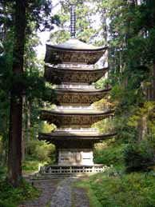
I activated my 7 day Japan rail pass and in one day went from Kushiro to Sendai, taking a brief look at the Sapporo Ainu museum, and seeing the southern volcanoes of Hokkaido from the train along the way. The next day (day 2) I was on Haguro-san, one of the holy mountains of Dewa Sanzan. The mountains have been worshipped for centuries by yambushi, Shugendo followers. Hearn calls them exorcisersI followed a man in yambushi attire leading a group of Japanes into the Saikan lodge where I watched a video about the ascetic, mountain-dwelling sect that "seeks oneness with kami". Shugendo, which means "the path of training and testing" was founded 1300 years ago. It is considered as the foundation of Vajrayana in Japan. Vajrayana of Shugendo (shugen mikkyo) teaches "the mountain is considered as the supernatural mandala." It incorporates teachings from Koshinto, Buddhism and other Eastern philosophies including folk animism. The focus of shugendo is the development of spiritual experience and power. After the Shugendo lineage there are Tendai and Shingon lineages.
Afterwards I walked down the stone steps lined with ancient cedars. At the bottom I came across the 14th century 5 storey Pagoda shown right.
The Gojuto Pagoda, near the base of Mount Haguro
Travelling on quickly, since I only had one week of unlimited travel on the JR shinkansen, I moved on along the Sea of Japan coastline to Nigata, reaching Nagano late at night. I awoke early at dawn (day 3) and walked to the Zenkoji temple to find the morning service about to begin. I listened in awe to the disciplined and orderly procedure, dwelling at the core of its spirit. The early-morning blessing ceremony was given by a high priest and also a high priestess. Zenko-ji was founded before Buddhism in Japan was split into several different sects, so it currently belongs to both the Tendai and Jodo Shu schools of Buddhism. Tendai
Tendai is a
descendant of the Chinese Tiantai or Lotus Sutra school. The founder
of the movement in China, T'ien-t'ai Chih-i (538-597) provided a
religious framework suited to adapt to other cultures, to evolve new
practices, and to universalize Buddhism.
The Tiantai teaching was first brought to Japan by Jianzhen (Jp:
Ganjin) in the middle of the 8th century, but was not widely accepted.
In 805, the Japanese monk Saicho returned from China with new Tiantai
texts and made the temple that he had built on Mt. Hiei, Enryakuji (on
the NE outskirts of Kyoto), a center for the study and practice of
what became Japanese Tendai.
In 804, Emperor Kammu sent the intrepid monk Kukai to the Tang Dynasty
capital at Chang'an (present-day Xi'an) to retrieve the latest
Buddhist knowledge. Kukai absorbed the Vajrayana
thinking and synthesized a version which he took back with him to
Japan, where he founded the Shingon school.
What Saicho transmitted from China was not exclusively Tiantai, but
also included Zen, esoteric Mikkyo, and Vinaya School elements. Tendai
flourished under the patronage of the imperial family and nobility in
Japan, particularly the Fujiwara clan; in 794, the Imperial capital
was moved to Kyoto. Tendai Buddhism became the dominant form of
main-stream Buddhism in Japan for many years, and gave rise to most of
the developments in later Japanese Buddhism. Nichiren, Honen, Shinran,
and Dogen—all famous thinkers in non-Tendai schools of Japanese
Buddhism—were all initially trained as Tendai monks.
Tendai is rooted in the ideas fundamental to Mahayana
Buddhism, that Buddha-hood, the capability to attain
enlightenment, is intrinsic in all things, and that the phenomenal
world, the world of our experiences, is an expression of Dharma. Our
differentiated experiences are born of the Tendai claim that each and
every sense phenomenon just as it is 'is' the expression of Dharma.
For Tendai, the ultimate expression of Dharma is the Lotus Sutra. The
fleeting nature of all sense experiences, existence and experience of
all unenlightened beings is equivalent and undistinguishable from the
teachings of the Lotus Sutra. With the introduction of esoteric ritual
(Mikkyo, later named Taimitsu by Ennin) the chanting Mantras,
maintaining Mudras, or performing certain meditations, made one able
to see that the sense experiences are the teachings of Buddha, and to
have faith that one is inherently an enlightened being who can attain
enlightnenment within this body.
The origins of Taimitsu are found in China, similar to the lineage
that Kukai
encountered in his visit to China during the Tang Dynasty, and
Saicho's disciples were encouraged to study under Kukai. As a result,
Tendai esoteric ritual bears much in common with the Vajrayana
tradition of Shingon Buddhist
ritual, though the doctrines may differ somewhat. Though Buddhist
doctrine held that one should not concern oneself with any religious
practice save the pursuit of enlightenment, Tendai allowed
reconciliation with Shinto, and its heavenly pantheon of Japanese gods
and myriad spirits associated with places, shrines or objects. Priests
of the Tendai sect argued that Kami are simply representations of the
truth of universal buddha-hood that descend into the world to help and
teach mankind. But while Buddhas represent the possibility of
attaining enlightentment, Kami are manifest representations of the
universal buddha-hood. Therefore, they exemplify the ultimate truth
that all things are inherently enlightened and that it is possible for
a person of sufficient religious faculties to attain enlightenment
instantly within this very body. Those Kami that Shinto regards as
violent or antagonistic to mankind are considered as supernatural
beings that reject dharma and have not attained enlightenment.
The fundamental teaching of Buddhism that one must shed away worldly
attachments and desires in order to attain enlightenment created a
conflict with the culture of every society into which Buddhism was
introduced. The shedding of worldly pleasures and attachments would
require that poetry, literature, and visual arts be discarded. By
claiming that the phenomenal world is not distinct from Dharma, Tendai
doctrine allowed for the reconciliation of beauty and aesthetics with
Buddhist teachings. Contemplation of the arts, provided that it is
done in the context of Tendai doctrine, is simply contemplation of
Dharma.
Jodo shu
Jodo shu (The Pure
Land School) is a branch of Pure Land Buddhism derived from the
teachings of the Japanese ex-Tendai monk Honen. It was established in
1175 and is the most widely practiced branch of Buddhism in Japan,
along with Jodo Shinshu.
Honen was born in 1133. Honen was initiated into his uncle's monastery
at the age of 9. From then on, Honen lived his life as a monk, and
eventually studied at the famous monastery of Mount Hiei. Honen became
dissatisfied with the Tendai Buddhist teachings. Influenced by the
writings of Shan-tao, Honen devoted himself solely to Amitabha (Amida)
Buddha, as expressed through the nembutsu.
Honen gathered disciples from all walks of life, and developed a large
following, notably women, who had been excluded from serious Buddhist
practice up to this point. Jodo Shu is heavily influenced by the idea
of the Age of Dharma Decline. This concept is that over time society
becomes so corrupt, that people can no longer effectively put the
teachings of the Buddha into practice anymore. The Jodo Shu school was
founded near the end of the Heian Period when Buddhism in Japan had
become deeply involved in political schemes, and some in Japan saw
monks flaunting wealth and power. Honen sought to provide people a
simple Buddhist practice in a degenerate age: Devotion to Amida Buddha
as expressed in the nembutsu. Through Amida's compassion, a being may
be reborn in the Pure Land (Sukhavati in Sanskrit).
Repetition of the nembutsu derives from the Primal Vow of Amida
Buddha. However, in addition to this, practitioners are encouraged to
engage in observing the Five Precepts, meditation, the chanting of
sutras and other good conduct. There is no strict rule on this. The
Larger Sutra of Immeasurable Life is the central scripture for Jodo
Shu, and the foundation of the belief in the Primal Vow of Amida. The
Contemplation Sutra and the Amitabha Sutra (The Smaller Sutra of
Immeasurable Life) are also important.
The main branch of Jodo Shu is 'Chinzei'. Other disciples of Honen
branched off into a number of other sects. The Seizan branch,
structured the Buddhist teachings into a hierarchy with the nembutsu
at the top. Ryukan taught that faith in Amida Buddha mattered, not so
much the actual practice of the nembutsu. Kosai taught the idea that a
single recitation of the nembutsu was all that was necessary. Chosai
felt that all practices in Buddhism would lead to birth in the Pure
Land. Awanosuke is credited with the double-stranded rosary, or juzu.
The Jodo Shinshu sect diverges doctrinally, but is heavily influenced
by Honen. In Jodo Shinshu, Honen is considered the Seventh Patriarch.
A couple of months later, at the end of my journey, when I stayed in the mountains of Kyoto, I would come down and mediatate in the main temple at Chion-in, the highest temple of Jodo shu. There was a liberty that allowed the spirit essence of the sactuary pass through me, and a feeling there was a oneness towards all members of the social order, but I didnt know if this prevailed in practice.
{kind=link}
After Nagano I went to see my first castle at Matsumoto
and took the slow local train north enough to see the snow capped
mountains of the Japan
Alps. Then I visited Tokyo for the afternoon, seeing the lights of
the Ginza as night fell, then taking the shinkansen to sleep on the
river bank near Nikko.
Next morning (day 4) I toured the temple
complex, which consisted of the temple buildings of Rinno-ji,
established in 766 by the Tendai Buddhist monk, Shodo; and the Futarasan
Shinto Shrine.
Afterwards I went back to Tokyo for the day, visiting the Akihabara
electronics town, Tokyo's oldest temple, Senso-ji,
in Asakusa, formerly associated with the Tendai sect, but independent
after World War II. It was dedicated to the bodhisattva Kannon (also
known as Guan Yin or the Goddess of Mercy, who originated from the male
bodhisattva Avalokitesvara, known
in Tibet as Chenrezig, who is said
to be incarnated in the Dalai Lama).
Then moved on to the Meiji-jingu,
a featureless, but modestly grand shrine situated in a natural gardens,
from where I detoured to the relatively close, 'only' vegan resturant in
Japan, the Pure cafe, where I
had a real vegan meal. This was a relief since that was the first meal I
ate since leaving the rainbow gathering. As a rule for vegans, all
prepared food has fish sauce in it at least, unless you can speak
Japanese and ask for sure. So up till then I was living on raw tofu and
soba, soy power mixed with water as a drink, raw barley flour mixed with
water (an ascetic monk delicacy), and other things that were visually
recognised as vegan.
After that I sped off again to sleep in the forest at Kamakura.
Next morning (day 5) an early morning walker made himself my guide and
showed me some of the shrines. I didnt see the Daibutsu.
I took the shinkansen to Nagoya, saw the Kusakabe
heritage house at Takayama,
went up to the Sea of Japan coastline round to Kanazawa
from where I journey south right down to near the vicinity of Ise to
sleep the night.
The ordinary town of Ise (day 6) becomes intensely beautiful upon
reaching either of the Ise Jingu separate shrine complexes of Naiku and
Geku because the region around the shrines consists of the Ise-Shima
National Park.
{kind=link}
Ise
Grand Shrine (Ise Jingu) is a Shinto shrine dedicated to goddess
Amaterasu-omikami. The Inner Shrine, Naiku is dedicated to
Amaterasu-omikami. The Outer Shrine, Geku is dedicated to Toyouke no
omikami, the deity of agriculture and industry.
The Naiku shrine is arguably one of Shinto's holiest and most
important sites. The High Priest or Priestess of Ise Shrine must come
from the Japanese Imperial Family, and is responsible for watching
over the Shrine.
The official name of the main shrine of Naiku is Kotaijingu, the place
of worship of Amaterasu. It is said to hold the Sacred Mirror, one of
three sacred items given to the first emperor by the gods. According
to the Nihon Shoki, around 2,000 years ago the divine
Yamatohime-no-mikoto, daughter of the Emperor Suinin, set out from Mt.
Miwa in modern Nara Prefecture in search of a permanent location to
worship Amaterasu, wandering for 20 years. Her search eventually
brought her to Ise, where she is said to have established Naiku after
hearing the voice of Amaterasu saying "(Ise) is a secluded and
pleasant land. In this land I wish to dwell." Before Yamatohime's
journey, Amaterasu had been worshiped at the Imperial residence in
Yamato.
Besides the traditional establishment date of 4 BC, other dates of the
3rd and 5th centuries have been put forward for the establishment of
Naiku and Geku respectively. The first shrine building at Naiku was
erected by Emperor Temmu (678-686), with the first ceremonial
rebuilding being carried out by his wife, Empress Jito, in 692.
From the late 7th century until the 14th century, the role of High
Priestess of Ise Shrine was carried out by a female member of the
Japanese Imperial Family, known as a Saio. According to the Man'yoshu
the first Saio to serve at the shrine was princess Okunohime-miko,
daughter of Emperor Temmu, during the Asuka period. The Saio system
ended during the turmoil of the Nambokucho Period.
During the Empire of Japan period, and the establishment of State
Shinto, the position of High Priest of the Ise Shrine was fulfilled by
the reigning Emperor, so Emperors Meiji, Taisho and Showa all played
the role of High Priest during their reigns. Since the
disestablishment of State Shinto during the Occupation of Japan, the
offices of high priest and most sacred priestess have been held by
former members of the imperial family or their descendants. The
current High Priest of the shrine is a great grandson of the Meiji
Emperor.
The shrine buildings are dismantled and new ones
built on an adjacent site to exacting specifications every 20 years at
exorbitant expense, so that the buildings will be forever new and
forever ancient and original. It is part of the belief of the death
and renewal of nature and the impermanence of all things (wabi-sabi)
as a way of passing building techniques from one generation to the
next. The present buildings, dating from 1993, are the 61st iteration
to date and are scheduled for rebuilding in 2013.
In the lead-up to the rebuilding of the shrines, a number of festivals
are held. The Okihiki Festival is held in the spring over two
consecutive years and involves people from surrounding towns dragging
huge wooden logs through the streets of Ise to Naiku and Geku. In the
lead-up to the 2013 rebuilding, the Okihiki festival was held in 2006
and 2007. A year after the completion of the Okihiki festival,
carpenters begin preparing the wood for its eventual use in the
Shrine.
The first important ceremony is the Kinensai, where prayers are
offered for a bountiful harvest. The most important festival is the
Kannamesai Festival. Held in October each year, this ritual makes
offerings of the first harvest of crops for the season to Amaterasu.
An imperial envoy carries the offering of rice harvested by the
Emperor himself to Ise, as well as five-coloured silk cloth and other
materials, called heihaku. Other ceremonies and festivals are held
throughout the year to celebrate new year, the foundation of Japan,
past emperors, purification rituals for priests and court musicians,
good sake fermentation and for the Emperor's birthday. There are also
daily food offerings to the shrine kami held both in the mornings and
evenings.
I headed for Himeji
castle, but the quickest way was by gooing back to Nagoya and
catching a Shinkansen. Before the day ended I visited the Hiroshima,
then sped on, leaving Honshu, to Kyushu, sleeping on the beach at Beppo.
I caught the early morning train to Yufuin
(day 7), then backtracked to see the Stone Buddhas at Usuki,
then took the painfully slow train down the Pacific ocean coast to Aoshima.
When I walked out to closely inspect these rock formations referred to
as the 'Ogre's
Washboard' I concluded for a while that someone had cemented the
seeming multitudes of plates together, until I couldnt see why. It
boggles the imagination how something like this is naturally formed, and
why.
I arrived in Kagoshima
at about midnight, and that was the end of my rail pass. Really amazing
I could fit all these places from Kushiro, Hokkaido to Kagoshima, Kyushu
into one week. I was worn out and dirty, and went to sleep in a paddock
next to the station. Finally I could slow down and let the days go by.
{kind=link}
Emblem of Kagoshima
I got cleaned up and refreshed the next morning on the island of the volcano Sakurajima, just a short ferry ride away, spending the day there. Returning to Kagoshima, I was surprised to learn that the Jesuit, St Francis Xavier had visited there in 1549. The St. Xavier church is a reminder of the first Christians who came to Japan.
Mon (family crest) of Shimazu clan
Kagoshima was the center of the territory of the Shimazu clan of samurai for many centuries. It served as the political center for the semi-independent vassal kingdom of Ryukyu. Shimazu Tadatsune organized the Shimazu invasion of the Ryukyu Kingdom in 1609. He became the first Japanese to rule over the Ryukyu Kingdom.I bought a ferry ticket which gives you seven days to stop off in any island that they stop at, so I stopped off on Tokunoshima, Okinoerabu-jima, Yoronto and got off at northern Okinawa. But the islands south of Okinawa is where the real tropical feeling lies, with thick rainforest and coral reef in the surrounding asure waters.
Meeting with Dr Kimura
Jun 23, 2009 ... Naha, OkinawaDr Kimura received me with so much of the grace, gentleness and respect that is alive here in Japan from one end to the other, in young and old. Our two or three hours of discussion was amiable and intense. Though he perceived much of what I said, language was a difficulty.
He had a study bungalow at the side of his house where, before a large screen fast computer, there was no problem bringing up my large 'Pan' website, and the online Oahspe.
Covering some of the Oahspe basics in order to understand the "Flood" story was difficult, but his interest was piqued by my Churchward quotes and related Oahspe symbol. I later saw in his book (Japanese only, see below) that he draws much from Churchward.
That Churchward had quoted Oahspe, John Ballou and 138 ships (see Churchward's Belief, and Oahspe) was reason enough for his increasing interest in Oahspe.
Before I arrived he made a rough map of his own, with Churchward's Mu, Oahspe's Pan, and a much smaller circle in the Japan Area, explaining that he calculated this area from what historical and geological info he could get. He mentioned something about the first Chinese emperor, Qin, but language and time prevented me from finding out what he meant. Qin was believed to have an underground musoleum (something the Dr. mentioned) where he was to gain immortality (in vain). There were a few things I learned. I asked him how the modern word 'Japan' could mean 'relic of Pan', since the word Nippon (Japanese native name for Japan) didnt mean much to me. He explained Nippon is two words 'Nih' .. the "Land of the Rising Sun", and 'pong', meaning that which is fundumental.
At the time I took this combination to mean Pan, the original land of the dawn of man, and told him this made sense to me for the first time.
According to Oahspe man's primordial language was Se’moin, also known as Panic, from the name Pan. There is a tablet shown giving symbols of the original words, the first pictograms. The first one is a horizontal line with the sound of Ah, representing the earth, but an equivalent sound for the same symbol is also given as "Pan" meaning "the foundation", or "the ground". So the second Chinese character in the word Ni-pon certainly has the same meaning as Pan in Oahspe. I understand that Kanji is largely interpretation of symbols, so I expect that the first character of Ni, meaning "sun", was originally interpreted as the dawn of the light of man. Strangely, the Algonquin [Native American] word "Wh'ah" is also equivalent to Ah and Pan. This is strange because Dr Kimura had also told me that "Wa" is the oldest name for Japan. This is verified at this website.
His book, which I have, is called "A New Theory of Mu" by "Kimura
Masaaki".
There is a picture of the cover of his other book inside which is called
"Underwater Pyramids of Mu", and he gives references to his previous
books "Major magmatic activity as a key to predicting large earthquakes
along the Sagami Trough, Japan" and "Discovery of Submarine pyramids off
Yonaguni in Japan" (2001), ... and Churchward's five books regarding Mu.
The other references are in Japanese. There is a picture of Teotequacan
Mexican pyramid, Ankor Wat, Easter Island, and many graphs with Japanese
labels, a picture of what looks to be the Qin emperor, near a map of
what appears to be his version of the expansion of civilisation ... the
interest here being arrows pointing to Japan both from the Ham/Europa,
Shem, and Jaffeth areas and also Guatama. Also many diagrams of evidence
supporting his man made 'pyramid' theory.
I pointed out that the lands of Ham, Shem, and Jaffeth of Oahspe were
names in the Noah story of the Bible. He also has much about the Okinawa
'rosetta stone' with diagrams of its symbols.
Early Names of Japan
55. The fleet of two ships carried to the north was named Yista, which in the Whaga tongue was Zha'Pan, which is the same country that is to this day called Japan, signifying Relict of the Continent of Pan, for it lay to the north, where the land was cleaved in twain.The Lords’ First Book Ch. I of Oahspe
The ancient name of Whaga could possibly still be existent in the names Wōguó/Wakoku [lit. "Japan country"] which is an old Chinese/Japanese name of Japan. The Japanese name for Japan is written in Japanese using the two
kanji characters日
(nichi) which means "day" or "sun" and 本 (hon) which means "origin",
"base" or "root" . Both readings come from the on'yomi
(a Japanese approximation of the Chinese pronunciation of the
character). Hon often changes in compounds of it to 'bon' or 'pon'
because h, b and p are closely related sounds in Japanese. Therefore
there are two possible pronunciations for 日本: Nihon or Nippon. You can hear
Nippon pronounced here,
and Nihon pronounced here.
While both pronunciations are correct, Nippon is frequently preferred
for official purposes.
The compound meaning of the two characters can become "original
day" to signify where the first day of man began (ie on
the now sunken continent of Pan), but the accepted meaning is
'sun-origin', "where the sun originates", or sunrise. It can be
translated as the "Land
of the Rising Sun". Because Japan lies to the east of China,
where this word is said to have originated, it is believed that
'sun-origin' refers to the land in the east where the sun rises.
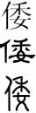
Wo, in Kaishu, Clerical and Seal scripts (top to bottom).
The Twenty Four Histories is a collection of Chinese historical books covering a period from 3000 BC to the Ming Dynasty in the 17th century. It is considered an authoritative source of traditional Chinese history. One of the earliest four books of these is the Sanguó Zhì 三 國志 translated as 'Records of Three Kingdoms'. It is the official historical text on the period of Three Kingdoms covering 189-280 AD, that was written by the Chinese Historian Chen Shou (233–297 AD). It contains 65 volumes which are broken into three books, the Book of (Cao) Wei, Shu and Wu.The Wei-chih (or Wei Zhi), the Book of Wei (in Japanese called the Books of the Kingdom of Gi) , has a volume called the Chronicles of Wa [or Gishi Wajinden in Japanese] - an account of the people of Wa, that describes the life and culture of the eastern barbarians (or dwarfs), written by Chinju [Chen Shou] in the Year 285. This is the first account of the people of Japan in the annals of history. An English translation can be seen here
Before Japan had relations with China, it was known as Hi
no moto, which means "source of the sun" and Yamato.
The ancient Chinese called Japan "Wō" (the Japanese say Wa). This is
the Chinese character for Wō and Wa 倭. It was a name early China used
to refer to an ethnic group living in Japan around the time of the Three Kingdoms
Period. Because the character originally used to transcribe the
ethnonym Wa means
"dwarf" in Chinese, and taken to be derogatory by Japanese, a
different character, 和, which means "harmony", came to be used in
Japan. Later this character was adopted in Japan to refer to the
country itself, often combined with the character 大, literally meaning "Great", to
write the pre-existing name Yamato 大和 (as in 大清帝國 Great Qing Empire, and 大英帝 國
Great British Empire). However, the pronunciation Yamato
cannot be formed from the sounds of its constituent characters. It
refers to a place in Japan. When 'hi no moto' was written in kanji, it
was given the characters 日本. In time, these characters began to be read
using pseudo-Chinese readings, first Nippon and later Nihon.
Nippon appeared in history only at the end of the 7th century. Old
Book of Tang, one of the Twenty-Four Histories, stated that the
Japanese envoy disliked his country's name Woguo
倭
國 [compare Woguo with Whaga], and changed it to Nippon (日本)
or "Origin of the Sun". Another 8th-century chronicle, True Meaning of
Shiji, however, states that the Chinese Empress Wu Zetian ordered a
Japanese envoy to change the country's name to Nippon. 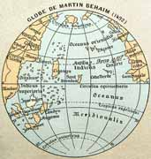
{kind=link}
Cipangu located on the 1492 Martin Behaim globe.
The English word for Japan came to the West from early trade routes. The
early Mandarin Chinese or possibly Wu Chinese word for Japan was
recorded by Marco Polo as Cipangu. The modern Shanghainese (a Wu Chinese
dialect) pronunciation of characters 日本 (Japan) is still Zeppen
[compare Zeppen with Zha'Pan]. The old Malay word for Japan, Jepang was
borrowed from a Chinese language, and this Malay word was encountered by
Portuguese traders in Malacca in the 16th century. It is thought the
Portuguese traders were the first to bring the word to Europe. It was
first recorded in English in 1577 spelled Giapan.From the Meiji Restoration until the end of World War II, the full title of Japan was 大日本帝國 Dai Nippon Teikoku or Great Empire of Japan). More poetically, another name for the empire was "Empire of the Sun". The official name of nation now is Nippon/Nihon koku (日本国), literally "Country of Japan".
Linguists believe "Japan"derives in part from the Portuguese recording of the early Mandarin Chinese or Wu Chinese word for Japan: Cipan (日本), which literally translates to "country of sun origin". Guó is Chinese for "realm" or "kingdom", so it could alternatively be rendered as "Japan-guó".
Cipangu was first mentioned in Europe in the accounts of the travels of Marco Polo. It appears for the first time on a European map with the Fra Mauro map in 1457, although it appears much earlier on Chinese and Korean maps such as the Kangnido.
Wa, the oldest recorded name of Japan
Japanese Wa (倭, "Japan, Japanese", from Chinese Wō 倭), is the oldest recorded name of Japan. Chinese, Korean, and Japanese scribes regularly wrote Wa or Yamato with the Chinese character 倭 until the 8th century, when the Japanese found fault with it, replacing it with 和, "harmony, peace, balance". The Japanese endonym Wa 倭 (Japan) derives from the Chinese exonym Wō
倭 (Japan, Japanese). The Chinese character 倭 combines the 人 or 亻
(human, person) radical and a wei 委 (bend) phonetic. This wei phonetic
element depicts hé 禾 (grain) over nu 女 (woman), which can be
semantically analyzed as:
"bent, crooked; fall down, reject; send out, delegate – to bend like a
女 woman working with the 禾 grain."
The oldest written forms of 倭 are in Seal script, and it has not been
identified in Bronzeware script or Oracle bone script.
Most characters written with this wei 委 phonetic are pronounced wei in
Standard Mandarin:
wèi 魏
Cao Wei (one of the dynasties of China) wēi 逶
("motion" radical) "serpentine; winding, curving" [in wēiyí 逶迤 "winding (road, river)"]
wěi 萎
("plant" radical) "wilt; wither"
wěi
痿
("sickness" radical) "atrophy; paralysis; impotence"
wèi 餧
("food" radical) "feed (animals)"
wěi
諉
("speech" radical) "shirk; shift blame (onto others)"
The unusual Wō 倭 "Japan" pronunciation of this wei 委 phonetic element compares with:
Wō 踒
("foot" radical) "strain; sprain (sinew or muscle)"
wǒ 婑 ("woman" radical) "beautiful" [in
wǒtuo 婑
媠 "beautiful; pretty"]
A third pronunciation is found in the reading of ǎi 矮 ("arrow" radical) "dwarf, short; low; inferior"
Nara period Japanese scholars believed that Chinese character for Wō
倭 "Japan", which they used to write "Wa" or "Yamato", was graphically
pejorative in denoting 委 "bent down" 亻 "people". Around 757 AD, Japan
officially changed its endonym from Wa 倭 to Wa 和 "harmony; peace; sum;
total". This replacement Chinese character hé 和 combines a hé 禾
"grain" phonetic (also seen in 倭) and the "mouth" radical 口.
Not long after the Japanese began using 倭 to write Wa ~ Yamato
'Japan', they realized its 'dwarf; bent back' connotation. The chosen
replacement wa 和 'harmony; peace' had the same Japanese wa
pronunciation as 倭 'dwarf', and - most importantly - it was
semantically flattering. The notion that Japanese culture is based
upon wa 和 'harmony' has become an article of faith among Japanese and
Japanologists.
In Chinese, the character 倭 can be pronounced wēi "winding", wǒ "an
ancient hairstyle", or Wō "Japan".
The first two pronunciations are restricted to Classical Chinese
bisyllabic words.
Wēi 倭 occurs in wēichí 倭遲
"winding; sinuous; circuitous; meandering", which has numerous
variants including wēiyí 逶迤 and 委蛇.
The oldest recorded usage of 倭 is the Shi Jing description of a wēichí
倭遲 "winding; serpentine; tortuous"
road; using wēituó 委佗 "compliant; bending, pliable; graceful".
Wǒ 倭 occurs in wǒduòjì 倭墮髻 "a
woman's hairstyle with a bun, popular during the Han Dynasty".
The third pronunciation Wō 倭 "Japan; Japanese" is more productive than the first two, as evident in Chinese names for "Japanese" things.
Wōkòu 倭寇 "Japanese pirates"
wōqi 倭漆 "Japanese lacquerware"
wōdao 倭刀 "Japanese sword"
wōgua 倭瓜 (lit. "Japanese melon") "pumpkin; squash"
wōhéma 倭河馬 "pygmy hippopotamus"
wōzhu 倭豬 "pygmy hog"
wōhúhóu 倭狐猴 "dwarf lemur"
Chinese historical texts recorded an ancient people residing in the
Japanese archipelago (perhaps Kyushu), named something like Wâ 倭.
The Japanese first-person pronoun for "my; our" is waga
我.
Compare this with Whaga.
Interpretations for Wâ "Japanese" were put into variations on two
etymologies: "behaviorally 'submissive' or physically 'short'.
The first "submissive; obedient" explanation began with the Shuowen
Jiezi dictionary (121 AD). It defines 倭 as shùnmào 順皃
"obedient/submissive/docile appearance" and graphically explains the
"person; human' radical with a wei 委 "bent" phonetic.
Conceivably, when Chinese first met Japanese they transcribed Wa as
'bent back' signifying 'compliant' bowing/obeisance. Bowing is noted
in early historical references to Japan.
Koji Nakayama interprets wēi 逶 "winding" as "very far away" and
euphemistically translates Wo 倭 as "separated
from the continent."
The second etymology of wō 倭 meaning "dwarf; short person" has
possible cognates in ai 矮 "short person; midget, dwarf; low", wō 踒
"strain; sprain; bent legs", and wò 臥 "lie down; crouch; sit (animals
and birds)".
Early Chinese dynastic histories refer to a Zhurúguó 侏儒國 "pygmy/dwarf
country" located south of Japan, associated with possibly Okinawa
Island or the Ryukyu Islands. Carr cites the historical precedence of
construing Wa as "submissive people" and the "Country of Dwarfs"
legend as evidence that the "little people" etymology was a secondary
development.
The Japanese 'Ryu' character means dragon. Therefore Ryu-kyu means nine dragons.
Okina=big Wa=ring Therefore Okina-Wa means 'big ring'Half of the Western language dictionaries note that Chinese Wo 倭 "Japanese" means "little person; dwarf", while most Chinese-Chinese definitions overlook the graphic slur with "ancient name for Japan" definitions. The explicitly racist "dwarf" description is found more often in Occidental language dictionaries than in Oriental ones. The historically more accurate, and ethnically less insulting, "subservient; compliant" type is limited to Chinese-Japanese and Chinese-German dictionaries. The "derogatory" notation occurs most often among Japanese and European language dictionaries. The least edifying "(old name for) Japan" type definitions are found twice more often in Chinese-Chinese than in Chinese-Japanese dictionaries, and three times more than in Western ones.
Historical evidence for the existence of Wa
Possibly the earliest record of Wō occurs in the Shan Hai Jing, 山海經 dating from maybe 300 BC to 250 AD. The Haineibei jing, or "Classic of Regions within the North Seas" chapter includes Wō 倭 among foreign places both real (Gojoseon was an ancient Korean kingdom) and legendary, saying:Kai Land is south of Chü Yen and north of Wō. Wo belongs to Yen. Ch’ao-hsien [Choson, Korea] is east of Lieh Yang, south of Hai Pei [sea north] Mountain. Lieh Yang belongs to Yen.
Nakagawa notes Zhuyan refers to the (ca. 1000-222 BCE) kingdom of
Yan (state), which had a "possible tributary relationship" with "Wo (dwarfs), Japan was first known by
this name".
The Han Shu (Book of Han ca. 82 AD) 漢書 covers the Former Han Dynasty
(206 BC-24 AD) period. It records that:
Beyond Lo-lang in the sea, there are the people of Wo. They comprise more than one hundred communities #27138;浪海中有倭人分爲百餘國 It is reported that they have maintained intercourse with China through tributaries and envoys.
Emperor Wu of Han established this Korean Lelang Commandery in 108 BCE.
The Wei Zhi 魏志 (Records of Wei, ca. 297 AD), covers history of the Cao Wei kingdom (220-265 AD). The Encounters with Eastern Barbarians 東夷伝 section describes the Worén 倭人 (Japanese) based upon detailed reports from Chinese envoys to Japan. It contains the first records of Yamataikoku, shamaness Queen Himiko, and other Japanese historical topics.
倭人在帯方東南大海之中依山爲國邑舊百餘國漢時有朝見者今使早
譯所通三十 國]
The people of Wa dwell in the
middle of the ocean on the mountainous islands southeast of [the
prefecture] of Tai-fang. They formerly comprised more than one
hundred communities. During the Han dynasty, [Wa envoys] appeared at
the Court; today, thirty of their communities maintain intercourse
[with us] through envoys and scribes.
This Wei Zhi context describes sailing from Korea to Wa and around the Japanese archipelago saying:
A hundred li to the south [about 35 km], one reaches the country of Nu 奴國. Here there are more than twenty thousand households.
It is suggested that this ancient Núguó 奴國 (lit. "slave country"), Japanese Nakoku 奴国, was located near present-day Hakata in Kyushu. Once Fukuoka was two seperate towns, the lordly Fukuoka castle, and the area for common folks, Hakata, across the river, but they merged eventually.
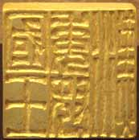
The golden Imperial Seal of China said to have been granted to the "King of Wa" by Emperor Guangwu of Han.
Nakoku (奴国, na no kuni?) was a state located around Fukuoka on Kyushu, from the 1st to early 3rd centuries. According to the Book of Later Han, in 57 AD, Emperor Guangwu of Han granted Nakoku an imperial seal made of gold. This gold seal was discovered in 1784 by an Edo period farmer on the island of Shikanoshima (Hakata Bay), thus helping to verify the existence of Nakoku (Nu/Na country) which was otherwise known only from the ancient chronicles. The seal bears the inscription 漢委奴國王 The characters represent:
Han 漢 wa (withouth the "person" radical)
委 nu/na - slave 奴
koku - country 國 kan - sovereign/king 王
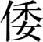
Chinese character for Wō or Wa, formed by the "person" radical 亻and a wěi or wa 委 phonetic element
This is usually translated as "Han [vassal?] King of the Wa country Nu", or kan no wa no na no koku-o, King of the Japanese country of Na of Han.A reference is found in the Gishiwajinden (魏志倭人 伝, Records of Wei: Biography of the Wa people), a portion of the Chinese Records of the Three Kingdoms, to the continued existence of Nakoku in the 3rd century.
The Wei Zhi continues saying some 12,000 li [about 4,200 km] to the south of Wa is Gounúguó 狗奴國 (lit. "dog slave country") [Japanese Kunakoku], which is identified with the Kumaso tribe that lived around Higo and Osumi Provinces in southern Kyushu. Beyond that,
Over one thousand li [about 350 km] to the east of the Queen's land, there are more countries of the same race as the people of Wa. To the south, there is the island of the dwarfs 侏儒國 where the people are three or four feet tall. This is over 4,000 li [about 1,400 km] distant from the Queen's land. Then there is the land of the naked men, as well of the black-teethed people. These places can be reached by boat if one travels southeast for a year.
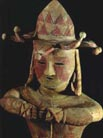
A tattooed Haniwa statue, 4th-6th century, Kamiyasaku Tomb, Fukushima Prefecture.
One Wei Zhi passage relates Wa tattooing with legendary King Shao Kang of the Xia Dynasty.Men great and small, all tattoo their faces and decorate their bodies with designs. From olden times envoys who visited the Chinese Court called themselves "grandees" 大夫. A son of the ruler, Shao-k'ang of Hsia, when he was enfeoffed as lord of K'uai-chi, cut his hair and decorated his body with designs in order to avoid the attack of serpents and dragons. The Wa, who are fond of diving into the water to get fish and shells, also decorated their bodies in order to keep away large fish and waterfowl. Later, however, the designs became merely ornamental.
"Grandees" translates as Chinese dàfu 大夫 (lit. "great man") "senior official; statesman" (cf. modern dàifu 大夫 "physician; doctor"), which mistranslates Japanese imperial taifu 大夫 "5th-rank courtier; head of administrative department; grand tutor" (the Nihongi records that the envoy Imoko was a taifu).
A second Wei history, the Weilüe 魏略 "Brief account of the Wei dynasty" (ca. 239-265 AD) is no longer extant, but some sections (including descriptions of the Roman Empire) are quoted in the 429 AD San Guo Zhi commentary by Pei Songzhi. He quotes the Weilüe that "Wō people call themselves posterity of Tàibó" 倭人自謂太伯之後. Taibo was the uncle of King Wen of Zhou, who ceded the throne to his nephew and founded the ancient state of Wu (585-473 BCE). The Records of the Grand Historian has a section titled 吳太伯世家 "Wu Taibo's Noble Family", and his shrine is located in present day Wuxi. Researchers have noted cultural similarities between the ancient Wu state and Wō Japan including ritual tooth-pulling, back child carriers, and tattooing (represented with red paint on Japanese Haniwa statues).
The Hou Han Shu 後漢書 "Book of Later/Eastern Han" (ca. 432 AD) covers the Later Han Dynasty (25-220 AD) period, but was not compiled until two centuries later. The Wōrén 倭人 "Japanese" are included under the 東夷伝 "Encounters with Eastern Barbarians" section.
The Wa dwell on mountainous islands southeast of Han [Korea] in the middle of the ocean, forming more than one hundred communities 倭人在帯方東南大海之中依山爲國邑舊百餘國. From the time of the overthrow of Chao-hsien [northern Korea] by Emperor Wu (BC 140-87), nearly thirty of these communities have held intercourse with the Han court by envoys or scribes. Each community has its king, whose office is hereditary. The King of Great Wa resides in the country of Yamadai 邪馬台国.
This Hou Han Shu account of Japan contains some historical details not found in the Wei Zhi.
In … [57 AD], the Wa country Nu 倭奴國 sent an envoy with tribute who called himself ta-fu 大夫. This country is located in the southern extremity of the Wa country. Kuang-wu bestowed on him a seal. In … [107 AD], during the reign of An-ti (107-125), the King of Wa presented one hundred sixty slaves, making at the same time a request for an imperial audience.
The Song Shu 宋書 "Book of Song" (488 AD) covers the brief history of the Liu Song Dynasty (420-479 AD). Under the "Eastern and Southern Barbarians" 夷蠻 section, Japan is called Woguó 倭國 [compare this to Whaga], Japanese Wakoku, and said to be located off Goguryeo. In contrast with the earlier histories that describe the Wa as a 人 "people", this Song history describes them as a 國 "country".
The country of Wa is in the midst of the great ocean, southeast of Koguryo. From generation to generation, [the Wa people] carry out their duty of bringing tribute. 倭國 在高驪東南大海中世修貢職 In … [421 AD], the first Emperor said in a rescript: "Ts'an of Wa sends tribute from a distance of tens of thousands of li. The fact that he is loyal, though so far away, deserves appreciation. Let him, therefore, be granted rank and title.
This "King of Wa and General Who Maintains Peace in the East" 安東大將軍倭王 title was given to succeeding kings, and in 451 the Emperor additionally entitled the Wa king with five Korean countries as "General Who Maintains Peace in the East Commanding with Battle-Ax All Military Affairs in the Six Countries of Wa, Silla, Imna, Kala, Chin-han and Moku-han." The Song Shu gives detailed accounts of relations with Japan, indicating that the Wa kings valued their political legitimization from the Chinese emperors.
The Liang Shu 梁書 "Book of Liang" (635 AD) , which covers history of the Liang Dynasty (502-557), records the Buddhist monk Hui Shen's trip to Wa and the legendary Fusang. It refers to Japan as Wo 倭 (without "people" or "country" suffixation) under the Dongyi "Eastern Barbarians" section, and begins with the Taibo legend.
The Wa call themselves posterity of Tàibó. According to custom,
the people are all tattooed. Their territory is over 12,000 li [4200
km] from our Daifang, approximately east of Guiji (modern
Shaoxing). One must travel an incredible distance to get there.
倭者自云太伯之後俗皆文身去帶方萬二千餘里大抵在會稽之東相去絶遠
Later texts repeat this myth of Japanese descent from Taibo. The 1084 AD Chinese universal history Zizhi Tongjian 資治通鑑 speculates, "The present-day Japan is also said to be posterity of Tàibó of Wu; perhaps when Wu was destroyed, [a member of] a collateral branch of the royal family disappeared at sea and became Wo." [今日本又云吳太伯之後蓋吳亡其支庶入海為倭].
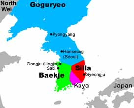
Baekje, Silla and Kaya Kingdoms of Korea
The Sui Shu 隋書 "Book of Sui" (636 AD) records the history of the Sui Dynasty (581-618) when China was reunified. Woguó/Wakoku is entered under "Eastern Barbarians", and said to be located off of Baekje and Silla, two of the Three Kingdoms of Korea.Wa-kuo is situated in the middle of the great ocean southeast of Paekche and Silla, three thousand li away by water and land. The people dwell on mountainous islands. 倭國 在百濟新羅東南水陸三千里於大海之中依山島而居 During the Wei dynasty, over thirty countries [of Wa-kuo], each of which boasted a king, held intercourse with China. These barbarians do not know how to measure distance by li and estimate it by days. Their domain is five month's journey from east to west, and three months' from north to south; and the sea lies on all sides. The land is high in the east and low in the west.
In 607 AD, the Sui Shu records that "King Tarishihoko" (a mistake for Empress Suiko) sent an envoy, Buddhist monks, and tribute to Emperor Yang. Her official message is quoted using the word Tianzi 天子 "Son of Heaven; Chinese Emperor".
"The Son of Heaven in the land where the sun rises addresses a letter to the Son of Heaven in the land where the sun sets. We hope you are in good health." When the Emperor saw this letter, he was displeased and told the chief official of foreign affairs that this letter from the barbarians was discourteous, and that such a letter should not again be brought to his attention.
In 608, the Emperor dispatched Pei Ching as envoy to Wa, and he returned with a Japanese delegation.
The Japanese Nihongi [Nihon Shoki] also records these imperial envoys of 607 and 608, but with a differing Sino-Japanese historical perspective. It records more details, such as naming the envoy Imoko Wono no Omi and translator Kuratsukuri no Fukuri, but not the offensive Chinese translation. According to the Nihongi, when Imoko returned from China, he apologized to Suiko for losing Yang's letter because Korean men "searched me and took it from me." When the Empress received Pei, he presented a proclamation contrasting Chinese Huángdì 皇帝 "Emperor" with Wowáng 倭王 "Wa King", "The Emperor 皇帝 greets the Sovereign of Wa 倭王." According to the Nihongi, Suiko gave Pei a different version of the imperial letter, contrasting Japanese Tenno 天皇 "Japanese Emperor" and Kotei 皇帝 "Emperor" (Chinese tianhuáng and huángdì) instead of using "Son of Heaven".
The Emperor 天皇 of the East respectfully addresses the Emperor 皇帝 of the West. Your Envoy, P'ei Shih-ch'ing, Official Entertainer of the Department of foreign receptions, and his suite, having arrived here, my long-harbored cares were dissolved. This last month of autumn is somewhat chilly. How is Your Majesty? We trust well. We are in our usual health.
The 797 AD Shoku Nihongi history said that this 607 AD Japanese mission to China first objected to writing Wa with the Chinese character 倭.
"Wono no Imoko, the Envoy who visited China, (proposed to) alter this term into Nippon, but the Sui Emperor ignored his reasons and would not allow it. The term Nippon was first used in the period … 618-626 AD." Another Chinese authority gives 670 AD as the date when Nippon began to be officially used in China.
{kind=link}
The island of Wa (probably modern Kyushu) is depicted
below the island of Japan (日本國) and above the island of Greater Ryukyu
(大琉球) on the right-hand side of this 16th century Chinese world map,
the Sihai Huayi Zongtu.
The custom of writing "Japan" as Wa 倭 ended during the Tang Dynasty
(618-907 AD). Japanese scribes coined the name Nihon or Nippon 日本 circa
608-645 AD and replaced Wa 倭 with a more flattering Wa 和 "harmony;
peace" around 756-757 AD. The linguistic change is recorded in two
official Tang histories.The Tang shu "Book of Tang" 唐書 (945 AD) has the oldest Chinese reference to Rìben 日本. The "Eastern Barbarian" section lists both Wakoku 倭国 and Nipponkoku 日本国, giving three explanations: Nippon is an alternate name for Wa, or the Japanese disliked Wakoku because it was "inelegant; coarse" 不雅, or Nippon was once a small part of the old Wakoku.
The Xin Tang Shu 新唐書 "New Book of Tang" (1050 AD) which has a Riben 日本 heading for Japan under the "Eastern Barbarians", gives more details.
Japan in former times was called Wa-nu. It is 14,000 li [4,900
km] distant from our capital, situated to the southeast of Silla in
the middle of the ocean. It is five months' journey to cross Japan
from east to west, and a three month's journey from south to north.
日本古倭奴也去京師萬四千里直新羅東南在海中島而居東西五月
行南 北三月行
Regarding the change in autonyms, the Xin Tang Shu says.
In … 670 AD, an embassy came to the Court [from Japan]
to offer congratulations on the conquest of Koguro. Around this
time, the Japanese who had studied Chinese came to dislike the name
Wa and changed it to Nippon. According to the words of the
(Japanese) envoy himself, that name was chosen because the country
was so close to where the sun rises.
後稍習夏音惡倭名更號日本使者自言國近日所出以為名
Some say, (on the other hand), that Japan was a small country which
had been subjugated by the Wa, and that the latter took over its
name. As this envoy was not truthful, doubt still remains.
或雲日本乃小國為倭所並故冒其號使者不以情故疑焉
[The envoy] was, besides, boastful, and he said that the
domains of his country were many thousands of square li and extended
to the ocean on the south and on the west. In the northeast, he
said, the country was bordered by mountain ranges beyond which lay
the land of the hairy men.
Subsequent Chinese histories refer to Japan as Rìben 日本 and only mention Wō 倭 as an old name.
The earliest Korean reference to Japanese Wa (Korean Wae) is the Gwanggaeto Stele (414 AD) that was erected to honor King Gwanggaeto the Great of Goguryeo (r. 391-413 AD). This memorial stele, which has the oldest usage of Wakō 倭寇 "Japanese pirates", records Wa or Wae as a military ally of Baekje in their battles with Goguryeo and Silla.
Wae denoted both the southern Koreans and people who lived on the southwest Japanese islands, the same Kaya people who had ruled both regions in ancient times. Wae did not denote Japan alone, as was the case later.
"It is generally thought that these Wae were from the archipelago," write Lewis and Sesay (2002), "but we as yet have no conclusive evidence concerning their origins."
An archipelago is a chain or cluster of islands that are formed tectonically. The Japanese archipelago, which forms the country of Japan, consists of more than 3000 islands, including the four main islands of Hokkaido, Honshu Shikoku and Kyushu.
Yamadai, Yamato and Nara - the Yayoi period
The Yayoi period of Japan was from 500 BC to 300 AD. It followed the Jomon period (14,000 BC to 500 BC) and its culture flourished from southern Kyushu to northern Honshu. The earliest archaeological sites are Itazuke site or Nabata site in the northern part of Kyushu. A new study discovered that carbonized remains on pottery and wooden stakes dated back to 900 BC–800 BC.
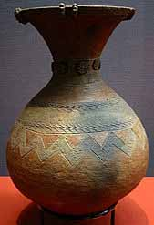
Yayoi jar 1st-3rd century, excavated in Kugahara, Ota, Tokyo
The earliest archaeological evidence of the Yayoi is found on northern Kyushu. Yayoi culture quickly spread to the main island of Honshu mixing with native Jomon culture. Yayoi pottery was simply decorated, and produced on a potter's wheel, as opposed to Jomon pottery, which was produced by hand. Yayoi craft specialists made bronze ceremonial bells, mirrors, and weapons. By the 1st century AD, Yayoi farmers began using iron agricultural tools and weapons. They wove cloth textiles, lived in permanent farming villages and constructed buildings of wood and stone. They also accumulated wealth through land ownership and the storage of grain. Yayoi chiefs in some parts of Kyushu appear to have sponsored, and politically manipulated, trade in bronze and other prestige objects. This was possible due to the introduction of an irrigated, wet-rice culture from the Yangtze estuary in southern China via the Ryukyu islands or Korean peninsula.Direct comparisons between Jomon and Yayoi skeletons show that the Jomon tended to be shorter, with relatively longer forearms and lower legs, more wide-set eyes, shorter and wider faces, and much more pronounced facial topography. They also have strikingly raised browridges, noses, and nose bridges. Yayoi people, on the other hand, averaged an inch or two taller, with close-set eyes, high and narrow faces, and flat browridges and noses. By the Kofun period, almost all skeletons excavated in Japan, except those of the Ainu and prehistoric Okinawans, resemble those of modern day Japanese. The modern Japanese are believed to be descendants of the immigrants mixed with the indigenous Jomon people, while the Ainu are believed to be relatively purer descendants of the Jomon people, with some intermingling of genes from Nivkhs and from Yayoi immigrants.
Archaeologists compared Yayoi remains found in Japan's Yamaguchi and Fukuoka prefectures with those from early Han Dynasty (202 BC-8) in China's coastal Jiangsu province, and found many similarities between the skulls and limbs of Yayoi people and the Jiangsu remains. Korean influence also existed. Yayoi pottery, burial mounds, and food preservation were discovered to be very similar to the pottery of southern Korea.
The rapid increase of four million people in Japan between the Jomon and Yayoi periods cannot be explained by migration alone. It is likely that rice cultivation and its subsequent deification allowed for mass population increase. There is archaeological evidence that there was an influx of farmers from the continent to Japan that absorbed or overwhelmed the native hunter-gatherer population.
Yayoi pottery show the influence of Jomon ceramics. Yayoi used chipped stone and bone tools, bracelets made from shells, and lacquer skills for vessels and lived in the same kind of pit-type or circular dwellings as that of the Jomon .
Early Chinese historians described Wa as a land of hundreds of scattered tribal communities, not the unified land with a 700-year tradition as laid out in the Nihon Shoki, which dates the foundation of the country at 660 BC. Archaeological evidences suggest that conflicts between settlements broke out in the period. Many excavated settlements were moated or built at the tops of hills. Headless buried human bones were discovered in Yoshinogari.
Third century Chinese sources reported that the Wa people lived on raw fish, vegetables, and rice served on bamboo and wooden trays, clapped their hands in worship (something still done in Shinto shrines today), and built earthen grave mounds. They also maintained vassal-master relations, collected taxes, had provincial granaries and markets, and observed mourning. Society was characterized by violent struggles.
According to the Wei Zhi, Himiko assumed the throne of Wa, as a spiritual leader, after the large civil war. Her younger brother carried out practical affairs of state, which included diplomatic relations with the court of the Chinese Kingdom of Wei. When asked of their origins by the Wei embassy, the people of Wa claimed to be descendants of the Grand Count Tàibó of Wu, a historic figure of the Wu Kingdom around the Yangtze Delta of China.
Yamataikoku
邪馬台国 was an ancient country in Wa (Japan) during the late Yayoi
period. The Sanguo Zhi first records Yamataikoku 邪馬臺國, or Yamaichikoku
邪馬壹國 as the domain of shaman Queen Himiko.
While historians disagree over the location of Yamatai, linguists
concur that the name was an early form of Japanese Yamato 大和.
Chinese classic texts began recording Yamatai (邪馬臺) in the 3rd century
AD, and Japanese classic texts began recording Yamato (大倭) around the
7th. After Japanese scribes changed Wa "Japan" to Wa 和 "harmony;
peace" in the mid 8th century AD, Yamatai became a historical term and
Yamato (大和) became the name for "Yamato Province" (in present-day Nara
Prefecture) and generally for "Japan". The Wei Zhi first mentions the
country Yamatai:
Going south by water for twenty days, one comes to the country of Toma. Then going toward the south, one arrives at the country of Yamadai, where a Queen holds her court. [This journey] takes ten days by water and one month by land. Among the officials there are the ikima and, next in rank, the mimasho. There are probably more than seventy thousands households.
The Wei Zhi also records that in 238 AD, Queen Himiko sent an envoy to the court of Wei emperor Cao Rui.
We confer upon you the title 'Queen of Wa Friendly to Wei', together with the decoration of the gold seal with purple ribbon … As a special gift, we bestow upon you three pieces of blue brocade with interwoven characters, five pieces of tapestry with delicate floral designs, fifty lengths of white silk, eight taels of gold, two swords five feet long, one hundred bronze mirrors, and fifty catties each of jade and of red beads ...
The Hou Han Shu (後漢書 "Book of Eastern Han", 432 AD) says the Wa kings lived in the country of Yamadai 邪馬台國.
The Wa dwell on mountainous islands southeast of Han [Korea] in the middle of the ocean, forming more than one hundred communities. From the time of the overthrow of Chao-hsien [northern Korea] by Emperor Wu (140-87 BC), nearly thirty of these communities have held intercourse with the Han court by envoys or scribes. Each community has its king, whose office is hereditary. The King of Great Wa resides in the country of Yamadai.
The Sui Shu (隋書 "Book of Sui", 636 AD ) records changing the capital's name from Yamadai Chinese Yemodui 邪摩堆 to Yamato 大和).
Wa-kuo is situated in the middle of the great ocean southeast of Paekche and Silla, three thousand li [1050 km] away by water and land. The people dwell on mountainous islands ... The capital is Yamato, known in the Wei history as Yamadai. The old records say that it is altogether twelve thousand li [4200 km] distant from the borders of Lo-lang and Tai-fang prefectures, and is situated east of K'uai-chi and close to Tan-erh.
These ancient place names refer to the Korean kingdoms of Baekje and Silla, and the Chinese commanderies at Lelang, Daifang, Kuaiji (present-day Zhejiang province), and Dan'er (present-day Hainan).
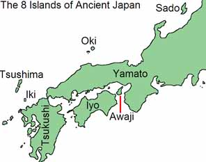
The Kojiki (古事記
"Records of Ancient Matters", 712 AD) is the oldest extant book in
Japanese. The "Birth of the Eight Islands" section phonetically
transcribes Yamato as what would be Standard Mandarin "Yemadeng" 夜麻登.
The Kojiki records the Shintoist creation myth that the god Izanagi
and the goddess Izanami gave birth to the "Eight Great Islands"
(Ōyashima (大八州) of Japan, the last of which was Yamato.
Next they gave birth to Great-Yamato-the-Luxuriant-Island-of-the-Dragon-Fly, another name for which is Heavenly-August-Sky-Luxuriant-Dragon-Fly-Lord-Youth. The name of "Land-of-the-Eight-Great-Islands" therefore originated in these eight islands having been born first.
This poetic name "Island of the Dragon-fly" is associated with legendary Emperor Jimmu.
The Nihon Shoki (日本書紀 "Chronicles of Japan" 720 AD) writes Japanese Yamato with the Chinese characters Yemadeng (耶麻騰). In this version of the Eight Great Islands myth, Yamato is born second instead of eighth.
Now when the time of birth arrived, first of all the island of Ahaji was reckoned as the placenta, and their minds took no pleasure in it. Therefore it received the name of Ahaji no Shima. Next there was produced the island of Oho-yamato no Toyo-aki-tsu-shima.
The translator notes literal meanings of Oho-yamato "Great Yamato" and Toyo-aki-tsu-shima "Rich-harvest-of-island".
Modern Japanese Yamato (大和) descends from Old Japanese Yamatö. There
were two vocalic types within the eight vowels of Nara period Old
Japanese (a, i, ï, u, e, ë, o, and ö, see
Jōdai Tokushu Kanazukai), which merged into the five Modern ones
(a, i, u, e, and o).
During the Kofun period when kanji were first used in Japan, Yamatö
was written with the ateji
倭 for Wa "Japan". During the Asuka period when Japanese place names
were standardized into two-character compounds, Yamato was changed to
大倭 with a 大 "big; great" prefix. Following the 757 AD graphic
substitution of 和 for 倭, it was written 大和 "great harmony," using the
Classical Chinese expression dáhè 大和
The early Japanese texts above give three transcriptions of Yamato:
夜麻登 (Kojiki), 耶麻騰 (Nihon Shoki), and 山跡 (Man'yōshū).
During the Wei period, dai was one of their most sacred words,
implying a religious-political sanctuary or the emperor's palace.
Two possible sites for the location of Yamataikoku and the identity
of Queen Himiko are in the Saga Prefecture and Makimuku
in Nara Prefecture. A debate originated from a puzzling account of the
itinerary from Korea to Yamatai in Wei-shu. The northern Kyushu theory
doubts the description of distance and the central Kinki theory the
direction. General consensus centers around either northern Kyūshū or
the Kinki region of central Honshū. As Himiko
died, a large mound was built, with a diameter of about 100 bu (1 bu =
1.45 m). Buried together were about 100 male and female servants. Some
scholars assume the Hashihaka kofun in Makimuku was the tomb
of Himiko.
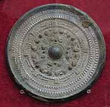
Bronze mirror excavated in Tsubai-otsukayama kofun, Yamashiro, Kyoto
In 1989, archeologists discovered a giant Yayoi-era complex at the Yoshinogari site in Saga Prefecture. They excavated 33 bronze mirrors from this site. The Wei Zhi records presenting "one hundred bronze mirrors" to Queen Himiko. Some scholars interpret Yoshinogari as evidence for the Kyūshū Theory, but many others support the Kinki Theory based on Yoshinogari clay vessels and the early development of Kofun.Yoshinogari dates to between the 3rd century BC and the 3rd century AD, however, recent absolute dating methods have shown that the earliest Yayoi component of Yoshinogari dates to before 400 BC. In the Middle Yayoi period a mounded burial was constructed on the northern end of the low hill. Five of six jar burials in the centre of the mounded burial contained cylindrical jade-like glass ornaments from China and bronze daggers from the Korean peninsula. The mounded burial is located in an area away from the majority of burials.
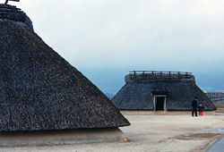
An area of the Middle Yayoi settlement seems to have been dedicated to the casting of bronze implements due to the number of moulds were found. In the same area, pottery that was common in coastal Korea during the same period was excavated there as well.
These youtubes are worth watching:
h424YayoiYoshinogari
Yoshinogari
Dragons and Mirrors
Jun 30, 2009 ... before leaving Okinawa for Ishigaki IslandIn reading a recent Japan Times in the Naha, Okinawa library it said Mr Kyoguku was appointed chief priest at the Yasukini shrine. He and his predecessor Mr Nambu, both members of the Kazoku peerage (abolished in 1947), had never served as priests before.
Mr Tsukube, who died in 1978, had refused to enshrine class-A war criminals. Mr Matsudaure, known for his right wing views on history, enshrined them.
In the book “The Essence of Shinto” by Motohisa Yamakage it is explained that before the Meiji restoration in 1868 there was never a national or state Shinto. Ko-Shinto, the early form previous to Buddhist and Taoist influence, was never organized. Each village had an organization for its festivals and each powerful shrine had an organization for its rituals, but still they acted as an independent entity. Therefore there was no Shinto organizational at a social or national level.
National Shinto was eliminated after WWII. Jinja honcho, or shrine Shinto remains today.
1. Ko Shinto
2. Shugo Shinto (Buddhist influence)
3. Yoshida Shinto (Taoist yin-yang)
4. Shirakawa Shinto (handed down to priest family of the Great Shrine (Taishu), such as the shrines at Ise, Kamo, Izumo, Usa, Mungaka etc).
5. Jinja honcho, or shrine Shinto
I visited the most venerated shrine
at Ise. Following a tradition begun in 690 AD the shrine buildings
are replaced every 20 years with exact imitations, according to ancient
techniques – no nails, only wooden dowels and interlocking joints. Upon
completion the enshrined goshintai (kami symbols) are transferred in
nocturnal ceremonies (Shikin Sengu) on the occasion of the Sengo No Gi
(transfer) ceremony.
In the past I found no justifiable meaning for Kami. Kami and Shinto
always has a label of animism, and someone looking for the truth would
immediately dismiss it.
Yesterday I encountered a group of Christians whose teacher claimed years of religious study in this subject, yet belittled Shinto as the worship of ancestors, not the true One God. That very day it became clear that there is a creator in Shinto who is acceptable to me, which I communicated to them.
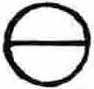
The sign of esak
The sign of Esak in the Se’moin tablet of Oahspe represents the cosmos, referring to it, like the New Testament and Greek philosophers, as the all "world", which includes the sun, moon, earth, stars, and all the skies. The same refers to the Hindu (Poit) word "Oh'm" (skies), and the Sanskrit "Jagat" to indicate 'beyond measure'. It is similar to the sign of 'corpor'. The whole universe, the All, is represented by a circle called Daikanu, 'universe of the Great Circle'
or 'Big Circle of the Universe'.
[dai=base, stand, pedestal, also age, dynasty, generation, eternal]
Like in animism, Shinto looks for the spirit within each living thing,
but also sees the origin and source of these 'many' in One Spirit (ichi-rei). Ancient (Koshinto) and modern
(Yamakage, Omoto) Shinto recognise there is One Spirit. Since ichirei is
the Oneness of the origin, source and spirit of the All it is called Daigenrai, the Great
Original Spirit, "original kami", "universal
organic body" or "creator kami of the universe".
Yamakage teaches the “Big Circle of the Universe” is a current of
whirling spirits springing out of Daigenrai. In this spiritual current,
individuals with identity are sparks of energy, which are also
“manifested as a vortex”. We are a
child-spirit (bunrei) of this “core Spirit”.
Wakemitama is the child-spirit (bunrei) of Daigenrai.
"Wake" means "reason, cause, ground"
"mi" means "divine"
"tama" means "spirit"
So wakemitama may mean "spirit of divine reason".
Naohinomitama is the original pure upright spirit, the Wakemitama of kami within you, the “Great Original Spirit” dwelling within us. The syllables Nao-hi-no-mi-tama represent nao (straight), hi (sun), tama (spirit). To nurture the bud of Wakemitama, the child spirit, is to become kami (highest spiritual essence or Shen in Chinese).
The Omoto co-founder Onisaburo Deguchi teaches
that :
"Kami is the spirit which pervades the entire universe, and man is the
focus of the workings of heaven and earth. When Kami and man become one,
infinite power will become manifest. Observing the true form of heaven
and earth, we see the substance of the true Kami. Seeing the unerring
activities of all things, we see the energy of the true Kami.
Recognizing the essential nature of living beings, we see the spirit of
the true Kami."
Deguchi teaches that "The Great Original Spirit is the primordial form
of the Great Original Deity of the Universe" [This is not necessarily
the Oahspe view, which maintains that Jehovih is first and last, alpha
and omega in biblical terms, eternal perfection in the midst of past
present and future].
Yamakage says he is given the name Amenominakanushi no kami, and is the central kami for everything, that is, the entire circle of the whole circle of the universe (Daikanu). He is the fountainhead kami, first in the divine lineage. Ceremony, prayer and dedications of food offerings express that we owe our life and sustaining life energy to this great source of nature (Kami) [nushi=master, god].
Deguchi teaches that :
This Supreme Deity [ie the Great Original Deity of the Universe] is
called the True God or the Master Deity of the Universe.
You shall love and respect this Great August Deity as your True Father
or True Mother, chanting the Godhead as Ame-no-mi-naka-nushi-no-oh-kami
(The Great Deity Master-of-the-August-Center-of-Heaven) or Oh-kunitokotachi-no-ohokami
(The Universe-Eternally-Standing-Great-Deity).
It appears that the exegesis of both Deguchi and Yamakage is derived from the Kojiki (Records Of Ancient Matters) and Nihon Shoki (Nihongi), which in turn have a Taoist influence. The Kojiki tells us the first god was Ame-no-mi-naka-nushi-no-kami:
Now when chaos had begun to condense, but force [movement] and form were not yet manifest, and there was nought named, nought done, who could know its shape? Nevertheless Heaven and Earth first parted, and the Three Deities [Ame-no-mi-naka-nushi-no-kami, Taka-mi-musu-bi-no-kami, Kami-musu-bi-no-kami] performed the commencement of creation; the Passive and Active Essences [Yin and Yang of Chinese philosophy] then developed, and the Two Spirits [creatrix and creator Izanami and Izanagi] became the ancestors of all things.
Ame-no-mi-naka-nushi-no-kami = Master-of-the August-Centre-of-Heaven
Taka-mi-musu-bi-no-kami
= High-August-Producing-Wondrous-Deity
Kami-musu-bi-no-kami
=
Divine-Producing-Wondrous-Deity
The Nihon Shoki says the first god was Kuni-toko-tachi no Mikoto:
Of old, Heaven and Earth were not yet separated, and the In and Yo not yet divided. They formed a chaotic mass like an egg which was of obscurely defined limits and contained germs.. Then further on it says:
The purer and clearer part was thinly drawn out, and formed Heaven, while the heavier and grosser element settled down and became Earth.
The finer element easily became a united body, but the consolidation of the heavy and gross element was accomplished with difficulty.
Heaven was therefore formed first, and Earth was established subsequently.
Thereafter divine beings were produced between them.
Hence it is said that when the world began to be created, the soil of which lands were composed floated about in a manner which might be compared to the floating of a fish sporting on the surface of the water.At this time a certain thing was produced between Heaven and Earth. It was in form like a reed-shoot. Now this became transformed into a God, and was called Kuni-toko-tachi no Mikoto. Next there was Kuni no sa-tsuchi no Mikoto, and next Toyo-kumu-nu no Mikoto, in all three deities.
Yamakage interprets:In one writing it is said: "When Heaven and Earth began, there were deities produced together, whose names were, first, Kuni-no-toko-tachi no Mikoto, and next Kuni no satsuchi no Mikoto." It is further stated: "The names of the gods which were produced in the Plain of High Heaven were Ama no mi-naka-nushi no Mikoto, next Taka-mi-musubi no Mikoto, next Kami-mi-musubi no Mikoto."
Amenominakanushi no kami becomes two –
Takamimusubi no kami, the positive – the source of all exterior manifestation, and
Kamimusubi no kami, negative action, the source of all inner, interior phenomena.
[The Japanese characters for “taka” means manifestation, and “kamu”
means subtle, deep, hidden, invisible]
In Yamakage Shinto these are like Yin and Yang of Daoism. When 'take'
(yang) and 'kamu' (yin) unite they form the essential core that is “Mi”
... “an original source point separates into two to create all things”
Ame-no-mi-nakanushi no kami is interpreted as “ame”=honorary title,
“mi”=honorific word, nakanushi=adjective and kami as the main word. But
Moto Yamakage suggests that we should interpret this “mi” as the main
word and all others as modifiers. Mi is the most sacred name expressing
the source and essence of life.
[c.f Ame-no-mi-naka-nushi-no-kami = Master-of-the
August-Centre-of-Heaven]
These three kami are called kami of the
three-fold whirl, or Amatsu uzu-uzushi yatsuagi no ameno
mi-oya no o-kami
The syllables in this word, Ama-tsu uzu-uzushi ya-tsuagi no ame-no
mi-oya no o-kami, mean
ama=heaven, tsu=of, uzu-uzushi=whirling, volute, spiral, ya=eight, in all directions, the whole universe
tsuagi=link, connect, tie, no=of mi-oya=parent, o-kami=great kami
putting this in order
heaven--of--whirling/volute/spiral--eight/in all directions/the whole universe--link/connect/tie--of--honorary title--of--parent--of--great kami
One wonders if this is the Japanese body, mind and spirit:
the universal heaven of the honorary great kami, whose body is the whirling spiral universe – omnidirectional, manifest in the eight directions and is tied to, or mirrors its parent.
Yamakage is a trusted Ko-Shinto family serving successive emperors. The 75th successor, Yamakage Kazuhira (1751-1810) used the hereditary esoteric knowledge and added Yoshida Shinto, Suika Shinto and other schools to ancient Ko-Shinto to create the Yamakage Shinto. Motohisa Yamakage is the 79th successor.
Yonaguni
Jul 6, 2009 ... upon returning to IshigakiAs Yonaguni came into view from the boat its distinct shape captivated me. From a view travelling west towards the island, the northern cliffs appear comparatively small to the high cliffs on the south side, that overlook the ocean. These high cliffs were the ones I had to somehow get down, to snorkel the ruins alone ...
Sitting at Japan's westernmost point, with Taiwan across the sea to the west and down below the annual marlin festival is happening, I reflect on my experience. Tomorrow I return to Ishigaki Island.
My Yonaguni encounter included viewing the underwater ruins in the
submersible, diving, and snorkelling them. I also inspected the ancient
graveyard, which does have burial sites similar to the style of the
underwater structure, and the Sanninudai structure that has similar
stepped and "right-angled" structure above sea level to that found at
the underwater ruins. Mr Kihachiro
Aratake, who discovered the ruins, was contacted by Dr Kimura
while I was with him in Okinawa, so I knew I would have some chance of
seeing the ruins even when I did not have a diving licence. I got picked
up at the ferry terminal and next day was in the submersible with a
large host of Japanese tourists, and Aratake was at the helm speaking
through earphones in Japanese, all the way to the ruins. Though clangy
and crude, the submersible does give a good close-up view of the ruins.
When we got back I decided to take the gamble to scuba dive. Having had
problems with my ears I was concerned I wouldn’t pass the preliminaries.
Later that afternoon I was told I could make the dive tomorrow.
Layout of the Yonuguni "pyramid" features
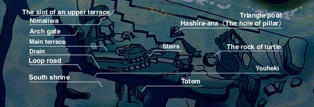
The next day I did the shallow dive ok, and in the afternoon I was joined by a group of divers. Aratake didn’t speak a lot of English, but with the help of the others I explained to him I had contacted Dr Kimura through the internet and explained that he was interested in my website about a sunken continent, and he knew I was the person who was with Dr Kimura in Okinawa a couple of weeks ago. The Arch Gate
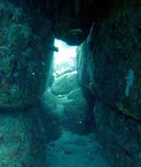
I did the ten meter dive for another 30 minutes which was ok, then the boat went on to the ruins. I jumped off the back of the boat with my guide, followed by the rest. We swam through the "Arch Gate" (see photo, left) in single file. Dr Kimura had publically said "There are stone fences surrounding the loop road. The entrance to the loop road seems to be an arch-gate the height of which is 1.7 m and the width is 1 m." It is at the west side of the ruins. It is said that the two roundish big stones on both sides are artificially stacked. The narrow tunnel-shaped passage fits only one person at a time. The arch shaped gate compares to castles (Gusuku) of the Ryukyu Dynasty age. The "castle" gate opens up to the twin pillars (Nimai Iwa).
The Twin Pillars
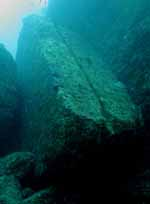
I noticed they were not quite parallel. The two huge rectangular rocks, height of about 7m and a thickness of 1m, weigh more than 1000kg and stand vertically close to each other. One gets the impression that they were the result of a splitting. One would think that this is easily geologically proven. But the rocks are thought to have accidentally fallen into place. Otherwise they must have intetionally been carefully cut and placed there.
A "loop road" which Dr Kimura belieives is man-made, continues to a "main terrace" from Nimaiiwa, and it surrounds the pyramid structure. The widest part is 15 m and the typical part is 6 m wide. The depth is 27m and it has "drain" at the both sides of the road. Strangely, there are no fallen stones on the road.
Main terrace
We then entered
the main terrace (see photo, left) in the deep
blue water. This was the place where one certainly feels that you
were in an underwater man-made city. This is at 100m off of Arakawabana,
at a depth of 20m. A slot of about 30 cm wide and about 50 cm deep is cut
in a straight line on both sides of the stepped "main terrace”. The end of
this slot connects with a drain.
The turtle rock
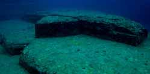
We moved on to the upper terrace and the "turtle rock" (see photo, right). This appears to be a relief of a giant turtle carved out of the rock at the eastern side of the structure. Japanese school children are familiar with the Okinawan fable of Urashima Taro, the gentle fisherman who saved a young turtle from bullies and released it into the ocean, only to be visited by a 'giant turtle' who thanked him then gave him a ride beneath the sea to a magical kingdom. This fable is thought to be a folk memory of the turtle rock. Dr. Kimura says the fable is related to this kind of turtle. Turtles may grow to about 1.5 m long.
We then inspected a drain or channel, the "cemetery" and the "cross", and spent a while inside a large round hole, being watched by schools of google-eyed fish along the way. I cant say for sure whether it was the "hole of the pillar". There are many things which cannot be regarded as having been made from the corrosion of a natural waves, like the "pool" structure depressed in a triangle, called "triangle pool". The holes in this huge structure occur only here. The pieces of stone that should have fallen into the hole seem to have been removed by someone. There are two holes that are almost the same size, with a ditch between them. One theory says the two holes were holes for pillars.
Dr Kimura said about the "triangle pool": The shape of the depression seems to be a triangle. It resembles a 'Kaa' that is an artificial spring for drinking water at Gusuku Castle of ancient Okinawa. The gusuku means a castle including a temple in ancient Okinawa.
Before you knew it the 30 minutes was finished. I was not satisfied..
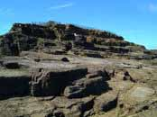
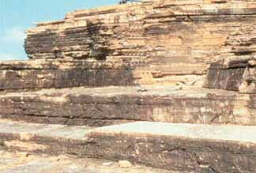
Next day I walked to the Sanninudai structure (see photos both sides). San-ninu Dai, a few kilometers from Iseki Point, where the Yonaguni "pyramid" is submerged, is a cliff arranged like a stairway. It forms a natural observation tower from which to view the strange rock formation. The typical rock is a rock reef. It had suffered a landslide and was off limits, but no one was around, so I stepped over the barbed wire. It was easy to get sceptical about the "ruins" because Sanninudai has natural steps that lead from near the top of the cliff down into the water, with the same, sometimes "right-angled" corners and steps as at Iseki Point. Sceptics who insist the submarine ruins are a natural thing see them as the same as the form of this San-ninu Dai, which sinks into the sea. Professor Kimura indicates that there is a trace of them being man made. They have the same stratum. San-ninu Dai is said to have characters etched in the cliff (see bottom left photo). James Hurtak, an American linguist, said that they may be Phoenician characters. Phoenicians had a custom to etch characters in the high place of a cliff. Hurtak was the author of "The Keys of Enoch", which I believe is a fraud.
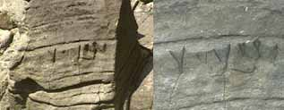
I walked further on up the road for another hour or two to the much higher cliffs that overlook the ruins. It was hard to look over the edge due to a barricade of prickly pandanus trees. I broke my way through and eventually found a way with long grass which made it possible to descend down a virtually vertical drop of the high cliff face, terrifying to even look down from. But the long grass was deeply rooted, and held me firmly during my descent. As I got closer to the bottom things got easier, and I reacher the boulders at the water's edge.I had to snorkel around the cliff face to get nearer to the ruins, as waves crashed against it. Having been gashed against the rocks in Hawai once before, I took great caution. Much was only knee deep, with deep breaks in between. My confidence increased and I went further out to sea until I reached the end, where there was the 24 meter drop to the bottom, and many terraces, though I could not identify any places. The fish alone were spectacular to watch. I was totally captivated as I followed the edge of the terrace wall to the end. Then I realised I was being swept along by a current out to sea, and panicked a little. I knew of dangerous strong currents that lurked at this point.
But I didn’t need to, as an inner voice was saying, as after some time I managed to gain on it and swim back to a quieter, safer area (with no flippers), where I continued snorkelling, but could not find where the scuba dive took place.
Before I left the rocky shoreline I could see a line of round holes in a rock (up to about one inch diameter) similar to some of the evidence that was presented as man made. There is a shell fish that makes them, even in a row. Going up the cliff was easier, save for almost getting lost. There was only one way back I knew of. I was glad to be alive when I reached the top. The next morning I thought how, beyond my fears, there was a compelling, reassuring urge to make me go on, getting me to take care ...
The sun is going down, the waves crash majestically below as the last full colours light up the landscape. The sun goes down; I mark the spot with a stone and go down to the festival, being delighted to arrive when the traditional dances began. That night, I marked where the north was, and in the morning where the sun rose. The sun rises north of east and sets north of west.
Re: Yonaguni
Jul 8, 2009--- In oahspe@yahoogroups.com, susan martinez
> > paul > thanks so much for sharing your wonderful adventures with us, adventures in kosmon, to be sure. one feels there is an even stronger "current" keeping you safe, but please take care anyway.
Thanks Poosh,
Yes, thats the current that sustains me.
> if it ever happens that you get some insight on why the yonaguni story took 8 years to hit the US, please let us know.
I used to think Robert Scoch was slowing the momentum towards
recognition of the Yonaguni monument as a major shift in cultural and
historical understanding, but now I agree with his caution. Theres
more to find out before I can be convinced myself, now, even though,
like West, Scoch, Hancock etc., its still the find I want to believe
in. I know Dr Kimura and the Japanese scientific community are ahead
of the rest in confirming it as being partially man-made, though I'm
yet to be able to translate his reaserch which gives the clinching
scientific evidence for this.
This could be why it took 8 years to hit the US.
I watched a DVD Aratake had, maybe produced by the discovery channel.
Pretty interesting. Lots of useful detail was discussed.
--- In oahspe@yahoogroups.com, susan martinez
> intuitively, i believe they are! after all, oahspe has hinted that these signs will show up in kosmon.
Heres some extra info that support your belief:
While I was visiting the "peoples library", which turned out to be a folk museum, in the town where Mr Aratake has his diving shop, I noticed the book "Diving Survey Report" by Dr Kimura. This could be the same as "Discovery of Submarine pyramids off Yonaguni in Japan" (2001), mentioned earlier. It had some English pages in it, so I quickly took some notes as follows:
Near the "underwater ruins" were found underwater caves with
stalactites and stalagmites in them. This process can take place
only on land.
[This proves the area was once above the sea, but doesnt prove the
"underwater ruins" are man-made.]
Lao-Tsi wrote of a mysterious cluster of islands in his "Book of
Resshi".
He recorded the Okinawa story of Urashima
Taro, who visited a castle beneath the sea on the back of a
turtle god.
[This youtube
gives a romaticised animation.]
On the Northern part of the island there is an oral memory that
"long, long ago an island sank". On the southwest part is a
traditional belief, or religion (Niraikanai),
and in that tradition a story is told of an ancient continent that
sank beneath the sea.
On Yonaguni island, there is a fearful legend that all the people on
the island died suddenly long ago. Ikema
Nae, Yonaguni Ethnic Reference Library Director (the kind woman
in the "peoples library") said
about the "Legend
of Fire and Rain":
Then, long ago, the sky over this island became red suddenly, a bad
man appeared and began to attack people. After that, the rain
of fire and the tsunami
rolled on every place of the island and the island
sank. Moreover, when people in the island were crying
out and were offering a prayer to God, it is said that they heard
God's voice,“ You will be saved if you run into a hole
called Donadaabu”. The legend is that people who escaped at Donadaabu
were saved. This has a parallel with Atlantis and Mu continents that
sink, and this legend a very strange phenomenon in Okinawa that
doesn’t have a volcano.
Utsuro Bune Ancient Japanese UFO
sighting
This compelling UFO sighting has a strong parallel to the Okinawan
story of Urashima Taro.
According to this youtube link called Utsuro
Bune Ancient Japanese UFO sighting, the legend of Utsuro Bune is
about a mysterious alien woman who arrived from the bottom of the
Pacific in a round craft like vessel. In Japanese writings was a
description of a bowl-like ship that arrived on a beach called
Hiratono Hama. Professor Kazuo Tanaka re-opened the investigation in
1997, asking “Did an encounter of the third kind occur on a Japanese
beach in 1803-11? In the early 1800’s Japan suddenly saw a bounty of
Utsuro Bune drawings all by different artist in different parts of the
country each one telling the exact same story. Japan was completely
closed to the outside world until 1857.
Here is a website
with good photos.
The Iwase Bunko Depository library has a
record known as the Hyouryuukishuu translated to the ‘Tales of
Castaways’. The document was printed during the late Edo period
which modern fans of the paranormal understand this vessel to be the
‘Edo-period UFO’. The evidence recorded tells the tales of Japanese
mariners who find themselves in unfamiliar nations after becoming
lost in the ocean, as well as castaway visitors washed shorewards on
the seashores of Japan. To the Japanese public, who during this
period had existed living in a extended time of national seclusion,
these unusual stories must have appeared extremely sensational.
Together with these tales is the report of a damaged ship with a
extremely mystifying form. According to the record, this large craft
washed shorewards at Harashagahama. The specifications of the craft,
specified as 3 meters tall by 5 meters in width, had been built from
red sandalwood and metal and was equipped with openings of glass or
crystal. The mystifying characters of an unfamiliar writing system
were discovered etched inside the craft. Aboard the wandering vessel
was a delicately decorated young lady with pale face and red
eyebrows and locks. She was assessed to be amid Eighteen and Twenty
years of age. Considering that she uttered an unfamiliar language,
those that chanced upon her were incapable of determining from where
she came. In her arms, she grasped a basic timber case that looked
to be of great importance to her, as she would permit nobody to
approach it.
The Submarine Ruins off Yonaguni
In 1986, what looked like archeological artifacts were found lying
in the seabed off Yonaguni Island. They have since then been under
investigation by the Submarine Research Group of the University of
the Ryukyus headed by Professor Masaaki Kimura. Despite controversy
over the ruins' authenticity, Professor Kimura maintains in his
latest book, Diving Survey Report for
Submarine Ruins Off Yonaguni, Japan, that there are
many indications of human involvement, such as:
Traces of marks that show that human beings
worked the stone. There are holes made by wedge-like tools called
kusabi in many locations.
Around the outside of the loop road there is a row of neatly stacked
rocks as a stone wall, each rock about twice the size of a person,
in a straight line.
There are traces carved along the roadway that humans conducted some
form of repairs.
The structure is continuous from under the water to land, and
evidence of the use of fire is present.
Stone tools are among the artifacts found under water and on land.
Stone tablets with carving that appears to be letters or symbols,
such as what we know as the plus mark "+" and a "v" shape were
retrieved from under water.
From the waters nearby, stone tools have been retrieved. Two are for
known purposes that we can recognize, the majority are not.
At the bottom of the sea, a relief carving of an animal figure was
discovered on a huge stone.
In two locations, tools that were conceivably used by people who
lived there, such as tools struck from stone have turned up.
Dr Kimura has said: "We recovered several pieces of stone tools.
Typical ones are adzes. They are not polished. Their age is
estimated as up to 10 thousand years old."
Inscribed into San'ninu-dai, there is a large relief carving of a
bird.
Suppose that the castle-like main structure in the ruins is
acknowledged as a submerged artifact, what significance would that
recognition have? Human history, the history of civilization, would
probably have to be rewritten to account for the existence of stone
constructions of that large a scale in East Asia 10,000 years ago.
Professor Kimura speculates that the ruins might have been part of a
greater Pacific civilization like that of the legendary Continent of
Mu although he is skeptical about the Continent's existence itself
from a geological standpoint.
Nirai-kanai and the Holy Women of Kudaka
Island
Okinawan awe of the sea is thought to arouse
their belief of a paradise called the “Niraikanai”.
It is said that many blessings come to earth from this paradise.
Festivals which welcome a god of Niraikanai are carried out in
Okinawan villages in summer when it becomes June in the lunar
calendar. In the Yaeyama Islands they hold a rice festival to pray
for the fertility of grain. Many “Miroku Gods” appear. The Miroku
God is welcomed as a bringer of happiness.
In the Haterumajima island, there is a myth of a paradise called the
“Paipathiroma“
very far in the south from the island. The “Pai” means “South”, the
“Pathiroma” means the “Hateruma”. In short, it becomes the
“Hateruma”. This “Paipathiroma” is an island of which people had
visions. In fact, there are some records that some villagers left
this island for the paradise “Paipathiroma” because they couldn't
endure the severe tax.
From the Japan
Times July 17, 2000:
When the gods arrived by boat at the Okinawan islands during the
fourth and ninth months of the Chinese calendar, they first set foot
on the shores of Ishiki Beach, say residents of Kudaka Island. Far
from the shore, beyond the far-reaching shallows, white waves break
in what looks like a ring around the island. Beyond lies the deep
blue expanse of the sea, and farther out is where the sun rises.
Hana Nishime, 75, points out to the sea. "Nira-hara," she says. In
other parts of Okinawa, they call it "Nirai-kanai," the faraway
utopia where gods live and all things begin.
Like other "utaki," sacred places throughout Okinawa where the gods
are thought to alight, no "torii," (shrine gate) is thought
necessary to mark either Ishiki Beach or the nearby clearing where
prayers are offered. These places still preserve beliefs and rites
that were once held by the ancient Japanese. The most holy are
strictly off-limits for men. The only human sounds are the low,
incessant chanting of a "yuta" (spiritual counselor claiming the
ability to sense the will of the spirits) offering prayers on behalf
of a client.
Speak to a yuta and you soon learn to see the gods in the trees, in
the kitchen stove, in ancestors and in the foam on the waves. They
have no distinction between Shinto and Buddhism. And serving the
gods, many of whom are demanding and jealous, is a dangerous
undertaking. Yutas fall ill if they make light of what they sense.
They undergo a period of intense personal suffering and are released
only after they recognize their calling and declare themselves. A
history of disdain and criticism by intellectuals and acts
prohibited the practice of yutas, dating from 1673, 1732, 1831 and
1900. In 1938, as part of efforts by the government to encourage
cultural uniformity throughout Japan, there was a reward for anybody
who reported a yuta to authorities. Yutas stand in front of a grave
and can tell the living whether the dead are pleased or sad. People
believe that the world that can't be seen is closely intertwined
with the world of the living.
But while animism remains deeply rooted in Okinawan culture many of
the larger religious rites and institutions are on the verge of
extinction. The roots of the organization of holy
women, or "noro" reach long before they were
organized into an official network of seers during the Ryukyu era
(1429-1879). The noro system, a hierarchical network headed by the
king's sisters, was established in 15th century to pray for safe
passage of ships. Powerful enough to force the resignation of kings,
noro once attended battles, guided kings and presided over
festivities during peace.
In Yonaguni many festivals are still carried out 46 times per year. Life on this island is deeply and closely connected with faith. August in the lunar calendar is the beginning of the year for festivals, and next June is the end of that year. Some festivals are dedicated to a God of water, in some they wish for children's health, or they refuse to eat meat for 25 days from October in the lunar calendar. They pray to their Holy lands, and Gods of mythology, who are protected by women priestesses called Tsukasa. On the day of the festival, villagers welcome God from the Holy land with a Tsukasa who serves God, and after praying to God for a fruitful coming year, they send God off again.
Additional Discoveries and Excerpts
Various Okinawan Scripts
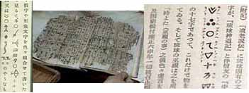
The “Old Ryukyu” is one of the works by Iha Fuyu. (1876~1947). Mr. Iha, who had come home to the unjust treatment of the Okinawan people under Satsuma Clan rule, and the Meiji Government, learnt the “Omoro Soshi” in order to know the history, language and folklore of Okinawa. “Old Ryukyu” is about the song of a detached island, including the history of Okinawa and language and the “Omoro”.The Omoro Soshi is a compilation of 1,144 ancient poems and songs from Okinawa and the Amami Islands, collected into 22 volumes. The poetry extends from the 12th century, but most if not all are believed to derive from far earlier traditions, as a result of their language, style, and content. The poems contained in the compilation vary, but follow a general pattern of celebrating famous heroes of the past, from poets and warriors to kings and voyagers. A few are love poems. They range from two verses to forty, some making extensive use of rhyme and couplet structures.
Soshi means a written work. Iha Fuyu traced 'Omoro' to words associated with oracles and divine songs.
The omoro are said to be the predecessors in Ryukyuan culture to music, dance, and literature; they incorporate all three of these. Only after centuries of development, and influence from China, Japan, and various South Seas cultures, did distinct traditions of music, dance, and literature develop. Outside of what might be reconstructed from the Omoro Soshi, no record survives of earlier forms of Ryukyuan music and dance.
Though reflective of ancient folk traditions, the poetry also reflects the intricate links the Ryukyus enjoyed with other nearby states. Many of the Ryukyuan islands, largely culturally and linguistically isolated, are mentioned, along with various locations in Japan, China, Southeast Asia, and the South Seas.
The Omoro Soshi was first compiled in 1532, and again in 1613 and 1623, as part of attempts by the royal government to help secure their cultural or spiritual legitimacy and power. The first compilation came just after the reign of Sho Shin, who consolidated, centralized, and reformed the government, and the second came just after Ryukyu became a direct vassal to Satsuma. Only a small handful of scholars have studied the documents in any significant depth. Thorough analysis has been able to yield elements of a foundation of understanding of ancient governance, social structures, and folk religion.
Kikaijima Island is located on the east side of Amami oshima. It is in the cultural sphere of the Rykyu Kingdom, and there are many common points in the culture with Okinawa. The old culture was not lost here. A book called “Tokisoushi”, used by the shaman called Yuta in fortune-telling, had a calendar and an outlook about the universe. But in the 18th century Yuta was oppressed, and this Soushi was burnt. Iha-Fyu started a legend that “there was a script in Okinawa such as the “Ryukyuushidouki” before the current scripts of China and Japan. According to a record by Arai Hakuseki and a scholar in China, the history of the script goes back to the Gen period of the 14th century.
The “Ryukyu Shintoki” or Ryukyu Sinto Diary is a record from which we can know traditional religion and faith before the Shimazu Clan’s rule in Ryukyu. Taichushonin, who brought the Jodo shu (Pure Land Buddhism) to Ryukyu wrote it during his stay of three years from 1603 to 1606. It is the oldest book 'written about Ryukyu Shinto. It consists of five volumes and discusses creation, various aspects of a God appearance, the Tametomo legend, the Meikarusi legend and the augur of seven companies of the avatar faith.
Irosetsuden is a collection of legends written as an outside volume of the “Kyuyou”, the authentic history of Ryukyu. Iro is a talk spoken and handed down by the Iro. There are legends covering a wide range from Kunigami in the north to Yonaguni in the south. The contents cover the Gusuku, the origin of the Ontake, the tradition, various religious service, and a patrimony similar to the legends in China and Japan. Many legends were handed down.
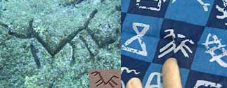
In addition to the characters on the rock face at San-ninu Dai, the (not very understandable) Okinawa prefecture website mentions another feature, found underwater near a cave close to the Yonaguni monument, that looks more like an image (left side of photo on right). The character is engraved on a big reef rock in the sea bed 20 meters below the surface of the sea about 1 kilometer away from the cave called the “palace of light” in the western part of the Yonaguni remains. The design looks like a dog, with legs and body and a head on the left side. When a ray of the sun shines through a hole in the “Palace of light” submarine cav, the ray is flickered by wave motion, and it drifts around there as if it were an aurora.This image is also described in terms of a writing character due to its similarity with an ancient Okinawan writing character called Kaida (right side of photo on right). Kaida Characters are a picture writing used in Yonaguni passed on from long ago. It is said that in the past, officers used it for illiterate islanders for calculating quantity for taxation purposes, which then spilled over into daily life. Kaida Characters were used before elementary schools were established in the Meiji era.
Rosetta Stone of Okinawa (left), its other side (below, right), and other Okinawa tablets (above, right)
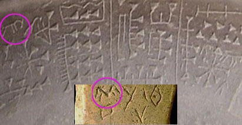
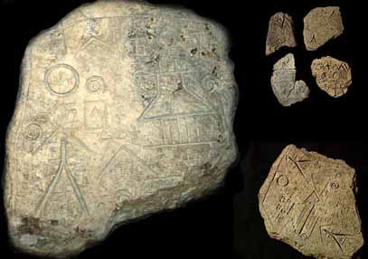
There is a similarity of these finds to a clay tablet (right, bottom inset) found in the Gulf of Cambay, India, which appeared like a Harrapan-type civilisation but dated back to 7500 BC. The earliest discovered human civilisations in the subcontinent are the sites of the Harrapan and Indus Valley communities, which date back to 2500 BC.The Fuente Magna bowl found near the ancient Tiahuanacu ruins, Bolivia has what looks like Sumerian writing on it (right), and also some characters of proto-Sumerian (circled). These are similar to the Yonaguni character, but mirrored due to changes in the order of reading.
Indian clay tablet compared to the Sumerian style writing on the Fuente Magna bowl of Tiahuanacu
These characters can also be found on tablets found on Okinawa, the largest of which is called the Rosetta stone of Okinawa (left). There is no known culture associated with it. There are 12 slate palettes of this kind, found in Kadena-cho and Hokutan-cho now.
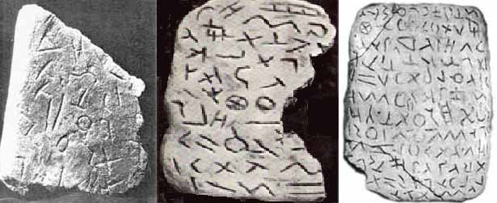
The so-called Glozel tablets, found in France have characters similar to the characters from Yonaguni and Okinawa. The three tablets (right) differ.The Yonaguni/Okinawa characters appear to be older than 7500 BC if one looks at their development. The possible relation between the Yonaguni/Okinawa writing, the Indian clay tablet, the finds at Peru, and the Phoenician leads to the conclusion that this is evidence pointing to a common cultural origin.
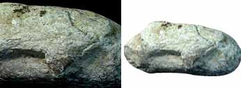
The Ushiishi artefact (left) was found of six meters below the surface of the sea near remains. It looks like a figure of the cow.
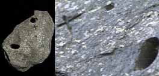
There is a submarine artefact called the "slate palette", from the sea of Yonaguni, which is incised with a character (left). There is some evidence that it was shaped by being scraped away evenly and cut into at rights. A sign of the cross was made and a V-line incised on it. It is made of a grainy shale about 25 centimeters square and 2 centimeters thick, and on it there are two holes. This slate palette was examined by 11 researchers such as archaeologists and biologists. According to that report, the line and the holes can't be thought of as being traced by a living thing such as a seashell. Most of the researchers agree that it should be regarded as an artefact because the trace appears to be manmade.
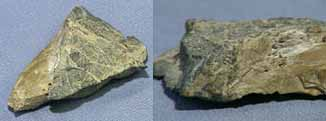
Dr Kimura found traces of human evidence on August 1996 at the submarine limestone cave in Beto. A chipped stone tool (right) was found at the end of the hall at the back of the limestone cave. Professor Kato Shinpei, an archaeologist, said the wedged stone tool and the chopping tool must have been man made.
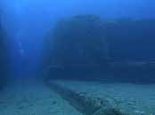
The feature on the left is named Ishibutai, (English: the Stage), and was found under water near the land based statue called Tachigami (or Tachigami-iwa), some kilometers east along the coast from Iseki point, where the monument is located. In fact, this feature is the second most famous one from Yonaguni. The Okinawa website mentions the feature at the right edge of the right part of the V-shaped backside as looking like a Moai statue, as known from Easter Island. Tachigamiiwa is a ruins point in the Pacific Ocean. It was the place of faith for people in ancient times.
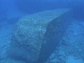
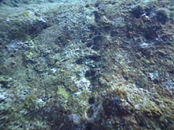
This feature (left) called the Sekihi Iwa, or protection wall, is also located close to the Tachigami-iwa. It is a huge, regularly shaped, rectangular block with a length of more than 10m. On the bottom some 40-50 cm from the block runs a straight line of some 70 holes extending towards the Ishibutai. It was thought that the holes were the trace of sea urchins. But the expert of masonry Mr. Kotaro Maza concluded that "the trace of slotwedge under water" marks (describing the line of holes between Ishibutai and Sekihi Iwa) are wedge holes made in order to cut the rocks. Picture 3 shows how this could be done (he also concluded it could also be done using wooden tools). The possibility that the slotwedge construction method was also used for the construction of the monument was resolved by investigations from 1998 to 1999. The (not very understandable) Okinawan website also mentions finding this construction method at several places on the islands (Hikawa Beach at the southern coast of Yonaguni, etc).At the end of 2002 underwater features were discoverd near the island of Penghu, in the Taiwan Straights. The first picture shows what looks like a stone wall. It lies at a depth of about 25 to 30 meters, and is said to be one of several examples, some of them stretching about 100 meters, and being about 1 meter high and 0.5 meter thick and to be constructed from round stones. The possibility of the remains being artificial is considerably higher if one realizes that Taiwan is very close to Yonaguni, whose underwater ruins are certainly artificial and lie at about the same depth, i.e. were above water at the same geological age.
Tom Moya Reef in the Kerama Islands has a point called the “Centre Circle” This is one stone at the center with some huge stones surrounding the stone. The height of stone at the center is 3 meters and is about 3 meters in diameter next to the hexagonal pole. The surrounding stones have various forms but the height of them is the same. The space between stones is arranged in order extends radially like a passage. Going down the road there is another center circle. The composition of the base stone and the stone circle on top is different indicating that this was carried here from somewhere artificially.
There is a rock which was composed in a huge plain where a castle wall rises up on the west side of Tom Moya Reef. In the center of that, a straight road of 2 meters wide continues. In some places, there are traces that the stairs were built up, and it is a different aspect completely from the seabed like the surrounding nature.
In the Ryukyu Islands, 300 Gusukus are distributed. The word Gusuku, in Okinawa, often means a castle, a Holy land or a tomb. Generally, it is built on a hill, and many of them have some stone curbs and castle walls. Gusuku began to be built about 13th century. After about the middle of the 15th century, it is said that these “Gusuku” group were completed. There is what appears to be a “Gusuku” which sinks in the seabed of Okinawa's main island.
There is a 20-30 meter long rock at the seabed of 30 meters deep at a distance of about 300 meters from Fudennsaki in the southwest of Awakunijima Island. In 1989, a local diver found 7 holes which is open to the surface of the rock. Every hole looks like a perfect circle, and it resembles the form of a well. The hole is about 3 meters in diameter, which is dug to 4 to 5 meters. In the side, some slots run vertically. On Awkunijima Island, which doesn't have much rain, they had used a stone jar to collect rain water. This indicates that the holes are of the time when it was on land.
Near the rock which has 7 holes at a distance of about 100 meters from the Fudensaki there is a rock like a castle wall which is about 20 meters high, rises from the seabed. The surface has a trace like accumulated cutting stones.
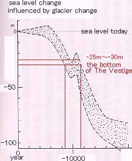
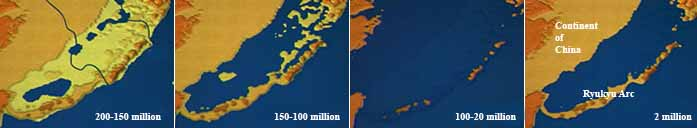
The Ryukyu Arc was a part of the continent about 2 million years ago. The Ryukyu Islands repeated violent crustal change whenever an ice age came around, which repeated the unheaval and sinking. We call the continent that once existed from Kyushu to the Chinese Continent the “Ryukyu Koriku”. The Ryukyu Koriku” began to sink under the sea some 20 thousand years ago.The present form of the Ryukyu Islands resulted from repeated large and intense diastrophism. A submarine limestone cave was discovered on the sea bed of Hedomisaki (Hedo), Kumejima Island, at the northern edge of Okinawa. The entrance is at 10 meters deep, and the limestone cave has beautiful limestone formations on the upper and lower sides, then the cave continues in the back to no less than 40 meters deep, where it is covered with sand thought to be from the diastrophism. This would mean that during the last ice age, 10 thousand years ago, the water surface was more than 100 meters lower than at present to allow these limestone formations to develop. More amazingly, some stonewares were discovered within the limestone cave, indicating that this stoneware had exsited about 9 thousand to 7 thousand years ago. Then a submarine limestone cave was discovered near Hikawa, Yonaguni, also.
Ishigaki, Iriomote and Taketomi Jima
I made a friend who ran the Moondra cafe in Ishigaki city where I could get a vegan meal. He spoke good English and gave me advice on how I could do the "challenging cross-island trail, which cuts through Iriomote Island’s interior to Ohara in the south". I had no guide book, but he said it could be done. I took the ferry to Iriomote, and soon I was walking the beaches until I reached the bridge across the wide Urauchi-gawa (river) where the boats take you to the waterfalls and swimming holes, and for the few, the trailhead of the cross-island trail. They wouldn’t allow me to do it alone. It was illegal I found out. After trying to lie my way through, they rang the police who, to my surprise allowed me to do it if I contacted them when I got through. There had been many missing persons, even recently, lost forever on this dangerous trail.It was raining while the tourist boat ploughed through the muddy water by the mangroves. We got dropped off at the end to be picked up later, all but me . It was a beautiful easy long walk to the waterfall area. The scene opened up to deep rock pools and lakes of pure clear water surrounded by lush delicate rainforest. The walking got a lot harder when I journeyed beyond this delightful area upon reaching the trailhead. The path was so narrow it was barely visible, and led thru impenetrable jungle along slippery muddy drops where you could hardly get a footing. It rained every few minutes, and it was not as nice as the touristy path. There was nowhere even to sit, so after some hours of this, just before dark I was relieved to find a clearing, and camped for the night beside the river. The going had been extremely slow, and I had little food, though I was carrying my heavy backpack. Next morning the going was no easier. This time I had to carry a branch with which to brush away huge cobwebs that barred my way. Occasionally I didn’t see one, and a very big spider could be crawling on me. Didn’t know if they were dangerous or not, but since they were encountered literally every five feet for the next few kilometres, I got used to them. The 20 km or so trail was divided into markers, and I knew that to battle and sweat for hours to get to where I was took about 2-3 hours per km. I'd hardly gotten anywhere yet. But eventually it lead higher up into the gorge, beyond the constant rain, spiders and slippery treacherous trail, to more drier, less rainforesty wider track, and my pace tripled.
I came to a grand opening where the trail met and crossed the river. It was a pure blue lake, where I went for a delightful swim. Crossing the river I followed it further into the mountains, and found a spot to sleep on the sand that night. The next day was far simpler, and made it through to Ohara, enjoying the grand vistas along the way down the dirt road. I caught the ferry to Taketomi Jima and slept on the beach there in peace reflecting on my ordeal.
Taketomi turned out more interesting than I thought, instilled with a proud ancestral heritage that it promoted and still practices. Here the culture unique to the Ryukyu Islands was alive, and the social order observed the festivals and initiations that held the community together throughout the centuries.
Returning to ishigaki, I now went to the other side of the island to discover beautiful wide beaches (Yonehara beach) with not so many people. There was also a beautiful palm forest not far away on the mountain slopes. If one ventured into the water perhaps half a kilometre offshore with snorkelling gear, you would come to the edge where the bottom drops off into the spectacular deep blue. Along the edge are wonderfully coloured hard corals, almost as good as that in the Red Sea and the Great Barrier Reef. Besides what I saw at Yonaguni (which didn’t have coral) this was the only time when I snorkelled live coral with tropical fish (though other islands had smaller, fewer tropical fish). After a few days I moved on, pausing at the bright blue magnificent Kabira bay.
The three-fold whirl
Jul 15, 2009 ... after returning to Ishigaki from Iriomote and Taketomi Jima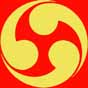
Dr Kimura mentioned a symbol like the yin and yang, but three-fold. I cant remember why he mentioned it, but I have seen this symbol in many places, including Dewa Sanzan, as a symbol to represent the three holy pilgrimage mountains there, and at the Shuri castle, as a family crest symbol used on lacquarware.A tomoe is a Japanese swirl shape that resembles a comma or a magatama. It is a common design element in Japanese family emblems (kamon) and in triplicate whorls known as mitsu tomoe. One mitsu tomoe variant, the Hidari Gomon, is the traditional symbol of Okinawa. The tomoe is similar in design to the Korean sam-taegeuk, Tibetan Gankyil or Chinese yin/yang symbols. The Basque lauburu and some forms of the Celtic spiral triskele resemble small groups of tomoe.
The mitsudomoe is created from three joined tomoe. Some view the mitsudomoe as representative of the threefold division (Man, Earth, & Sky) at the heart of the Shinto religion. Originally, it was associated with the Shinto war deity Hachiman, and through that was adopted by the samurai as their traditional symbol. The mitsudomoe has been used in Japanese family crests (kamon) and corporate logos, and is a traditional symbol of Okinawa. Jeju-do's flag has a mitsudomoe on it, as did the Ryukyu Kingdom's flags.
This youtube says the decorative element on the ceramic roof tile end plate is a Tomoe water pattern and the three elements swirling about indicate swirling water, a whirlpool or an eddy, and thats a very old image in asia, symbolic of water and common in archetecture because in those days there was a belief that water symbols could act as a protection against fire. This doesnt explain its symmetrical, geometrical pattern, nor its whirlpool interpretation. If that were the case a 'bucket of water' symbol would be more effective.
A triskelion is a symbol consisting of three interlocked spirals, or three bent human legs, or any similar symbol with three protrusions and a threefold rotational symmetry. A triskelion is the symbol of Brittany, the Isle of Man and Sicily The triskelion symbol appears on Mycenaean vessels and on coinage in Lycia. It appears as a heraldic emblem on warriors' shields depicted on Greek pottery. Celtic influences in Anatolia, epitomized by the Gauls who invaded and settled Galatia, are noted by those who theorize a Celtic origin for the triskelion.
The Celtic symbol of three conjoined spirals may have had triple significance similar to the imagery that lies behind the triskelion. The triple spiral motif is a Neolithic symbol in Western Europe. It is carved into the rock of a stone lozenge near the main entrance of the prehistoric Newgrange monument in Ireland. A variant of the symbol is also found, carved into the wall in the inner chamber of the passage tomb.
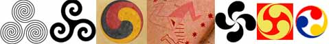
Symbols of triplicity from left to right:
Neolithic triple spiral.
Celtic Spiral triskele and Trinitarian symbol.
Tibetan Buddhist gankyil
Estonian Triskelion (12th or 13th century)
Basque lauburu
Japanese mitsudomoe
Flag of the Ryukyu Islands (1875-1879).
The lauburu or Basque cross has four
comma-shaped heads similar to the Japanese tomoe. Lau buru means
"four heads", "four ends" or "four summits" in Basque.
The Basque intellectual Imanol Mujica said the heads signify spirit,
life, consciousness, and form. It was found in old stelas. Around
the end of the 16th century, the round swastika appears abundantly
as a Basque decorative element, in wooden chests or tombs, perhaps
as another form of the cross. Many Basque homes and shops display
the symbol over the doorway as a sort of talisman.
Some say that what produces the distinctive round heads is the wake
created by the rotation of the cross, representing the elements and
universe of energy.
The Gankyil
is a symbol and ritual tool in Tibetan Buddhism. It is symbolic of
primordial energy, the energetic signature of the trikaya, and
represents the central unity and indivisibility of all the doctrinal
trinities of Dzogchen. The gankyil is the inner wheel of the
Dharmacakra of the Vajrayana Ashtamangala path of Buddhism.
The energetic potency (wisdom or shakti) of the Snow Lion is
expressed in the attribute of the gankyil that the Snow Lion keeps
in eternal play.
The Snow Lion
is a celestial animal of Tibet. It resides in the East and
represents unconditional cheerfulness, a mind free of doubt, clear
and precise. It has a beauty and dignity resulting from a body and
mind that are synchronized. The Snow Lion has a youthful, vibrant
energy of goodness and a natural sense of delight. It is one of the
Four Dignities.
Gankyil (Sanskrit: ananda-chakra, pronounced "ganshee"), is formed
from the words dga' ("joy, bliss") and 'khyil ("swirling, circle,
coil, a place where water flows"). Thus, it may be rendered into
English as "bliss-whirling" or "wheel of joy". The Gankyil
represents the interdependence of all the groups of three in the
Dzogchen teaching. Dzogchen, Supercompleteness, the highest path to
enlightenment, is a central teaching of the Nyingma school. The
Madhyamaka teachings on emptiness are fundamental to Dzogchen
practices.
{kind=link}
Bhagavan
Kalacakra
Dzogchen, the Great Perfection, is the
self-perfected indivisibility of the primordial
state, the natural condition of the mind, so it has a
non-dual symbol. The structure of Dzogchen teachings is always in
groups of three – such as base, path and fruit – but although they are
divided in this way their indivisibility is emphasised by symbols such
as the ga’kyil. In the center of the summit of Mt Meru, there is the
inner sixteen petal lotus of the Bhagavan Kalacakra, which constitutes
the bliss (ananda) cakra of the cosmic body.The gakyil is depicted in a similar form to the ancient Chinese yin-yang symbol, but its swirling central hub is usually composed of either three or four sections. The wheel of joy is commonly depicted at the central hub of the dharmachakra, where its three or four swirls may represent the Three Jewels and victory over the three poisons, or the Four Noble Truths and the four directions. In the Dzogchen tradition the three swirls of the gakyil primarily symbolize the trinity of the base, path, and fruit.
The gankyil is the energetic signature of the Trikaya, realised through the transmutation of the Three poisons (greed, hatred, and delusion) and therefore in the Bhavachakra the Gankyil is an aniconic depiction of the snake, boar and fowl. The Gankyil is the inner wheel of the Vajrayana Dharmacakra.
The Gankyil is symbolic of the doctrine of:
Trikaya:
Nirmanakaya, sambhogakaya and dharmakaya
The interdependence of the Three Vajras: body, voice and mind.
The Triple Gem:
The Buddha, Dharma and Sangha. These are called the Mirror of the
Dharma and help attain the true "mind like a mirror".
The triunic continuua of 'sound, light and rays' [heart,
'mind'-wheel; throat, 'voice'-wheel; head, 'body'-wheel.]
Energetic emergence: infinite and formless, thoughtform of "the eye
of the mind", or the transpersonal imaginal manifestation,
manifestation of the energy of the individual, as apparently an
'external' world.
The three-fold symbol mentioned by Dr Kimura might also symbolise the previously mentioned kami [Amenominakanushi, Takamimusubi and Kamimusubi] of the three-fold whirl, or Amatsu uzu-uzushi yatsuagi no ameno mi-oya no o-kami (also called "Daigenrai", the Great Original Spirit). These are three in one, like the triangle. They are known as "jisshin" (real Kami) since they are the true reality. They are not personifications.
Oahspe tells us science can discover the chemistry of life, but life
is unfathomable. Shinto tells us you have been manifested in this
world as one spirit, the spiritual light of which dwells in the core
of our "spirit-soul".
Musubi means to unite or to bind together. In the "Chronicles of
Japan" (Nihonshoki) the meaning of each written character of this word
is "generate-spirit", and in the "Kojki" the meaning is
"generate-nestle-sun". Two kami of the three-fold whirl, Takamimusubi
no kami and Kamimusubi no kami have names ending with "musubi". This
indicates the deep spiritual meaning of the word - transformation,
sudden birth, as in "koke musa", literally "moss-grow", which
describes the sudden emergence of moss on rock surface, something
maybe akin to the appearance of life in semu.
Hi (as "bi" in musubi) means "fire" and "spirit", the source of life.
[A phonetic rule changes "hi" to "bi"]
Therefore musubi signifies the proliferation of life and spirit.
Musubi (or unification) of man and woman also entails the procreation
of life and "spirit-soul" (rei-kon), and so children are called musuko
(boy) and musume (girl). Musubi can also apply to an individual
"spirit-soul" as being the work a person does to generate, transform
and develop Naohinomitama (the innermost pure spirit) for growth and
strength of spirit.
So the two kami of musuhi [musubi] of the three-fold whirl combine to
generate the essential core that is "Mi",
the source and essence of life.
Rei-kon (spirit-soul) has eight different senses (meanings).
1) Mi, the most sacred name.
2) Hi/Bi, the character means "fire", "sun", "spirit" etc., something
essential for sustaining and energising life. Musu-bi (hi=bi) means
creation and development (seisei kaiku, birth and growth,
transformation and development) of life.
3) Chi/Ki/Ke is the spirit-soul of the nature kami, which is highly
sacred and equal to "mi" and "hi", as can be seen in the words
Kukunchi no kami (tree kami), and kagutsuchi no kami (fire kami).
[Qigong
involves the circulation of qi (chi) energy. In Japan, the word qi
is written ki, and is
related to the practice of Rei-ki.]
4) Tama is the spirit-soul dwelling in humans or animals.
5) Mono is a title for the spirit-soul of anything that is not pure
spirit, as in monoke, bad vibration released from wicked thought or
spirit.
6) Kami is the hidden spirit-soul, unseen and has a sacred and awe
inspiring effect.
7) Mikoto is the ancient name for kami. The characters mean
"life-reverence".
[Koto=words and language, worldly events. Mikoto
is someone who receives words or messages about events (koto) from
the divine (mi). The title mikoto (mikkyo in esoteric Buddhism) is
used for kami who have the status and character of a human being and
who acts in this world. The character for kami represents the
lighting flash coming down from heaven (sky), so it is more correct
that kami should only refer to heavenly kami (tenjin/tenshin). So it
is an aberration to use the kami title for a human being acting in
this world. Mikado=emperor.]
8) Nushi is a principle, major spirit-soul which has much of the
sacred power of "mi", "hi" and "chi".
The highest unseen realm is Takamanohara (Takamagahara), literally
"High Heaven's Plain" but often translated as the "High Plain of
Heaven". It is the dwelling place of the Kami. It is believed to be
connected to the Earth by the bridge Ama-no uki-hashi (the "Floating
Bridge of Heaven"). In Shinto worship, the kami are invited to leave
Takama-ga-hara and enter a shrine or some other purified place.
Unlike the Buddhist belief that humans can reach Nirvana, Shinto
believes that humans and ancestral spirits cannot enter Takamanohara
immediately. It is the abode of kami (=etheria) and requires first the
attainment of kami.
The spirit of Mi, the divine virgin spirit,
the stainless mirror, the source
and essence of life, born of Takamimusubi no kami and Kamimusubi no
kami (the creative musubi kami), pours forth into the natural world
via hi/bi, chi or spirit, fire and energetic essence, and gives life
to "the world after death", the "eternal land" or "land of root"
(tokoyonokuni or nenokuni), "world of roots, source of life"
(ni-rai-kanai), the "hidden world" (kaku riyo), and the "underworld",
the "land of the dead" (Yominokuni, Hades).
The amatsu kami reside in Takamanohara, and Kunitsu kami are active
closer to earth. In the Great Purification words (oharai no kotoba)
its is said when the heavenly prayer words are chanted (amatsu
norito), amatsu kami will listen after pushing the heavenly rock door
open, cutting through [smote] the eight-fold thick cloud in heaven.
Kunitsu kami will listen after clearing the mist at the high ridges
and mountains.
In Shinto Amaterasu omikami is looked upon as the principle kami.
She is the sun-kami and connected with the legendary founder of the
imperial family.
Recent academic theory says peoples coming into Japan from the
northern route took Amenominakanushi no kami to be supreme, while
those from the southern route took Amaterasu omikami to be supreme.
The mythologies of the Kojiki and Nihonshoki are a compromise or
fusion of these two cultures. Since the sun is taken as the source of
all life, and the most visible reflection of the creator kami, and the
emperors family who unified ancient Japan worshipped Amaterasu
omikami, she became the principle kami.
Inseparability from individuality?
Sun Jul 19, 2009 ... just before leaving Ishigaki and returning to OkinawaShinto is not nature worship, like some forms of pantheism. It worships the source of nature which is called kami. Through our finite perception and standpoint, nature appears divided in the diversity of the phenomenal universe.
So like in animism, Shinto looks for the spirit within each living thing, but also sees its origin and source in One Spirit (ichi-rei). Since ichirei is the Oneness of the origin, source and spirit of the All it is called Daigenrai, (the Great Original Spirit), and "creator kami of the universe".
Within every human being there resides naohinomitama, which literally translated from the three written characters means "straight" (nao), "fire or sun" (hi), and "tama" (spirit).
"Hino-de" is sunrise
"Hino-iri" is sunset
"Hino-ke" are sparks
"Hino-te" is a tongue of fire
Naohinomitama is the "original, pure and upright spirit", the "spark
of divine light" the "offspring of kami" emerging out of the "creator
kami of the universe". It has great wisdom.
This spirit has the same quality as kami, but on an infinitesimally
small scale.
Yamakage says " this wakemitama (or bunrei), the child spirit of kami,
like the single metaphysical entity of a monad, is akin to the bud of
a plant. It is the task of humans to nurture that bud so as to
eventually become kami [pure, original spirit].
A song (goshinka) in Yamakage says:
"From the creating spirit of heaven and earth I have received the soul by which I am who I am".
Yamakage says "Naohinomitama is wakemitama of Daigenrai". It also says "all forms of life are a child-spirit of the original kami (daigenrai). This child-spirit, or core-spirit, is Naohinomitama. But Oahspe teaches that only the human spirit can rise to the "spirit of divine reason" (if this is what Wakemitama is).
There was a difference between the Yakamage Shinto master and a
European philosopher about the "divided" (ie., the individual) soul.
The European said man's spirit is part of the energy of the whole, but
has its own distinct identity. The master said "if man's soul is part
of the universal spirit, but has a distinct identity, the divided
spirit can not have the same qualities as the original spirit, and
moreover, original spirit cannot be divided. He gave a parallel of a
tree and a seed. There is no sudden transformation of the seed into a
tree, yet there is always a continuity between the two distinct forms.
In this way a divided soul is not distinct from the original soul.
Citing Hindu philosophy the European explained that Brahman or Atman
does not have the same capacity for growth as attributed to them by
Shinto.
The master explained, Man is not another self [aspect] of Deity. There
is a continuity between the divided [individual] spirit and the
original spirit.
So if the core-spirit is the same as the One original spirit, why does a child become a Man, an egg become a bird and a seed become a tree? What is this One spirit out of whose blueprint all things become what they are, yet identical and common to all?
Any answers?
Here's an old one, similar to Gnosticism, and Greek mythology.
Yamakage explains: "The first chapter of the Kojiki contains the origin of (Japanese) history, still shrouded in mythology. It mentions the coming into existence of three creator kami who created and transformed themselves to bring forth various kami, all of whom are child-spirits of these three creators. These also transformed and generated their own child-spirits. These further transformed and generated all the phenomena of the universe. From this chain of procreation it is inferred that humans, animals, plants and all natural matter are in essence offspring of the great original kami of the universe, or, everything ultimately comes into existence as a child-spirit of the original kami. The meaning of ceremony, prayer offerings and dedications of food expresses the awareness that "we owe our life and sustaining energy to the great source of nature."
Whether we get our spirit in turn from a chain of being [which is unclear], or directly from Jehovih, as Oahspe teaches, we should still also practice similar prayers and dedications to the great source of nature, Jehovih.
Daigenrai is the three-fold whirl. Its symbol is a circle called
Daikanu, the seen and unseen universe of the Great Circle, or Big
Circle of the Universe.
Within the circle are three spiral arms joined at the center, so they
are three in one, like the triangle. Amenominakanushi no kami is One,
who becomes Two, comprising three in one.
Jehovih is at once the All, represented by a circle, yet is creator
represented as one of three in the triangle, which symbolises His
inseparability from individuality [divisibility] and substance, as two
sides of one coin.
In Kasmir
Saivism, Cit (consciousness) is the One reality. Matter is not
separated from consciousness, but rather identical to it. There is
no gap between God and the world. The world is not an illusion (as
in Advaita
Vedanta), rather the perception of duality is the illusion.
Since many Nyingma teachings reduce 'voidness' to 'absence' and
therefore 'nihilism', identifying absolute truth with such an
absence would not account for the manifestation of Awakening, or
even for the manifestation of phenomena. Therefore they explain voidness as lying in the absence of
mental constructs, that is inherent in the essence of mind in which
space and awareness are indivisible, and define absolute truth as
consisting in the indivisibility
of emptiness and appearances, or of
emptiness and awareness.
According to Madhyamika
all phenomena are empty of "self nature"
or "essence", meaning that they have no intrinsic, independent
reality apart from the causes and conditions from which they arise.
Our ultimate nature is said to
be pure, all-encompassing, primordial, naturally occurring timeless
awareness. This "intrinsic awareness" has no form of its own and yet
is capable of perceiving, experiencing, reflecting, or expressing
all form. It does so without being affected by those forms in any
ultimate, permanent way. The analogy given by Dzogchen
masters is that one's nature is like a
mirror which reflects with complete openness but is not affected
by the reflections, or like a crystal ball that takes
on the colour of the material on which it is placed without itself
being changed. It is an "effulgence",
an "all-pervading fullness" a "space that is aware". When an
individual is able to maintain the dzogchen state continually, he no
longer experiences dukkha, or feelings of discontent, tension and
anxiety in everyday life.
Duality, the cloud of illusion
Jul 25, 2009 ... Naze, on the island of Amami Oshima, a few days before the eclipse The inseparability of the creator from individuality [divisibility]
and substance, which I mentioned in my last message, has a parallel in
Koshinto.
Oahspe speaks of the external world that can be in conflict with our
internal being. Yamakage classifies this external world into four
souls (shin-kon, soul-four). Heres some words that convey the meaning
of Shi/Shin/Jin (Shen in Chinese).
dair-shi-rei (great-kami-spirit)
shin-rei (kami-spirit)
shin-rei-kai (kami-spirit-world)
rei-kai (spirit-world)
shin-kai (kami-world)
shin-to (kami-way)
The Koshinto philosophy of ichirei shikon (one spirit four souls)
has more in common with the pagan concept of the four elements than
Oahspe, but has this useful clarification. Naohinomitama is the
child-spirit "coming out of daigenrai" (the great original spirit).
Our body-mind, or what in Yamakage would be the four souls:
gross (earth)
magical (air)
happy (fire)
harmony (water)
surrounds the spark of Jehovih within us, our soul (naohinomitama),
and "are what daigenrai has created, made grown, transformed and
developed" (seisei kaiku, the
creation process). Our body-mind (external world-world of impressions)
can become "disturbed and unfocused", in conflict with naohinomitama
["also called 'true self' (shinga)"], the "kami inside", and we
"cannot proceed upward on the path of renovating, maintaining,
generating (or creating) and cultivating - the path that leads to
self-realisation as kami". There becomes a duality,
a separation of pure and impure (true-self and ego-self) and we can't
hear the voice of this true self, which becomes shrouded by a cloud
of illusion.
These can be united ("become one body like the front and back of a
coin" - "kami and human spiritually become One") through silent
listening and spiritual practices, lending to the saying "the
ancestors and I are one", as "one body".
Harking back to the tree and seed analogy and the individual/unity paradox, which I mentioned in my last message, I quote:
"I am a child-spirit (wakemitama) coming out of the same one spirit (ichirei) changing and moving toward kami.
I am one scene of an endless, continuous life history in the eternal universe.
My ancestors who bore me are also the children of kami, and they also received naohinomitama from daigenrai as I did.
I have inherited my body, culture, and knowledge.
Seisei kaiku is representd within 'I'.
I live in the flow of this eternity.
Everything is 'I' and the source of life is One.
All the manifest universe is interconnected; part of the web of life.
Any phenomena manifested in me is meaningful and nurtures me, and moves me towards kami, and so every manifestation in the cosmos is a manifestation of me".
Japanese Creation Legends
In Japanese Shinto, Kotoamatsukami (lit: distinguishing heavenly kami) is the collective name for the first powers which came into existence at the time of the creation of the universe. They were born in Takamagahara, the world of Heaven at the time of the creation, as Amenominakanushi (Central master), Takamimusubi (High creation), Kamimusubi (Divine creation), and a bit later Umashiashikabihikoji (Energy) and Amenotokotachi (Heaven). These forces then became gods and goddesses, the tenzai shoshin (heavenly kami) - Ame no minakanushi no kami; Takami-musubi no ôkami; Kamimusubi no ôkami; Umashiashikabihikoji no kami; Ame no Tokotachi no kami; Kuni no Tokotachi no kami; Toyokumono no kami; Uhijini no mikoto; Suhijini no kami; Tsunokuhi no kami; Ikukuhi no kami; Ôtonoji no kami; Ôtonobe no kami; Omodaru no kami; Kashikone no kami; Izanagi no kami; Izanami no kami; and Amaterasu ômikami Amenominakanushi was the first kami to come into being in the
Plain of Heaven as a "solitary kami" (hitorigami). He was
acknowledged as one of the zoka sanshin ("three kami of creation")
and one of the five kotoamatsukami
("separate heavenly deities"). He is found at the very beginning of
the Kojiki. Amenominakanushi was chief kami of the seven major stars
of the constellation Ursa Major.
As a result of this influence, Amenominakanushi was made a central
deity at the Daikyoin in the early Meiji period.
Kunitokotachi is one of the two gods born from "something like a
reed that arose from the soil" when the earth was chaotic.
Kunitokotachi is described as a hitorigami and genderless in Kojiki
while as a male god in Nihonshoki. Yoshida Kanetomo, the founder of
the Yoshida Shinto sect, identified Kunitokotachi with
Amenominakanushi and regarded him as the primordial god of the
Universe.
Hitorigami are kami which came into being alone, as opposed to those
which came into being as male-female pairs. According to the Kojiki,
this group included the "three deities of creation" and the
"separate heavenly kami." They are described as hiding themselves
away once they achieved awareness. Most are said to have been
created from the "male essence" and, as such, are male in gender.
Two hitorigami, Kunitokotachi and Amenominakanushi, summoned the
divine pair of Izanagi and Izanami into being and charged them with
creating the first land in the swirling salt-water that existed
below the heavens.
Hierarchy of Kami, the Tenzai Shoshin (heavenly kami)
Sequence of Kami Explanation 1. Amenominakanushi Central master. Central Kami for everything, ie., the entire circle of the universe. 2. Takamimusuhi High creation. Positive action - the source of all exterior manifestation. 3. Kamimusuhi Divine creation. Negative action - the source of all inner, interior phenomena. The above are the three Deities of Creation 4. Umashiashikabihikoji Energy. The generating energy of heaven which descends to earth 5. Amenotokotachi Heaven. Place for expressions in heaven All the above are Kotoamatsukami 6. Kunitokotachi Place for expressions on earth. Born from "something like a reed that arose from the soil". 7. Toyokumonu The generating energy of earth which ascends to heaven 8. Uijini 9. Suijini 10. Tsunugui 11. Ikugui These 8 Kami (8-15) are involved in completion of earthly lives 12. Outonoji 13. Outonobe 14. Omodaru 15. Ayakashikone 16. Izanagi These two Kami are earthly creators in contrast to the heavenly creators. 17. Izanami They are children given birth by Kami of heaven and who have become parents on earth. They are the first descendants from heaven. 18. Amaterasu This Kami is a manifestation of Amenominakanushi
The first gods Kunitokotachi and Amenominakanushi summoned two
divine beings into existence, the male Izanagi and the female
Izanami, and charged them with creating the first land. To help them
do this, Izanagi and Izanami were given a heavenly spear decorated
with jewels. The two deities then went to the bridge between heaven
and earth, Ame-no-ukihashi ("floating bridge of heaven"), and
churned the sea below with the spear. When drops of salty water fell
from the spear, Onogoroshima ("self-forming island") was created.
They descended from the bridge of heaven and made their home on the
island.
Eventually they wished to be mated, so they built a pillar called
Ame-no-mihashira ("pillar of heaven"; the mi- is an honorific
prefix) and around it they built a palace. Izanagi and Izanami
circled the pillar in opposite directions and, when they met on the
other side, Izanami spoke first in greeting. Izanagi didn't think
that this was the proper thing to do, but they mated anyhow. They
had two children, Hiruko ("leech-child") and Awashima ("faint
island"), but they were born deformed and are not considered
deities.
They put the children into a boat and set them out to sea, then
petitioned the other gods for an answer as to what they did wrong.
They were told that the male deity should have spoken first in
greeting during the marriage ceremony. So Izanagi and Izanami went
around the pillar again, this time Izanagi speaking first when they
meet, and their marriage was finally successful.
From their union were born the oyashima, or the "great eight
islands" of the Japanese chain:
Awaji Iyo (later Shikoku) Ogi
Tsukusi (later Kyushu) Iki Tsushima
Sado Yamato (later Honshu)
Note that Hokkaido, Chishima and Okinawa were not part of Japan in
ancient times.
They bore six more islands and many deities. Izanami died giving
birth to the child Kagu-Tsuchi (incarnation of fire) or Ho-Masubi
(causer of fire). She was then buried on Mt. Hiba, at the border of
the old provinces of Izumo and Hoki, near modern-day Yasugi of
Shimane Prefecture. So angry was Izanagi at the death of his wife
that he killed the newborn child, thereby creating dozens of
deities.
Izanagi is a deity born of the seven divine generations in
Japanese mythology and Shintoism, and is referred to as roughly
translated in the Kojiki as "male-who-invites" or Izanagi-no-mikoto.
He and his spouse Izanami bore many islands, deities and forefathers
of Japan. Izanami-no-Mikoto (meaning "she who invites") is a goddess
of both creation and death, as well as the former wife of the god
Izanagi-no-Mikoto. She is also referred to as Izanami-no-kami.
When Izanami died in childbirth, Izanagi tried (but failed) to
retrieve her from Yomi (the underworld). In the cleansing rite after
his return, he begot Amaterasu (the sun goddess) from his left eye,
Tsukuyomi (the moon god) from his right eye and Susanoo (tempest or
storm god) from his nose.
The story of Izanagi and Izanami has close parallels to the Greek
myth of Orpheus and Eurydice, but it also has a major difference.
Izanagi-no-Mikoto lamented the death of Izanami-no-Mikoto and
undertook a journey to Yomi ("the shadowy land of the dead").
Quickly, he searched for Izanami-no-Mikoto and found her. At first,
Izanagi-no-Mikoto could not see her at all for the shadows hid her
appearance well. Nevertheless, he asked her to return with him.
Izanami-no-Mikoto spat out at him, informing Izanagi-no-Mikoto that
he was too late. She had already eaten the food of the underworld
and was now one with the land of the dead. She could no longer
return to the living.
Izanagi-no-Mikoto was shocked at this news but he refused to give in
to her wishes of being left to the dark embrace of Yomi. While
Izanami-no-Mikoto was sleeping, he took the comb that bound his long
hair and set it alight as a torch. Under the sudden burst of light,
he saw the horrid form of the once beautiful and graceful
Izanami-no-Mikoto. She was now a rotting form of flesh with maggots
and foul creatures running over her ravaged body.
Crying out loud, Izanagi-no-Mikoto could no longer control his fear
and started to run, intending to return to the living and abandon
his death-ridden wife. Izanami-no-Mikoto woke up shrieking and
indignant and chased after him. Wild shikome (foul women) also
hunted for the frightened Izanagi-no-Mikoto, instructed by
Izanami-no-Mikoto to bring him back.
Izanagi-no-Mikoto burst out of the entrance and quickly pushed a
boulder in the mouth of the entrance of Yomi. Izanami-no-Mikoto
screamed from behind this impenetrable barricade and told
Izanagi-no-Mikoto that if he left her she would destroy 1,000
residents of the living every day. He furiously replied he would
give life to 1,500.
In Japanese mythology, Susano’o is the brother of Amaterasu, the goddess of the sun, and of Tsukuyomi, the god of the moon. The oldest sources for Susano’o myths are the ca. 680 CE Kojiki and ca. 720 CE Nihon Shoki. They tell of a long-standing rivalry between Susano’o and his sister. When he was to leave Heaven by orders of Izanagi, he went to bid his sister goodbye. Amaterasu was suspicious, but when Susano’o proposed a challenge to prove his sincerity, she accepted. Each of them took an object of the other's and from it birthed gods and goddesses. Amaterasu birthed three women from Susano’o's sword while he birthed five men from her necklace. Claiming the gods were hers because they were born of her necklace, and the goddesses were his, he decided that he has won the challenge, as his item produced women. The two were content for a time, but Susano’o, the Storm God, became restless and went on a rampage destroying his sister's rice fields, hurled a flayed pony at her loom, and killed one of her attendants in a fit of rage. Amaterasu, who was in fury and grief, hid inside the Ama-no-Iwato ("heavenly rock cave"), thus effectively hiding the sun for a long period of time.
Misogi harae and the mystery of musubi
Jul 25, 2009Motohisa Yamakage says the word yominokuni (hades) has a strong sense of Asian origin. Its literal meaning is the "underworld of the dead". The visit to hades by Izanagi no mikoto seems to be influenced by Chinese Taoism. In ancient China we find deep underground tombs, and in Okinawa there are cave burial customs that suggest a conciousness of a world below.
This could be why Dr Kimura was making a connection of the Qin emperor's underground tomb, and his possible cultural migration idea from China to Okinawa with the origin of the underwater ruins. I have since found out that the picture in Dr Kimura' book is indeed of the Qin emperor.
Izanagi no kami and Izanami no kami, the two earthly creators, in contrast to the heavenly creators, are children given birth by kami of heaven, and who have become parents on earth. They are the first descendants from heaven. Yamakage Shinto says Amaterasu omikami is a manifestation of Amenominakanushi no kami. Another version tells of Izanagi no Mikoto doing misogi (purification), and throwing away garments, each representing a return to his true self. Then through musubi he bore Amaterasu, Tsukuyomi, and Susanoo.
The story of "misogi harae" is found in the Kojiki.
Izanagi no mikoto grieved for the passing of his wife Izanami so much
that he visited Hades (yomi no kuni). She was so badly transformed
that he cried out in disgust. She chased him, but he escaped and then
practiced misogi at Odo of Tachibana at Himuka in Tsukushi (an unknown
ancient place at the mouth of a river and ocean), in order to cleanse
himself from the impurities of Hades. Then many kami were born.
Misogi is "the ritual at the heart of Shinto ceremony", carried out
primarily in summer, but also at the mid autumn harvest festival and
mid-winter (solstice) prayer festival. It took place when Saigu (or
Itsuki no miya) is opened at Ise, or when Saiin is opened at the Kamo
Shrine.
Saigu is the pure shrine at Ise.
Izanagi and Izanami shared intercourse of Mito (mito no maguwai is
coition) which resulted in the birth of many kami offspring. [The
characters mean mi(zu)=water and to=door, mito is therefore the
merging of two waters]. Since many kami were born after the misogi
practiced by Izanagi no mikoto, this suggests intercourse or rebirth.
The story contains a hidden meaning. When Izanagi no mikoto arrived at
the place for misigi he threw away various things he carried and wore.
Each time, a kami was born.
1) He nailed his walking stick to the ground, symbolising the
completion of a long journey (the stick symbolises the journey of
life, and nailing it symbolises the journey's conclusion).
2) He removed his sash and Michi no naga chiha no kami was born. The
removal of his sash symbolises the sense of contented awareness.
Michi=road, naga=long
3) He removed his mo (pants cover) and Tokiokashi no kami was born
(the kami who puts down time). The removal of his mo symbolises the
lifting of the world of illusion. (Mo=relativity of time).
4) He removed his upper cloth and Wazurainoushi no kami was born. The
removal of his upper cloth symbolises the release of the center of
worries.
5) He removed his fundoshi (loin cloth) and Michimata no kami (the
kami of the forked road) was born. The removal of his fundoshi
symbolises the freedom from doubt and vacillation when encountering
life's forked roads. The groin represents the forked road.
6) He removed his crown and Akiguinoushi no kami (the kami who is
tired of biting) was born. With the removal of his crown he declared
he is tired of biting into power, status and priveleges.
7) He removed his armbands and Okizakaru no kami (the kami who is
deeply attached and steps aside) was born. The removal of his armbands
symbolises his disowning of those who clung, his vassels and
hangers-on. With this he graduated from illusion which is the deeper
meaning of misogi.
8) He rinsed his body with water and Yasomagatsuhi no kami (the kami
who causes disasters) was born. He is an unclean kami; His emergence
symbolises the explusion of dirt.
9) He removed his ... and Kannaabi no kami (the kami for divine
correction) was born.
10) When he cleansed his lower body at the bottom, middle and surface
of the water .... were born. These kami and princes are related to the
power of cleansing.
In this way Izanagi no mikoto returned to his true self. Afterwards he underwent a spiritual cleansing, and through the mystery of musubi he bore three noble children.
1) Amaterasu omikami the sun
2) Tsukuyomi no mikoto, the moon
3) Susanoo no mikoto, the wind
The characters of the text literally mean "three pillars (columns)
of noble children. The Japanses word for "pillar" is sometimes a
synonym for kami.
Since many kami were born after the misogi practiced by Izanagi no
mikoto, this suggests intercourse or rebirth. According to the
dictionary musu means to tie, to knot, to produce, form, make.
Musubi means to "unite", or "bind together". Musubi signifies the
proliferation of life and spirit. Musubi of man and woman also entails
the procreation of life and "spirit-soul" (rei-kon). In this case
musubi means "generative". It is related to two of the creator
"musubi" kami of the three-fold whirl.
1) Amaterasu omikami represents the spiritual creativity and means,
the realisation of justice and fairness of heart, and opening of
oneself to becoming spiritually clean, bright, right and honest.
2) Tsukuyomi no mikoto represents the mental and psychological
creativity.
3) Susanoo no mikoto represents the physical act of creation (a
healthy body which can act woth courage and composure).
In short body, mind and spirit; or wind/earth, moon sun.
Yatano kagami is the mirror and one of the three imperial regalia. It symbolises the sun, and also the relection of the image of kami. It therefore represents Amaterasu omikami.
Kagami, Susanoo no mikoto and Confucianism
Jul 25, 2009The mirror (kagami) is put in the innermost part of the sanctuary. It is a precious treasure and is like a tool reflecting the image of kami.
It is also the symbol of the sun, and [taken to be] the source of all life, and the symbol of spiritual light when the kami manifests itself in this world.
For some, kagami represents the shining look, or body. In either case it is the bright, shining, radient light body reflecting the spirit of kami, but not representing kami in a material form. It is an abstract symbol, not an image or idol. A goshintai represents shinrei.
In original Shinto, kami neither resides in buildings nor goshintai. People sensed the dwelling place of kami in beautiful rocks and mountains, and considered a branch of the evergreen tree, Sakaki, to be a yorishiro (spiritual antenna) for kami.
Katashiro (body of kami) is usually represented by a mirror. Its spiritual vibration permeates the surrounding area.
A paper, or wooden card on which the name of a kami is written, is kept in the household shrine.
There is a version of evil against good represented by Susanoo no mikoto against Amaterasu omikami. The most pernicious of crimes, offences thought to be destructive of agriculture, were seen as a raging victory of Susanoo no mikoto against his sister Amaterasu omikami.
Confucianism is called in Japan, Japan's unofficial third religion after Buddhism and Shinto. With only one Confucian shrine (by Chinese in 1893) in Nagasaki, and the Yushima Seido Confucian learning center in Tokyo, there is not much evidence for this that I'm aware of.
The Japanese social and moral structure and family values, the devotion to hard work, and the submission to concerns of group rather than the individual is said to be Confucian. In the Shuri castle in Naha, Okinawa, on the wall of the Usasuica, of the Seidan, the main hall and center of political and ceremonial activities involving the king, was a picture of Confucius.
Yakamage saya "Confucianism is in effect the fountainhead of Japanese ideas of decorum".
One autor said:
Prince Shotoku (574-622) was the first Japanese person to understand Buddhism, saying, "the world is false, Buddha alone is true". This was the first concept of world negation in Japan. Prince Shotoku issued a document known as 17-Article of the Constitution. "Its moral precepts are largely Confucian, somewhat influenced by ideas of the Legalists [those who opposed Confucianism in the time of the burning of the books], a school of thought in China which held that social order depended not on Confucian ethical precepts but on the development and application of a body of law."
But for his ultimate source of legitimacy, Shotoku turned to Buddhist teachings.
Confucianism (Rújia) was developed from the teachings of Confucius (Kong Fuzi, or K'ung-fu-tzu, lit. "Master Kong", 551–479 BC). Cultures influenced by Confucianism include China, Korea, Taiwan, Vietnam and Singapore. Japan was influenced by Confucianism in a different way. Confucianism stresses the importance of education for moral development of the individual so that the state can be governed by moral virtue rather than by the use of coercive laws.
Lead the people with administrative injunctions and put them in their place with penal law, and they will avoid punishments but will be without a sense of shame. Lead them with excellence and put them in their place through roles and ritual practices, and in addition to developing a sense of shame, they will order themselves harmoniously.The above quotation explains a difference between legalism and ritualism. Translations from the 17th century to the present have varied widely. Comparison of these many sources is needed for a true "general consensus" of what message Confucius meant to imply. Confucius argued that under law, external authorities administer punishments after illegal actions, so people generally behave well without understanding reasons why they should; whereas with ritual, patterns of behavior are internalized and exert their influence before actions are taken, so people behave properly because they fear shame and want to avoid losing face. In this sense, "rite" (li) is an ideal form of social norm.Analects II, 3
The Chinese character for "rites", or "ritual", previously had the religious meaning of "sacrifice". Its Confucian meaning ranges from politeness and propriety to the understanding of each person's correct place in society. Externally, ritual is used to distinguish between people; their usage allows people to know at all times who is the younger and who the elder, who is the guest and who the host and so forth. Internally, rites indicate to people their duty amongst others and what to expect from them.
Internalization is the main process in ritual. Formalized behavior becomes progressively internalized, desires are channeled and personal cultivation becomes the mark of social correctness. Though this idea conflicts with the common saying that "the cowl does not make the monk," in Confucianism sincerity is what enables behavior to be absorbed by individuals. Obeying ritual with sincerity makes ritual the most powerful way to cultivate oneself:
Respectfulness, without the Rites, becomes laborious bustle; carefulness, without the Rites, become timidity; boldness, without the Rites, becomes insubordination; straightforwardness, without the Rites, becomes rudeness.Ritual can be seen as a means to find the balance between opposing qualities that might otherwise lead to conflict. It divides people into categories, and builds hierarchical relationships through protocols and ceremonies, assigning everyone a place in society and a proper form of behavior. Music, which played a significant role in Confucius' life, transcends such boundaries and "unifies the hearts".Analects VIII, 2
Although the Analects heavily promote the rites, Confucius himself often behaved other than in accord with them. Later, more rigid ritualists forgot that ritual is "more than presents of jade and silk" (XVII, 12), and strayed from their master's position.
In Confucianism the term "ritual" (li) was soon extended to include secular ceremonial behavior, and eventually referred also to the propriety or politeness which colors everyday life. Rituals were codified and treated as a comprehensive system of norms. Confucius himself tried to revive the etiquette of earlier dynasties. After his death, people regarded him as a great authority on ritual behaviors.
In Confucianism, the acts of everyday life are considered ritual. Rituals are not necessarily regimented or arbitrary practices, but the routines that people often engage in, knowingly or unknowingly, during the normal course of their lives. Shaping the rituals in a way that leads to a content and healthy society, and to content and healthy people, is one purpose of Confucian philosophy.
To govern by virtue, let us compare it to the North Star: it stays in its place, while the myriad stars wait upon it.Another key Confucian concept is that in order to govern others one must first govern oneself. When developed sufficiently, the king's personal virtue spreads beneficent influence throughout the kingdom. By being the "calm center" around which the kingdom turns, the king allows everything to function smoothly and avoids having to tamper with the individual parts of the whole. Early Chinese shamans believed the king was the axle between the sky, human beings, and the Earth. The very Chinese character for "king" 王 shows the three levels of the universe, united by a single line.Analects II, 1
In teaching, there should be no distinction of classes.Although Confucius claimed he was only transmitting ancient knowledge (see Analects VII, 1) Voltaire and H. G. Creel point to the revolutionary idea of replacing nobility of blood with nobility of virtue. A virtuous plebeian who cultivates his qualities can be a "gentleman", while a shameless son of the king is only a "small man". That he admitted students of different classes as disciples is a clear demonstration that he fought against the feudal structures that defined pre-imperial Chinese society.Analects XV, 39
Another new idea, that of meritocracy, led to the introduction of the Imperial examination system in China. This system allowed anyone who passed an examination to become a government officer. The system seems to have been started in 165 BC, when certain candidates for public office were called to the Chinese capital for examination of their moral excellence by the emperor. Over the following centuries the system grew until finally almost anyone who wished to become an official had to prove his worth by passing written government examinations.
His achievement was the setting up of a school that produced statesmen with a strong sense of patriotism and duty, known as Rujia [rú, meaning "scholar"]. During the Warring States Period and the early Han Dynasty Confucianism was promoted by the emperor. Since then Confucianism has been used as a kind of "state religion", with authoritarianism, a kind of legitimism, paternalism, and submission to authority used as political tools to rule China. Most Chinese emperors used a mix of Legalism and Confucianism as their ruling doctrine, often with the latter embellishing the former.
Relationships are central to Confucianism. Particular duties arise
from one's particular situation in relation to others. The
individual stands simultaneously in several different relationships
with different people: as a junior in relation to parents and
elders, and as a senior in relation to younger siblings, students,
and others. While juniors are considered in Confucianism to owe
their seniors reverence, seniors also have duties of benevolence and
concern toward juniors. This theme of mutuality is prevalent in East
Asian cultures even to this day. Social harmony—the great goal of
Confucianism—therefore results in part from every individual knowing
his or her place in the social order, and playing his or her part
well.
"Filial piety" (xiào) is considered among the greatest of virtues
and must be shown towards both the living and the dead (including
even remote ancestors). The term "filial" (meaning "of a child")
characterizes the respect that a child should show to his parents.
This was extended to five:
Ruler to Subject
Father to Son
Husband to Wife
Elder Brother to Younger Brother
Friend to Friend
Specific duties were prescribed to each of the participants in
these sets of relationships. Such duties were also extended to the
dead, where the living stood as sons to their deceased family. This
led to the veneration of ancestors. In time filial piety was also
built into the Chinese legal system: a criminal would be punished
more harshly if the culprit had committed the crime against a
parent.
The Book of Filial Piety is attributed to Confucius and his son but
almost certainly written in the 3rd century BC. The Analects, the
main source of the Confucianism of Confucius, actually has little to
say on the matter of filial piety and some sources believe the
concept was focused on later thinkers as a response to Mohism.
Loyalty (zhong) is the equivalent of filial piety on a different
plane. Like filial piety, however, loyalty was often subverted by
the autocratic regimes of China. Confucius had advocated a
sensitivity to the realpolitik of the class relations in his time;
he did not propose that "might makes right", but that a superior who
had received the "Mandate of Heaven" should be obeyed because of his
moral rectitude. In later ages, however, emphasis was placed more on
the obligations of the ruled to the ruler, and less on the ruler's
obligations to the ruled.
Loyalty was also an extension of one's duties to friends, family,
and spouse. Loyalty to one's family came first, then to one's
spouse, then to one's ruler, and lastly to one's friends. Loyalty
was considered one of the greater human virtues. Confucius also
realized that loyalty and filial piety can potentially conflict.
Confucius was concerned with people's individual development, which
he maintained took place within the context of human relationships.
Ritual and filial piety are indeed the ways in which one should act
towards others, but from an underlying attitude of humaneness.
Confucius' concept of humaneness (rén) is probably best expressed in
the Confucian version of the Ethic of reciprocity, or the Golden
Rule: "do not do unto others what you would not have them do unto
you."
Confucius never stated whether man was born good or evil, noting
that 'By nature men are similar; by practice men are wide apart'.
Rén also has a political dimension. If the ruler lacks rén,
Confucianism holds, it will be difficult if not impossible for his
subjects to behave humanely. Rén is the basis of Confucian political
theory: it presupposes an autocratic ruler to refrain from acting
inhumanely towards his subjects. An inhumane ruler runs the risk of
losing the "Mandate of Heaven", the right to rule. A ruler lacking
such a mandate need not be obeyed. But a ruler who reigns humanely
and takes care of the people is to be obeyed strictly, for the
benevolence of his dominion shows that he has been mandated by
heaven. Confucius himself had little to say on the will of the
people, but his leading follower Mencius did state on one occasion
that the people's opinion on certain weighty matters should be
considered.
Confucianism exhorts all people to strive for the ideal of a
"gentleman" or "perfect man" (junzi, or "lord's child"). A succinct
description of the "perfect man" is one who "combines the qualities
of saint, scholar, and gentleman." Elitism was bound up with the
concept, and gentlemen were expected to act as moral guides to the
rest of society. They were to:
cultivate themselves morally;The opposite of the Junzi was the Xiaorén (small person), the petty in mind and heart, narrowly self-interested, greedy, superficial, or materialistic.
show filial piety and loyalty where these are due;
cultivate humanity, or benevolence.
Confucius believed that social disorder often
stemmed from failure to perceive, understand, and deal with reality.
Xun Zi chapter (22) "On the Rectification of Names" claims the
ancient sage-kings chose names (míng) that directly corresponded
with actualities (shí), but later generations confused terminology,
coined new nomenclature, and thus could no longer distinguish right
from wrong.
The works of Confucius were translated into European languages
through Jesuit scholars stationed in China. Father Prospero
Intorcetta published the life and works of Confucius into Latin in
1687. Deists and other philosophical groups of the Enlightenment
were interested in the integration of the system of morality of
Confucius into Western civilization.
Confucianism is reluctant to employ laws. In a society where
relationships are considered more important than laws, if no other
power forces government officers to take the common interest into
consideration, corruption and nepotism may arise. In Confucian
political philosophy, law is necessary, but statesmen should lay
more importance on morals.
Confucianism is criticized for not providing a means to control and
reduce corruption and nepotism itself. Another problem is that if
children are always to listen and to respect parents and
grandparents wishes, then it would be hard
for them to progress in what they want to think and believe in.
As progress is only to be in a cycle of parents listening to
grandparents, children listening to parents, then it can't
change.
If children are always to obey, respect and listen to their parents
then it would not be up to the children to decide what they wish to
do with their lives in the future but their parents. This is a loss
of freedom for the young individual. In China, women were treated as
second class citizens (for around 1500 years till the end of Qing),
because Confucius thought that all wives should listen to their
husbands and in doing so keep social harmony. Since the communists
took the country in 1949, women have had the rights to attend
school, get a job and have as much rights as a man.
Amami Oshima and Yakushima
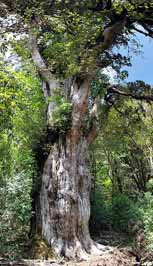
The Jomon Sugi cedar is at least 2,000 years old
After flying into Naha, Okinawa I immediately tried to book the ferry to
Kagoshima, but it was booked out due to the eclipse. In the end I got
through, but couldn’t stop long enough to see the eclipse in Amami
Oshima, and had to journey on to Kagoshima.Having seen all the islands on the way to Okinawa except for Amami Oshima, I stayed there for a couple of days, a few days before the eclipse. It’s a beautiful island, with coral reefs and mangrove swaps, and a tribal bond, mystique and tradition as in Taketomi Jima. I travelled to the other side of the island to snorkel, but it was disappointing. I wasn’t interested in seeing the overpriced Amami Oshima eclipse festival. Doof is not for me. So it suited me to try to see the eclipse at Yakushima instead. Yakushima is the most beautiful island I saw in the southern islands of Japan, with its contrast of jaggered mountains, waterfalls, rivers, beaches and hot springs. The eclipse was a non event. Because of unrelenting clouds, all we experienced was an eerie mid-day darkness.
I went to Anbo and caught a bus to where I could begin walking the Jomon Sugi trail. The forest just kept getting more delicate and harmonious. I saw monkeys and deer along the old truck track, which reached almost to Wilson stump, where the steeper ascent begins. The small crowd at the old Jomon Sugi (a giant Japanese cedar) was in awe, including me. I moved on a little down the track to contemplate the scene, and was joined by some mbira players who brought their instruments to perform for the occasion. Most people don’t venture beyond the Jomon Sugi, but I got as close as a couple of km from the Miyanoura dake summit, from where I could see the spectacular panoramic view, and experience how the local yambushi ascetics feel when they do their sacred pilgimage there. I took a different trail on the way back, over the high mountain pass that went through the magical Princess Mononoke forest and national park on the other side from where I could catch a bus back to the Miyanoura port.
Takachiho and the Sun Goddess cave
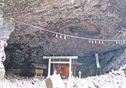
I purchased a 'seishun juhachi kippu' 5 day rail pass in Kagoshima and caught a train to Nobeoka. Each day didn't need to be consecutive, so it lasted me over my last few weeks. Next morning I hitched to Takachiho. In Japanese mythology Susanoo, the Japanese god of the seas, drove Amaterasu into Ame-no-Iwato. This caused the sun to hide for a long period of time. Ama-no-Iwato literally means "The cave of the sun god" of "heavenly rock cave". The cave is on the opposite side of lush green bank of the beautiful river, where the Ama-no-Iwato shrine is, near Takachiho. This is also the land to where Ninigi-no-Mikoto descended from the heavens, sent by Amaterasu, the sun goddess.Amaterasu Omikami, one of the principal Shinto deities, is described in the Kojiki as the sun goddess who was born from Izanagi-no-Mikoto's left eye as he purified himself in a river, and she went on to become the ruler of the Higher Celestial Plain (Takamagahara). Amaterasu, means "(that which) illuminates Heaven". She is also said to be directly linked in lineage to the Imperial Household of Japan and the Emperor, who are considered descendants of the kami themselves.
Ame-no-Iwato Cave, Takachiho
In the Kojiki, Amaterasu Omikami is described as the goddess from which all light emanates and is often referred to as the sun goddess because of her warmth and compassion for the people who worshipped her. Some other myths state that Amaterasu Omikami was born from water.The Kojiki myth says that for a while, everything among the three revered gods was peaceful and all of the world ran smoothly. One day, Susanoo-no-Mikoto went on a drunken rampage. Amaterasu Omikami was angered and in protest she sealed herself shut in the Heavenly Cave with a giant rock. As a result, the world was consumed with darkness. Without her, everything began to wither and die. Countless Kami gathered in front of her cave and devised a way to lure her out. They all sat around the cave and set up a mirror across from the entrance. Ame-no-Uzume, the voluptuous goddess of merriment turned over a wash-tub and began a sensual dance, tapping the beat on the tub. She exposed her breasts and lifted her skirts as she danced. All of the gods made a great noise of yelling and cheering and laughing. Amaterasu peeked out to see what the noise was about. She asked the nearest god what was going on and he replied that there was a new goddess. When Amaterasu asked where she was, he pointed to the mirror.
The Omikami had never seen herself before and when she caught her reflection, she stared at the radiance of her own form. When she was out of the way, Tajikara-O shut the rock behind her. Having lured her out of the cave, the gods convinced her to go back into the Celestial Plain and all life began to grow again and become strong in her light.
Later she sent her grandson Ninigi-no-Mikoto (son of Ame no Oshihomimi no Mikoto) to pacify Japan: his great-grandson became the first emperor, Emperor Jimmu. He had three celestial gifts, a sacred sword (Kusanagi), jewel (Yasakani no magatama), and mirror (Yata no kagami) that became the Japanese imperial regalia.These three gifts signify that the emperor is the descendant of Amaterasu herself. The account of Ninigi no Mikoto being sent to earth appears in the Nihon Shoki. Amaterasu is credited with inventing the cultivation of rice and wheat, use of silkworms and weaving with a loom. Kukai, the founder of the Shingon Buddhist sect linked Amaterasu with Dainichi Nyorai, a central manifestation of the Buddha, whose name is literally "Great Sun Buddha". Thus Amaterasu Omikami is held as an divine Emanation of Buddha Vairocana.
Her most important shrine, the Grand Shrine of Ise, is torn down and rebuilt every 20 years. In that shrine she is represented as a mirror, one of the three Japanese imperial regalia. The Ise Shrine is said to be the home of Amaterasu Omikami. She is celebrated every July 17 with street processions all over the country. Festivities on December 21, the winter solstice, celebrate her coming out of the cave.
There are differences between the description of the goddess in Kojiki and that in Nihon Shoki. First is the story of her birth. In Kojiki, she was born after Izanagi-no-Mikoto failed to retrieve Izanami-no-Mikoto from Yomi. However, in the Nihon Shoki, Izanagi-no-Mikoto and Izanami-no-Mikoto, who was still alive, together decided to create the supreme deity to reign over the world, and gave birth to Amaterasu.
Aso Jinja
I managed to hitch from Takachiho to Mount Aso, the largest active volcano in Japan. The central cone group of Aso consists of five peaks. The crater of Mt. Naka, the west side, accessible by road, contains an active volcano which continuously emits smoke and has occasional eruptions. Peering into the crater when the steam clouds part, ones sees the emerald green boiling water that fills it.
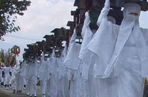
I learned of the fire ritual that happens in March at Aso Jinja (Aso shrine) by watching the film at the Aso volcanic museum, just near this crater. There was another ritual shown involving green stalks of rice thrown onto the portable shrines as they paraded through the village streets. But I had no knowledge of the most sacred day of the year.The English speaking woman at the local information center, who had told me she was a participant in the local indigenous community, gave sufficient directions to find my way to Aso Jinja (at Ichinomiya), but apparently with-held what was about to unfold. I arrived in the rain in the afternoon, and hearing drums, walked faster.
There were women in white robes, and a large crowd at the shrine. They were throwing rice stalks, just like in the film, onto the portable shrines, but things were winding down and the portable shrines were being put back into the Jinja. I asked two Japanese ladies what was going on. Fortunately they were tourists and could speak English. They told me they had been there all day, and the event had begun with a Shinto ceremony followed by the parading of the shrines throughout the town, which now had come to an end. It was indeed the most sacred day of the year (28/7/09), and I was about to experience my first Shinto ceremony.
The shrine bearers and devotees crowed into the front of the shrine. I was in the middle listening to the singing. It was in vowel sounds, rather than words, perfectly in tune, no harmony. I heard only male voices, there were few females. This lasted 15-30 minutes. Then everyone left except the priests, musicians, and me, except for a handful of onlookers. By the time the ceremony took place the courtyard was mostly empty. A priest came, returning a few idols and crest symbols on posts. These were placed at the side of the shrine. At the center was the head (painted red) of a heifer idol. It kindled memories of the golden calf scene, or the defiling of the Jerusalem temple by the Seleucids during the Maccabeean revolt. The other two idols; white faced human gods, were placed on other side. I remembered that Buddhists idolised an Ox connected to a silly legend, but this might have been different.
According to my guide book, the Aso Jinja is dedicated to the 12 gods of the mountain. The locals worship Taka-dake, the volcano god, as the supreme god of Kyushu. I assume this was the heifer idol.
There was a beautiful brief burst of wooden flute and drum out of the midst of the silence, something I later learned is common to other more orthodox Shinto practices. Then the chief priest dressed in crimson attire and a black Shinto hat rose and chanted from a scroll in a pious tone reminiscent of any orthodox Christian priest. The difference was that this reading was brief, and he sat down and a less senior priest dressed in a different colour completed the formalities. There was another burst of music and it was over. I walked out of the deserted shrine thru the rare ‘mon’ (gate) into the adjacent lane. For a vegan it was unpleasant stroll through the various roasted meat stalls, something I was accustomed to seeing at temples of idols around the world. I thought how tight knit and bound this community was to their deep-seated form of unity, giving its folk a time of fervent communion suited to their rural lifestyle based spiritual needs, and a break from the mundane world; and how established their (perhaps superstitious) concept of order was, in serving to keep their tribe together as an entity, in contrast to the alternative possibility of being scattered individuals who cannot unite for a common purpose.
I now know this festival is called the Onda Matsuri (rice field work pantomime) and it occurs on July 28 and 29. On the day of the festival, a procession of nearly one hundred attendants, beginning with a person wearing a mask of the kami, Sarutahiko, followed by saotome (rice planting women), fourteen unari (young women) carrying rice chests, lion dancers (shishi), dengaku, field laborers, oxen, and four sacred palanquins (shin'yo), proceeds to the first temporary shrine and ceremonially present offerings of food and norito. Then a ritual rice planting occurs and the procession moves to the second temporary shrine. In the evening, the procession returns to the main shrine where all of the shrines are ceremonially visited and another ritualized rice-planting is held in the shrine grounds.
Many matsuri (festivals) throughout Japan originated from Shinto rites, which included thanksgiving prayers often of food, valuables and purification rituals. On such occasions rites may be held for water purification (misogi) and confinement in shrines for devotional purposes, the procession of a sacred palanquin or of boats, a ceremonial feast, a lion dance (shishi mai), and a rice-planting festival (o-taue matsuri).
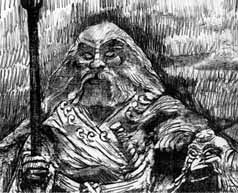
The gods of heaven called council and asked for a volunteer to
subdue Sarutahiko. None of the male deities volunteered, so
Ama-no-Uzume stated that she would go. Being the bold and
independent sort, she removed her arms from the sleeves of her
kimono and let the robe drop to her waist, leaving her breasts
exposed [a similar tactic as for Amaterasu].
She descended to earth and found Sarutahiko walking along a path. He
was surprised to see a half-naked goddess walking towards him, arms
akimbo, with a very stern look on her face.
Having gotten his attention, Ama-no-Uzume insisted that he swear
fealty to Ninigi and to Amaterasu, his grandmother. So impressed was
Sarutahiko by the goddess' boldness that he immediately obeyed the
command and at the same time asked her to be his wife. The two lived
out their days and were entombed at the site of what is now Tsubaki
Dai Jinja in Mie Prefecture, Japan. The shrine has been in continual
operation for more than 2000 years, and was given its current name
by Emperor Nintoku, the son of Ojin.
Kyshu, Izumo, Shikoku and Kyoto on a 5 day Rail Pass
I caught the first early morning train to Kumamoto, quickly moving on through Fukuoka, and left Kyushu, reaching Izumo on the northern side of Western Honshu late at night on the slow local trains. Though out of my way, it was worth paying a visit to Izumo Taisha (or Izumo Oyashiro), the Izumo shrine. It is the 2nd most revered shrine, after Ise. It enshrines O-Kuninushi-no-okami.The Izumo Taisha is now enclosed within a protective building. But it costs nothing to get a ticket and go in provided you are correctly dressed. In a conversation with a polite young shrine devotee I asked about Yamakage. He was aware, and was respectful of it. In the course of my enquiry about seniority of kami, the kami of the three-fold whirl and the significance of O-Kuninushi-no-okami, I asked who, in all Japan, has authority to interpret Shinto doctrine, or kami seniority above all others. I was surprised to learn that his heart-felt loyalty and devotion was to the emperor. I said, the queen of England would not be considered the most capable person of interpreting religious doctrine in England. Why would the emperor? This did not deter him. I could sense his young deeply cultivated dedication that kept heart centered in the path he had chosen.
In ‘Glimpses of Japan’ (1894) by Lafcadio
Hearn (1850-1904) we learn that the sacred name of Japan, Shinkoku,
or ‘country of the gods’ was the land of Izumo.
“Hither, from the blue plain of High Heaven first came to dwell a
while the earth makers Izanagi and Izanami, the parents
of gods and men”. Somewhere of the border of this land
Izanami was buried. Out of this land and into the realm of the dead
Izanagi followed after her (as written in the Kojiki, the most ancient
book extant, in the archaic tongue
of Japan, and the most sacred scripture of Shinto).
[In an Oahspean interpretation this would mean that Izumo is an unseen
realm of the lower heavens, below which is the earth itself, where
earthbound spirits dwell]. Hearn adds, “the myth is more weird than
the descent of Ishtar.”
A similar myth is of the 'Torrent mist princess', daughter of the
world of shadows, she who loved the master of the great land
(O-Kuninushi) and followed him out of the place of ghosts to be his
wife.
“As Izumo is the province of the gods and place of the childhood of
the race who worship Izanagi and Izanami, so is ‘Kitzuki of Izumo’ the
city of the gods, with its immemorial temple, the earliest home of the
ancient Shinto faith”.
Hearn narrates romantically, how he was the first foreigner to meet
with Senke Takanori, the kokuzo
(spiritual governor) of Kitzuki, to whom "none may speak save on
bended knee”. The Takanori family trace back their descent to the
goddess of the sun. He was the 81st pontiff of Kitzuki, with his
lineage traced back 65 generations of kokuzo, and further, 16
generations of earthly deities to Ama-terasu, and her brother
Susanoo-no-mikato.
The Tenshi-Sama (Son of Heaven)
stands as mediator “between his people and the sun”. Hearn says
worshipful reverence paid to Mikado (emperor) was paid to a dream, a
name rather than to a person or reality, for the Tenshi-Sama was ever
invisible as a deity “divinely retired”, and in popular belief no man
could look upon his face and live. Invisibility and mystery enhanced
the divine legend of Mikado. But kukuzo received almost equal
devotion. From remote times there have been two branches of the same
family that claim ancestral right to the office of kukuzo, the rival
houses of Senke and Kitajima. The government favoured the former, but
appointed Kitajima to be vice-kukuzo (a temporal title), the emperor’s
deputy to Kitzuki, who is appointed to worship the deity in the
emperors stead.
Kuni
no miyatsuko (Kokuzo) were
officials in ancient Japan at the time of the Yamato court. They
were in charge of provinces. Kuni no miyatsuko had vast powers and
were local lords appointed by the Yamato court. Kuni no miyatsuko as
rulers were abolished during the Taika reforms, and provinces were
reorganized under the ritsuryo system. Kuni no miyatsuko were
appointed gunshi, whereas provinces became ruled by kokushi. The
post remained after the Taika reforms, but the Kuni no miyatsuko
were now in charge of spiritual and
religious affairs.
Senke Takanori claimed that the ‘Oha-yashiro’ (Izumo oyashiro) was
first built by the order of the goddess of the sun, when deities alone
existed. It was rebuilt in the time of Emperor Sui-nin, and again in
the time of Empress Sai-mei, which is the same building existing
today. The Oyashiro was rebuilt 28 times every 61 years. In the 4th
year of Tai-ei-sama, Amako Tsune Hisa committed charge to Buddhists,
to the outrage of tradition. Things were restored by Moro Mototsugo.
In the name O-Kuninushi-no-okami, kuni means country, nation, and
Ka-nushi is a Shinto priest. The English handout I received at the
shrine tells me O-Kuninushi-no-okami appears to be an individual,
unrelated god to Amaterasu. But he is brought within the ideology by
having been given the status of “creator of all things under the
heavens”, saviour and protector of the natural way of all things”,
cultivator of land, developer of the nation, bringer of agriculture
and farming, and medicine. Most significantly he is “En-musubi”,
the creator and arranger of relationships, and god of all-encompassing
boundless love, mercy and brotherhood.
The Izumo region is known as the ‘realm of the gods’ and the land of
mythology. After OKuninushi created the land he presented it to
Amaterasu-omikami, the parent goddess of the Japanese people, and went
into seclusion.
OKuninushi, master-of-the-great-land, is one of the most ancient
divinities of Japan, but is confounded with Daikoku, god of wealth
(who is depicted seated on bales of rice, holding a red sun against
his breast, and a mallet). His son Koto-shiro-nushi-no-kami is
confounded with Ebishu, who is patron of labour (depicted holding a
tai-fish).
Hearn mentions 800 myriad of kami in the plain of High Heaven. Of
these, 3132 dwell in the provinces of land, enshrined in 2861 shrines.
The tenth month was called “no god month”, because the deities leave
to assemble at Kitzuki in Izumo. Hearn recalls that serpents come to
the land from the sea and coil on the sambo (table of the gods) to
announce their coming. The dragon
king sends messengers to the shrines of Izanagi and Izanami, the
parents of gods and men.
A little serpent, called the august dragon serpent, is sent by the
dragon king. The sea darkens and rises and roars before the coming of
Ryu-ja-sama, messenger of Ryugu-jo
(palace of dragons). The messenger is also called Hakaju, a white
serpent with the face of a man, with white brows and a crown, also a
servant of Benten, goddess of love and beauty. This legend has been
identified with Hindu beings, having been introduced by Buddhism. It
is also a serpent-like fish caught by fishermen.
Hearn saw a carved relief of “winged dragons
rising from a storm-whirl of
waters, or descending into it”. The whirls of the eddying
water, and crests of the billowing, stood out in hoops and curlings of
grey wood.
Ryujin (dragon
god), also known as Owatatsumi, was the tutelary deity of the sea in
Japanese mythology. This Japanese dragon symbolized the power of the
ocean, had a large mouth, and was able to transform into a human
shape. Ryujin lived in Ryugu-jo, his palace under
the sea built out of red and white coral, from where he controlled the
tides with magical tide jewels.
Ryujin was the father of the beautiful goddess Otohime who married the
hunter prince Hoori. The first Emperor of Japan, Emperor Jimmu, is
said to have been a grandson of Otohime and Hoori's. Thus, Ryujin is
an ancestor of the Japanese imperial dynasty.
According to legend, the Empress Jingu was able to carry out her
attack into Korea with the help of Ryujin's
tide jewels. An annual festival at the Yasaka Shrine
called Gion Matsuri celebrates this legend. Ryujin shinko (dragon god
faith) is a form of Shinto religious belief that worships dragons as
water kami. It is connected with agricultural rituals, rain prayers,
and the success of fishermen. In legend, Urashima
Taro visited Ryugu-jo for seven days.
Tokushima, 88 Sacred Temples, Iya Valley, Koya-san and Nara
Early next morning I stopped in Matsue and saw where Hearn
had lived. It was by the moat of the castle. Then passed down through
the Western Honshu interior to Okayama and crossed the extensive
bridge spanning to Shikoku just before dark, managing to glimpse some
of the wonderful islands of the inland sea. I reached Tokushima late
at night. The Awa Odori Kaikan, near the chair lift, was interesting
to see the next morning, and I stayed to participate in the cute
Awaodori dance performance.
In the afternoon I moved on to Bandou, where the 88
Sacred Temples pilgrimage begins, and began walking through the
towns, villages, farms, bamboo groves and forests, following the ever
elusive markers (I had no map). I managed to visit the first 5
temples. Having had enough of the endless Buddha idols and Buddhist
temples after two days on the pilgrimage trail I left for the more
wild and beautiful Iya
Valley. This was far more spectacular, with clear blue water and
beautiful forest appearing through the gorge as the train wound its
way through. I got out at Oboke, crossed the bridge and found a way to
get down into the gorge and go for a swim in the pure
rushing water in time to get another train to Kotohira
and hike up the stone steps, flanked by stalls all the way to the top
of Kompirasan
and witness the view.
{kind=link}
Still moving on, I was again in Western Honshu, passing through
Kobe, Osaka and Wakayama to sleep at Hashimoto, at the foothills of
the Koyasan mountains. Next morning I took the cable car up to the Koya-san
monastic complex, the headquarters of the Shingon school of Esoteric
Buddhism.
Koya-san
was thick with tourists, but there was nevertheless a quality to be
discovered. There was tranquillity among the stately cedars in the Oku-no-in
cemetery. This was the only place I could sit quietly and still
and peacefully meditate. The many historical temples conveyed the
legend of Kukai.
But it wore off and I moved on the Osaka and Nara in two days.
{kind=link}
Kukai, also known posthumously as
Kobo-Daishi, 774–835, was a Japanese monk, scholar, poet, and
artist, founder of the Shingon or "True Word" school of Buddhism.
Kukai was a calligrapher, engineer, and is said to have invented
kana, the syllabary in which, in combination with Chinese characters
(kanji) the Japanese language is written (although this claim has
not been proven). His religious writings, some fifty works, expound
the esoteric Shingon doctrine. He was born in Shikoku during a
period of political turmoil with Emperor Kammu seeking to
consolidate his power and to extend his realm, while moving the
capital of Japan from Nara ultimately to Heian (modern-day Kyoto).
Biographies of Kukai suggest that he became disillusioned with his Confucian studies, but developed a
strong interest in Buddhist studies instead. Around the age of 22,
Kukai was introduced to Buddhist practice involving chanting the
mantra of the Bodhisattva Akasagarbha (Kokuzo).
During this period Kukai frequently sought out isolated mountain
regions where he chanted the Akasagarbha mantra relentlessly. At age
24 he published his first major literary work, Sango Shiiki, in
which he quotes from an extensive list of sources, including the
classics of Confucianism,
Taoism, and Buddhism. The Nara temples, with their extensive
libraries, possessed these texts.
During this period in Japanese history, the central government
closely regulated Buddhism. Ascetics and independent monks, like
Kukai, were frequently banned and lived outside the law, but still
wandered the countryside or from temple to temple. During this
period Kukai had a dream, in which a man appeared and told him that
the Mahavairocana
Sutra is the scripture which contained the doctrine Kukai was
seeking. Though Kukai managed to obtain a copy he found the
translated portion of the sutra was very cryptic. Because Kukai
could find no one who could elucidate the text for him, he went to
China to study the text there. Kukai took part in a
government-sponsored expedition to China. Scholars are unsure why
Kukai was selected to take part in an official mission to China,
given his background as a private, not state-sponsored, monk.
The expedition included four ships, with Kukai on the first ship,
while another famous monk, Saicho was on the second ship. During a
storm, the third ship turned back, while the fourth ship was lost at
sea. Kukai's ship arrived weeks later in the province of Fujian and
its passengers were denied entry to the port while the ship was
impounded. Kukai, being fluent in Chinese, wrote a letter to the
governor of the province explaining their situation. The governor
allowed the ship to dock, and the party was asked to proceed to the
capital of Chang'an (present day Xi'an), the seat of power of the
Tang Dynasty.
After further delays, the Tang court granted Kukai a place in the
Ximingsi temple where his study of Chinese Buddhism began in earnest
as well as studies of Sanskrit with the Gandharan pandit Prajña.
Kukai met Master Hui-kuo the man who would initiate him into the
esoteric Buddhism tradition at Changan's Qinglong Monastery. Huiguo
came from a lineage of Buddhist masters, famed for translating
Sanskrit texts into Chinese, including the Mahavairocana Sutra. In a
few months he was to receive the final initiation, and become a
master of the esoteric lineage. Kukai arrived back in Japan with a
large number of esoteric texts.
Kukai's return from China was eclipsed by
Saicho, the founder of the Tendai
school. Saicho had already had esoteric rites officially recognised
by the court as an integral part of Tendai, and had already
performed the abhisheka, or initiatory ritual, for the court by the
time Kukai returned to Japan. With Emperor Kammu's death, Saicho's
fortunes began to wane. Saicho requested that Kukai give him the
introductory initiation, which Kukai agreed to do. He also granted a
second-level initiation upon Saicho, but refused to bestow the final
initiation (which would have qualified Saicho as a master of
esoteric Buddhism) because Saicho had not completed the required
studies, leading to a falling out between the two that was not
resolved.
In 810 Kukai emerged as a public figure when he was appointed
administrative head of Todai-ji, the central temple in Nara. With
the public initiation ceremonies for Saicho and others at Takaosan
in 812, Kukai became the acknowledged master
of esoteric Buddhism in Japan. He set about
organizing his disciples into an order - making them responsible for
administration, maintenance and construction at the temple, as well
as for monastic discipline.
In 816, Emperor Saga accepted Kukai's request to establish a
mountain retreat at Mount Koya
as a retreat from worldly affairs. The ground was consecrated with
rituals lasting seven days, but he could not stay as he had received
an imperial order to act as advisor to the secretary of state, and
he therefore entrusted the project to a senior disciple. Kukai's
vision was that Mt. Koya was to become a representation of the two
mandalas that form the basis of Shingon Buddhism: the central
plateau as the Womb Realm mandala, with the peaks surrounding the
area as petals of a lotus; and located in the centre of this would
be the Diamond Realm mandala in
the form of a temple which he named Kongobu-ji (Diamond Peak
Temple). At the center of the temple complex sits an enormous statue
of Mahavairocana Buddha who is
the personification of Ultimate Reality.
When Emperor Kammu had moved the capital in 784,
he had not permitted the powerful Buddhists from the temples of Nara
to follow him. He did commission two new temples: To-ji
(Eastern Temple) and Sai-ji (Western Temple) which flanked the road
at southern entrance to the city, protecting the capital from evil
influences.
The To-ji Temple is situated near Kyto railway station. Most of its present buildings date back to the 17th cent.
Emperor Saga asked Kukai, experienced in public works projects, to take over To-ji and finish the building project. Saga gave Kukai free rein, enabling him to make To-ji the first Esoteric Buddhist centre in Kyoto. An imperial decree gave Kukai exclusive use of To-ji for the Shingon School, which set a new precedent in an environment where previously temples had been open to all forms of Buddhism. Kukai open his School of Arts and Sciences, open to all regardless of social rank. This was in contrast to the only other school in the capital which was only open to members of the aristocracy. The school taught Taoism and Confucianism, in addition to Buddhism, and provided free meals to the pupils. The latter was essential because the poor could not afford to live and attend the school without it. The school closed ten years after Kukai's death, when it was sold in order to purchase some rice fields for supporting monastic affairs.
Shingon
Shingon Buddhism is the other extant major branch of Vajrayana
Buddhism along with Tibetan Buddhism. It is often called "Japanese
Esoteric Buddhism". The word shingon is the Japanese reading of the
kanji for the Chinese word zhenyán, literally meaning "true words",
which in turn is the Chinese translation of the Sanskrit word
mantra.
The Shingon includes practices known in Japan as Mikkyo, which are
similar in concept to those in Tibetan Vajrayana Buddhism. The
lineage for Shingon Buddhism differs from that of Tibetan Vajrayana,
having emerged from India and Central Asia (via China) and is based
on earlier versions of the Indian texts than the Tibetan lineage.
Shingon shares material with Tibetan Buddhism–-such as the esoteric
sutras (called Tantras in Tibetan Buddhism) and mandalas – but the
actual practices are not related. The school mostly died out or was
merged into other schools in China towards the end of the Tang
Dynasty but flourished in Japan. Shingon is one of the few remaining
branches of Buddhism that continues to use the siddham script of the
Sanskrit language.
Shingon arose in Japan's Heian period (794-1185) when Kukai went to
China in 804 and studied tantric practices in Xian and returned with
many texts and art works. In time, he developed his own synthesis of
esoteric practice and doctrine, centered on the universal Buddha
Vairocana (Mahavairocana Tathagata).
Shingon enjoyed immense popularity during the Heian Period, and
contributed to art and literature, and influenced other communities,
such as the Tendai sect on Mt. Hiei. Its emphasis on ritual found
support in the Kyoto nobility, particularly the Fujiwara clan. This
favor allotted Shingon several politically powerful temples in the
capital, where rituals for the imperial family and nation were
regularly performed. Many of these temples such as Toji and Daigoji
in the South of Kyoto and Jingoji and Ninnaji in the Northwest
became ritual centers establishing their own particular ritual
lineages.
Like the Tendai School that branched into the Jodo, Zen and Nichiren
Schools in the Kamakura period, Shingon divided into two branches:
Kogi Shingon (Old) and Shingi Shingon (New). This schism arose out
of a political dispute.
The teachings of Shingon are based on esoteric Vajrayana texts, the
Mahavairocana Sutra and the Vajrasekhara Sutra (Diamond
Crown Sutra). These two mystical teachings are shown
in the main two mandalas of Shingon, namely, the Womb Realm
(Taizokai) mandala and the Diamond Realm (Kongo Kai) mandala.
Vajrayana Buddhism is concerned with the ritual and meditative
practices leading to enlightenment. According to Shingon,
enlightenment is not a distant, foreign reality that can take aeons
to approach but a real possibility within this very life, based on
the spiritual potential of every living being, known generally as
Buddha-nature. If cultivated, this luminous
nature manifests as innate wisdom. With the help of a genuine
teacher and through properly training the body, speech, and mind, we
can reclaim and liberate this enlightened capacity for the benefit
of ourselves and others.
Kukai also systematized and categorised the teachings he inherited
into ten stages or levels of spiritual realisation. He wrote at
length on the difference between exoteric (both mainstream Buddhism
and Mahayana) and esoteric (Vajrayana) Buddhism. The differences
between exoteric and esoteric can be summarised as:
Esoteric teachings are preached by the Dharmakaya Buddha which Kukai
identifies with Mahavairocana. Exoteric teachings are preached by
the Nirmanakaya Buddha, also known as Gautama Buddha, or one of the
Sambhoghakaya Buddhas.
Exoteric Buddhism holds that the ultimate state of Buddhahood is
ineffable, and that nothing can be said of it. Esoteric Buddhism
holds that while nothing can be said of it verbally, it is readily
communicated via esoteric rituals which involve the use of mantras,
mudras, and mandalas. Kukai held that exoteric doctrines were merely
provisional, skillful means (upaya) on the part of the Buddhas to
help beings according to their capacity to understand the Truth. The
esoteric doctrines by comparison are the Truth itself, and are a
direct communication of the "inner experience of the Dharmakaya's
enlightenment".
Kukai held, along with the Huayan (Jp. Kegon) school that all
phenomena could be expressed as 'letters' in a 'World-text'. Mantra,
mudra, and mandala are special because they constitute the
'language' through which the Dharmakaya (i.e. Reality itself)
communicates. Although portrayed through the use of anthropomorphic
metaphors, Shingon does not see the Dharmakaya Buddha as a god, or
creator. The Dharmakaya is in fact a symbol for the true
nature of things which is impermanent and empty
of any essence. The teachings were passed from
Mahavairocana.
In Shingon, Mahavairocana Tathagata is the universal or primordial
Buddha that is the basis of all phenomena, present in each and all
of them, and not existing independently or externally to them. The
goal of Shingon is the realization that one's nature is identical
with Mahavairocana, a goal that is achieved through initiation (for
ordained followers), meditation and esoteric ritual practices. This
realization depends on receiving the secret doctrine of Shingon,
transmitted orally to initiates by the school's masters. Body,
speech, and mind participate simultaneously in the subsequent
process of revealing one's nature: the body through devotional
gestures (mudra) and the use of ritual instruments, speech through
sacred formulas (mantra), and mind through meditation.
Shingon places special emphasis on the Thirteen Buddhas, a grouping
of various Buddhas and boddhisattvas, including Amitabha Buddha
(Amida Nyorai), Avalokitesvara Bodhisattva (Kannon), Maitreya
Bodhisattva (Miroku) and Shakyamuni Buddha (Shaka Nyorai).
One feature that Shingon shares in common with the other school of
Esoteric Buddhism (Tendai) is the use of seed-syllables or bija
along with anthropomorphic and symbolic representations, to express
Buddhist deities in their mandalas. There are four types of
mandalas:
Maha-mandala (anthropomorphic representation)
Seed-syllable mandala or dharma-mandala
Samaya-mandala (representations of the vows of the deities in the form of articles they hold or their mudras)
Karma-mandala (representing the activities of the deities in the three-dimensional form of statues, etc)
An ancient Indian Sanskrit syllabary script
known as siddham
is used to write mantras. A core meditative practice of Shingon is
ajikan, "Meditating on the Letter 'A'", which uses the siddham
letter representing that sound as a. Other Shingon meditations are
"full moon" visualization, "visualization of the five elements
arrayed in the body" and "series of five meditations to attain
Buddhahood".
The essence of Shingon Mantrayana practice is to experience Reality
by emulating the inner realization of the Dharmakaya through the
meditative ritual use of mantra, mudra and visualization of mandala
(ie. the three mysteries). All Shingon followers gradually develop a
teacher-student relationship, whereby a teacher learns the
disposition of the student and teaches practices accordingly. For
lay practitioners, there is no initiation ceremony beyond the
Kechien Kanjo, which is normally offered only at Mt. Koya, but is
not required. In the case of disciples wishing to ordain as priests,
the process is more complex and requires initiations in various
mandalas, rituals and so on. In either case, the stress is on
finding a qualified and willing mentor who will guide you through
Shingon practice at a gradual pace. Esoteric Buddhism is also
practiced, in the Japanese Tendai School founded at around the same
time as the Shingon School in the early 9th century (Heian period).
The term used there is Mikkyo. Branches of Shingon I visited are
Toji, in Kyoto and Koyasan.
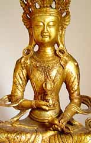
Tibetan Vajrasattva holds the vajra in his right hand and a bell in his left hand.
Mahavairocana TantraThe Mahavairocana Tantra is an important Vajrayana Buddhist text. In Japan where it is known as the Mahavairocana Sutra, it is one of two central texts in the Shingon school, along with the Vajrasekhara Sutra. The Mahavairocana Tantra is the first true Buddhist tantra, the earliest comprehensive manual of tantric Buddhism. It was probably composed in the 6th to mid 7th century, probably in north-eastern India. The Mahavairocana Tantra consists of three primary mandalas corresponding to the body, speech and mind of Mahavairocana, as well as preliminary practices and initiation rituals.
The sutra begins in a timeless setting of Mahavairocana Buddha's palace (symbolizing all of existence), with a dialogue between Mahavairocana Buddha and his disciple Vajrasattva, who has led a host of bodhisattvas to visit Vairocana Buddha and learn the Dharma. Vajrasattva inquires about the cause, goal and foundation of all-embracing wisdom, which leads to a philosophical discourse by Mahavairocana Buddha, with emphasis on the relationship between form and emptiness. The audience cannot comprehend the teaching, so the Buddha demonstrates through the use mandala. Vajrasattva then questions why rituals and objects are needed if the truth is beyond form. Vairocana replies that these are expedient means to bring practitioners to experience awakening more readily.
There are three chapters on the mandala of the Body Mystery with detailed instruction on the laying out of the mandala and the abhisekha ritual. This mandala is also known as the Mandala of the Womb Realm, three chapters on the mandala of the Speech Mystery, and five chapters on the mandala of the Mind Mystery. Five chapters include the six Homa rites. Chapter 2 of the sutra contains four precepts, called the samaya:
Not to abandon the true DharmaThe Mahavairocana Tantra does not trace its lineage to Shakyamuni Buddha, the founder of Buddhism. Instead it comes directly from Mahavairocana. The lineage then being, according to the Shingon tradition:
Not to deviate from one's own enlightened mind
Not to be reserved in sharing with others the Buddhist teachings
Not to bring harm to any sentient beings
Vajrasattva, the disciple of Mahavairocana Buddha in this sutra.
Nagarjuna received the Mahavairocana Tantra text directly from Vajrasattva inside an iron stupa in South India.
Nagabodhi, Nagarjuna's disciple
Vajrabodhi, an Indian monk famous for translating esoteric rituals into Chinese language
Amoghavajra, Vajrabodhi's famous disciple, and expert in esoteric practices
Hui-kuo, a Chinese esoteric master Kukai, founder of Shingon Buddhism in Japan.
Within the vision of the Mahavairocana Sutra, the state of bodhi (Awakening/Enlightenment)
is seen as naturally inherent to the mind - the mind's natural and
pure state (as in Dzogchen
and Tathagatagarbha)
- and is viewed as the perceptual sphere
of non-duality, where all false distinctions between
a perceiving subject and perceived objects are lifted and the true
state of things (non-duality) is revealed. This is also the
understanding of Enlightenment found in Yogacara Buddhism. To
achieve this vision of non-duality, it is necessary to recognise
one's own mind. Knowing your mind 'as it truly is' means that you
are to know the inherent natural state
of the mind by eliminating the split into a subject and objects
which normally occurs in the world and is wrongly thought to be
real. This corresponds to the Yogacara definition ... that emptiness
(sunyata) is the absence of this imaginary split. Suchness
(tathata) is the intrinsic nature (svabhava) of the mind which is
Enlightenment (bodhi-citta).
Since Awareness (jnana) is non-dual, Suchness-Awareness is not so
much the Awareness of Suchness, but the Awareness which is Suchness.
This Suchness-Awareness or Perfect Enlightenment is Mahavairocana
[the Primal Buddha, uncreated
and forever existent]. In other words, the mind in its intrinsic
nature is Mahavairocana, whom one "becomes" (or vice-versa) when one
is perfectly enlightened. ”
In this sense, even emptiness needs to be transcended, to the extent
that it is not a vacuous emptiness, but the expanse
of the mind of Buddha, Buddhic Awareness and
Buddha-realms, all of which know of no beginning and no arising. The
mind is primordially unborn and
unarisen. The natural state of mind is the Tathagata's inherent
Awareness and the all-pervasiver Body
of Vairocana with all the manifested Buddha realms. Emptiness is not
mere inert nothingness but is precisely the unlocalised
locus where Vairocana resides. Vajrapani salutes the
Buddha Vairocana with the following words:
I salute you who are bodhicitta [Awakened Mind]!
I salute you who are the source of Enlightenment! ... I bow to you who reside in emptiness!
Here Vairocana comes across as a human-like
entity that gives a discourse to heavenly beings, even as an angel -
a passed over spirit - speculating on his self existence. He is
being identified with the inherent, aware, primordial state, the
suchness existing within the emptiness. This becomes one and the
same person and body in Vairocana, thus he is identified as the
uncreated Primal Buddha. When Hindus speak of an entity not born of
woman, ie., uncreated, this can only refer to the original creator
and source of all beings and creation. But Buddhism rejects the
notion of a creator. Has not Vairocana now assumed that role?
Becoming one with this suchness is not the same as originally being
it.
The entity portrays himself as a personification of enlightenment,
the expanse of the perfect mind, the void, or what I interpret as
the Holy Ghost, and declares this to be Vairocana himself. Perhaps
these are indeed hidden qualities of the sought after unknown
primordial originator/creator, in part. Had not there been a
religious suppression of knowledge in those days, we could have
suspected that Vairocana was discoursing on a much older idea of
self-realisation, which formerly referred to the incomprehensible
Great Spirit, the All-Soul, All-Person not in the image of a man,
nor a mere principle. The Buddhist version has omitted this part.
But records of this are no longer around, save traces in the Vedas,
which themselves have been corrupted.
It is easy to see through the speculation that Vairocana is the
uncreated Primal Buddha. Oahspe would have it that there are yet
higher gods in Nirvana than Vairocana, who themselves worship a yet
higher incomprehensible primordial All-Person, who is far more to
them than a state. On the path to the truth we regularly meet those
who say "you are the Buddha", an "aspect of God" without going to
the core, leaving them to one day gasp for another anthropomorphized
Vairocana-like substitute for the eternal.
Perhaps "Mahavairocana Buddha's palace" is Haractu, the "Buddhist
heavenly kingdom, the All Highest Heaven
of Heavens" and Kabalactes is the fallen Lord who
took the name Buddha, and 'Mahavairocana' is only an elaborate
identity styled by Kabalactes' officer Yima. And maybe Yima has
taken the alias 'Vajrasattva' (Diamond Mind). [See What
Oahspe has to say about Buddhism for the explanation]
Because Kabalactes plagiarised the wisdom of Sakaya, and even took
the name, Sakaya Muni [Sakyamuni],
we must seek out in Vajrayana esoteric knowledge that which leads us
to truth, and reject that which leads us into idolism, and slavery
to a self-asserted God that had turned human faith "expediently"
towards his own glory by revising the ancient "rituals and objects"
to serve himself.
The Vajrasekhara Sutra is an important
Buddhist tantra used in the Vajrayana, particularly Shingon. The
sutra begins with Mahavairocana Buddha preaching the Dharma to a
great host of Bodhisattvas, including Vajrasattva, in the Buddhist
heaven of Akanishta. As he preaches the Dharma, Prince
Sarvarthasiddhi, the esoteric name of the Buddha, Siddhartha
Gautama, is meditating under the Bodhi
Tree. Enlightenment is imminent, but the Prince has
still not attained it because he is still attached in some small way
to his forsaken ascetic practices. Despairing over his inability to
find Enlightenment, he is visited by Buddhist figures who were just
now learning the Dharma from Mahavairocana.
These same deities proceed to teach him a more direct path to
Enlightenment through esoteric ritual. The sutra then details the
rituals used to actualize the Dharma. This sutra also introduces the
Diamond Realm
Mandala as a focus for meditative practices, and its use in the abhiseka ritual
of initiation. As the prince has now experienced Enlightenment, he
ascends to Mount Sumeru and
constructs the Diamond Realm Mandala and initiates and converts the
bodhisattvas gathered there, one by one, into esoteric deities who
constitute the Mandala.
In esoteric ritual, the teacher of the esoteric Buddhism assumes the
role of the Prince who constructs the Mandala, while the master and
student repeat specific mantras in a form of dialogue. The new
initiates are blindfolded, and are asked to toss a flower upon a
mandala that is constructed. Where the flower lands helps decide
which Buddhist figure the student should devote themselves to. The
student's blindfold is removed and a vajra is placed in hand.
In Vajrayana Buddhism, the Diamond Realm is a metaphysical space inhabited by the Five Wisdom (Dhyani) Buddhas. The Diamond Realm Mandala is based on the Vajrasekhara Sutra. The Diamond Realm along with the Womb Realm Mandala forms the Mandala of the Two Realms, which form the core of Shingon rituals, including the initiation or abhiseka ritual. In traditional Shingon halls, the Diamond Realm Mandala is hung on the west wall symbolizing the final realization of Mahavairocana Buddha. The Womb Realm Mandala is hung on the east wall, symbolizing the young stage of Mahavairocana Buddha.
The Five Dhyani (Wisdom) Buddhas (Dhyani Skt. for "concentration"), are representations of the five qualities of the Buddha. They are a later development, based on the Yogacara elaboration of concepts concerning the jñana of the Buddhas, of the Trikaya ("three body") theory, which posits three "bodies" of the Buddha.
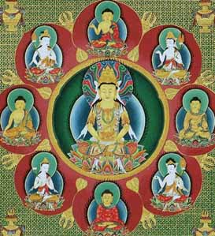
Akshobhya
(east)
Amoghasiddhi
(north)
Vairocana
(principal deity/ meditator)
RatnasambhavaRatnasa
(south)
Amitabha
(west)
Akshobhya
transforms anger into a clear, mirror-like
wisdom. A knowledge of what is real, and what is illusion, or a mere
reflection of actual reality. The mirror
is mind itself - clear
like the sky, empty yet luminous.
Holding all the images of space and time, yet untouched by them. He
represents the eternal mind, and the Vajra family is connected with
reason and intellect. Its brilliance illuminates the darkness of
ignorance, its sharpness cuts through confusion. With this, we see
things as they are, impartially and unaffectedly. A mirror will
reflect both a red rose or a bloody dagger just as they are.
Akshobhya’s blue color is linked to the color of water, which has
the capacity to act as a clear mirror.
Akshobhya makes the bhumisparsha mudra (earth touching gesture, a
gesture of resolve). His emblem is the
vajra, symbolising the essential qualities of
enlightenment - strength, power, energy of the thunderbolt, and the
brilliance, purity, and indestructibility of a diamond. Vajrasattva
sits to the East near Akshobhya Buddha.
Vairocana (also Mahavairocana) is the embodiment of Dharmakaya,
and can be seen as the universal aspect of the historical Gautama
Buddha. He is also the embodiment of shunyata or Emptiness [Holy
Ghost]. Vairocana in Tibetan is called ‘Namnang' (the
illuminator) and in Japanese Vairocana (Dainichi) translates as
"Great Sun". Francis Xavier used Dainichi, the Japanese name for
Vairocana, to designate the Christian God. As Xavier learned more he
substituted the term Deusu, which he derived from Deus.
Vairocana Buddha is first introduced in the Brahma Net Sutra:
“Now, I, Vairocana Buddha am sitting atop a lotus
pedestal; On thousand flowers surrounding me are a
thousand Sakyamuni Buddhas. Each flower supports a hundred million
worlds; in each world a Sakyamuni Buddha appears. All are seated
beneath a Bodhi-tree, all simultaneously attain Buddhahood. All
these innumerable Buddhas have Vairocana as their original body.”
In Japanese Buddhism, Vairocana was gradually superseded as an
object of reverence by Amitabha, due to the popularity of Pure Land
Buddhism. Vairocana's legacy still remains in the Todai-ji temple
and in Shingon.
Vairocana
displays the Dharmacakra (Wheel of Dharma) mudra, his emblem is the
golden or solar wheel. This symbolizes when he preached the first
sermon after his Enlightenment in the Deer Park at Sarnath. While
Amitabha Buddha is seen as a personification of Compassion Vairocana
is often seen as a personification of Wisdom. Vairocana is said to
be the sum of all the Dhyani Buddhas and combines all their
qualities. Borobudur was dedicated to Vairocana, performing
Dharmachakra mudra, flanked by Avalokitesvara and Vajrapani.
Amitabha
is a celestial buddha of Mahayana. Amitabha is the principal buddha
in the Pure Land sect. Amita ( infinite) and abha (light) is
translatable as "Infinite Light". Pure Land Buddhism seems to have
first become popular in northwest India/Pakistan and Afghanistan,
from where it spread to Central Asia and China. Through his efforts,
Amitabha created the "Pure Land" (Japanese: jodo) called Sukhavati
(possessing happiness), or Dewachen
(Tibetan) [hence the Devachanic Plane of Theosophy]. In Tibetan
Vajrayana, Amitabha is considered one of the Five Dhyani Buddhas.
His consort is a feminine form of Avalokiteshvara and the precursor
of Guan Yin. His two main disciples (as had Shakyamuni) are
Vajrapani and Avalokiteshvara, the former to his left and the latter
to his right. Panchen Lamas are considered to be incarnations of
Amitabha.
It can be difficult to distinguish Amitabha from Sakyamuni, as both
are portrayed as possessing all the attributes of a buddha. Amitabha
can often be distinguished by his mudra: depicted displaying the
meditation mudra (thumbs touching and fingers together, while the
earth-touching mudra (right hand pointed downward over the right
leg, palm inward) is reserved for Sakyamuni. He can also be seen
holding a lotus in his hands while displaying the meditation mudra.
When standing, Amitabha is often shown with his left arm bare and
extended downward with thumb and forefinger touching, with his right
hand facing outward also with thumb and forefinger touching. His
unique emblem is the lotus, thus associated with gentleness,
openness, and purity.
The Womb Realm (Skt. garbhakosa-dhatu) is the metaphysical space inhabited by the Five Wisdom Kings. The Womb Realm is based on the Mahavairocana Sutra. The name of the mandala derives from the sutra, where it is said that Mahavairocana Buddha revealed the mandala's secret teachings to his disciple Vajrasattva from his "womb of compassion". In other translations, the term matrix realm or Matrix Mandala are used.
The Avatamsaka Sutra (Japanese: Kegon Kyo) or Flower Garland Sutra, is an influential Mahayana Sutra of East Asian Buddhism. This text describes a cosmos of infinite realms upon realms, mutually containing each other. The vision expressed was the foundation for the creation of the Huayan school of Chinese Buddhism, which was characterized by a philosophy of interpenetration. Huayan is known as Kegon in Japan. The sutra was written in stages, beginning from at least 500 years after the death of the Buddha. The sutra has not survived in Sanskrit. The sutra, among the largest in the Buddhist canon, contains 40 chapters of overarching themes:
The interdependency of all phenomena
(dharmas).
The progression of the Buddhist path to full Enlightenment, or
Buddhahood.
Chapter 26, the Dasabhumika Sutra or Sutra of the Ten Stages details the ten stages of development a bodhisattva must undergo to attain supreme enlightenment. The last chapter, the Gandavyuha Sutra, details the journey of the youth Sudhana, who undertakes a pilgrimage at the behest of the bodhisattva Manjushri. Sudhana encounters The Tower of Maitreya, which along with Indra's net is one of the most startling metaphors for the infinite.
In the middle of the great tower... he saw the billion-world universe... and everywhere there was Sudhana at his feet... Thus Sudhana saw Maitreya's practices of... transcendence over countless eons (kalpa), from each of the squares of the check board wall... In the same way Sudhana... saw the whole supernal manifestation, was perfectly aware it, understood it, contemplated it, used it as a means, beheld it, and saw himself there.
The Gandavyhua suggests that with a subtle
shift of perspective we may come to see that the enlightenment that
the pilgrim so fervently sought was not only with him at every stage
of his journey, but before it began as well — that enlightenment is
not something to be gained, but "something" the pilgrim never
departed from.
The final master that Sudhana visits is the Bodhisattva
Samantabhadra (Universal Worthy), who teaches him that wisdom only
exists for the sake of putting it into practice; that it is only
good insofar as it benefits all living beings. When this done, the
world of the Gandavyuha (ceases) to be a mystery, a realm devoid of
form and corporeality, for now it overlaps this earthly world; no,
it becomes that "Thou art it"
and there is a perfect fusion of the two.
Indra's net (also Indra's jewels or pearls) is a metaphor used to illustrate the concepts of emptiness, dependent origination, and interpenetration in Buddhist philosophy. It was developed by the Mahayana school in the 3rd century scriptures of the Avatamsaka Sutra, and later by the Chinese Huayan school between the 6th and 8th century. Buddhist concepts of interpenetration hold that all phenomena are intimately connected; Indra's net symbolizes a universe where infinitely repeated mutual relations exist between all members of the universe. This idea is communicated in the image of the interconnectedness of the universe as seen in the net of the Vedic god Indra, whose net hangs over his palace on Mount Meru, the axis mundi of Vedic cosmology and mythology. Indra's net has a multifaceted jewel at each vertex, and each jewel is reflected in all of the other jewels.
"Imagine a multidimensional spider's web in the early morning covered with dew drops. And every dew drop contains the reflection of all the other dew drops. And, in each reflected dew drop, the reflections of all the other dew drops in that reflection. And so ad infinitum. That is the Buddhist conception of the universe in an image."
Alan Watts
“Far away in the heavenly abode of the great god Indra, there is a wonderful net which has been hung by some cunning artificer in such a manner that it stretches out infintely in all directions. In accordance with the extravagant tastes of deities, the artificer has hung a single glittering jewel in each "eye" of the net, and since the net itself is infinite in dimension, the jewels are infinite in number. There hang the jewels, glittering like stars in the first magnitude, a wonderful sight to behold. If we now arbitrarily select one of these jewels for inspection and look closely at it, we will discover that in its polished surface there are reflected all the other jewels in the net, infinite in number. Not only that, but each of the jewels reflected in this one jewel is also reflecting all the other jewels, so that there is an infinite reflecting process occurring."Francis Harold Cook, The Jewel Net of Indra
Kegon
is the name of the Japanese transmission of the Huayan school of
Chinese Buddhism. Huayan studies were founded in Japan when, in 736,
the scholar-priest Roben invited Shinsho (Jap: Shinjo) to give
lectures on the Avatamsaka Sutra at what is now Todai-ji. Kegon
later combined its doctrines with those of Vajrayana.
The Huayan
school is a tradition of Mahayana philosophy. It is based on
the Sanskrit Flower Garland Sutra (crowning glory of profound
understanding). The doctrines of the Huayan school ended up having
profound impact on the philosophical attitudes of all of East Asian
Buddhism. Established during the end of the Sui and beginning of
Tang dynasties (c. 600-700 C.E.), it centered on the philosophy of
mutual containment and interpenetration of all phenomena; that one
thing contains all things in existence, and that all things contain
one.
Truth (reality) is understood as encompassing and interpenetrating
falsehood (illusion), and vice versa Good is understood as
encompassing and interpenetrating evil
Similarly, all mind-made distinctions are understood as "collapsing"
in the enlightened understanding of emptiness.
Since a phenomenon originates dependently, it is empty of own-being.
Therefore it is not itself, and phenomenal form is empty and
nonexistent. When one understands that origination is without
self-nature, then there is no origination.
Any empty phenomenon is an expression of, and the medium for, the
ultimate truth of emptiness. The union of opposites effected here is
the identity between conditioned, relative reality and the ultimate
truth of suchness. "When the great wisdom of perfect clarity gazes
upon a minute hair, the universal sea of nature, the true source, is
clearly manifest."
When the ultimate truth of emptiness becomes manifest to the viewer,
each phenomenon is paradoxically perceived as interpenetrating with
and containing all others.
In each and every hair [of the lion] there is the golden lion. All
of the lions contained in each and every hair simultaneously and
suddenly penetrate into one hair. Therefore, within each and every
hair there are unlimited lions.
These paradoxes originate in the tension between conventional truth
and ultimate truth.
The school suffered severely during the Buddhist purge of 841-845,
initiated by Emperor Wuzong, never to recover its former strength.
Nonetheless, its profound metaphysics, such as that of the Four
Dharmadhatu of interpenetration, had a deep impact on surviving East
Asian schools.
Dharmadhatu
was originally found in the Avatamsaka-sutra and was fully
developed by the Hua-yen school into a systematic doctrine.
Dharmadhatu (Sanskrit) may be defined as the 'dimension', 'realm' or
'sphere' (dhatu) of Dharma and denotes the collective 'one-taste' of
Dharmata/Tathata (thusness, suchness, being 'in the moment'). In
Mahayana, it means "realm of phenomena", "realm of Truth" and of the
noumenon, where Tathata (Reality "as-it-is"), emptiness, dependent
co-arising and the unconditioned, uncreated, perfect and eternal
Buddha are one. Dharmadhatu is defined as: "The ‘realm of
phenomena;’ the suchness in which emptiness and dependent
origination are inseparable. The nature of mind and phenomena which
lies beyond arising, dwelling and ceasing. The ground for
buddhahood, nirvana, purity, and permanence. It is the purified mind
in its natural state, free of the obscuration rendered by dualism;
as well as the essence-quality or nature of mind, the fundamental
ground of consciousness of the trikaya accessed via the mindstream.
To an entity that has realised their buddha-dhatu or essential
buddha-nature, dharmadhatu is also referred to as the dharmakaya
(body of Dharma) of that entity. Dharmadhatu has a nonlinear,
holistic essence-quality, unbounded by space and time. All dharmas
in the past, present and future are all together in the Dharmadhatu.
Bodhicitta (or heartmind) is the medium through which dharmadhatu is
perceived and realised. The Five Wisdoms
1. Dharmadhatu wisdom 2. Mirror-like wisdom 3. Equality wisdom 4.
Discriminating wisdom 5. All-accomplishing wisdom
In the Mahayana Mahaparinirvana Sutra, the Buddha states of himself
that he is the "boundless Dharmadhatu" - the Totality itself.
Todai-ji is a Buddhist temple complex in Nara.
Its Great Buddha Hall (largest wooden building in the world) houses
the world's largest statue of the Buddha Vairocana (Daibutsu). The
temple also serves as the headquarters of the Kegon school.
During the Tenpyo era Emperor Shomu issued an edict in 741 to
promote the construction of provincial temples throughout the
nation. Todai-ji was appointed as the Provincial temple of Yamato
Province and the head of all the provincial temples. With the
alleged coup d'état in 729, an outbreak of smallpox around 735–737,
worsened by consecutive years of poor crops, then followed by a
rebellion in 740, the country was in a chaotic position. Emperor
Shomu had been forced to move the capital four times, indicating the
level of instability .
Todai-ji served as the central administrative temple for the
provincial temples for the six Buddhist schools in Japan at the
time: the Hosso, Kegon, Jojitsu, Sanron, Ritsu and Kusha.
Japanese Buddhism during this time still maintained the lineage of
the Vinaya (discipline) and all officially licensed monks had to
take their ordination under the Vinaya at Todai-ji. In 754,
ordination was given by Ganjin, who arrived after crossing the sea
from China to former Emperor Shomu. Later Buddhist monks, including
Kukai and Saicho
took their ordination here as well. Kukai's administration of the
Sogo, additional ordination ceremonies were added, including
ordination of the Bodhisattva Precepts from the Brahma Net Sutra and
the esoteric Precepts, or Samaya, from Kukai's newly established
Shingon school.
As the center of power in Japanese Buddhism shifted away from Nara
to Mount Hiei and the Tendai sect, Todai-ji's role in maintaining
authority declined as well. The Vinaya lineage also died out, thus
no more ordination ceremonies take place at Todai-ji. The Buddha was
completed in 751.
What Oahspe has to say about Buddhism
This section is given as an explanation for the comment I made regarding Mahavairocana in the Mahavairocana Tantra section. Oahspe includes a record of events in heaven and on earth that
reveals the way all significant ancient and modern religions came
about, in addition to its answer to the mysteries of life and
creation. I will give quotes to build up the picture of how Buddhism
came to be. For some background:
There are three creations. Spiritual (etherea or nirvana, the most
subtle, which lies beyond the heavens), atmospherean (intermediate,
heavenly, 'spirit world' or 'the firmament') and corporeal
(material). Only etherea permeates all existence. The earth is
surrounded by its much vaster unseen heavens, which travel together
with the earth through space. These are inhabited by spirits of the
dead. The earth bound spirits (who crave things of the body and ego)
remain on the earth or in the lower realms. They can be raised in
purity, wisdom and love to inhabit higher realms. The Spirit world
influences mortals to darkness or light, unknown to them. Like
attracts like, and after death the soul goes to what it yearned for
during life.
Oahspe speaks of mortals, angels, gods, goddesses and Jehovih.
Spirits of mortals that have died are termed angels. Gods are angels
that are raised in wisdom and power. The creator of all these is
Jehovih. Only He is unborn, sum and substance of All.
The word 'God' can be used, in a certain sense, as another word for
Jehovih, but Oahspe usually uses it to refer to the god of heaven
and earth, a title conferred upon the wisest and best angel who is
crowed by a higher Etherean authority. He is commissioned to raise
up all angels below him to become as fellow gods and goddesses, of
grades suitable to enter the subtle realms of Nirvana, which it also
describes. So now here are some quotes. The setting is when a great
darkness began affecting the heavens, just as climate change is
causing havoc on earth recently. This phenomena caused the organised
heavens to loose faith and unity, while the evil gods like Baal and
Ashtaroth gained advantage:
1. And Lords and high officers, whose heavenly places had
fallen, came to Paradise saying:
Since we have been faithful in all things, and dutiful servants to
Jehovih, what have we gained? Our kingdoms and high places have
fallen to pieces through no fault of our own. Indeed, our angels
have gone off into anarchy ...
8. In groups they assembled in places of their own, and began to
philosophize on the ways of heaven and earth.
9. And they became accustomed to meeting regularly in three places
in hada: in Haractu, over
Vind‘yu [India], in Eta-shong, over Chine‘ya [China],
and in Hapsendi, over Egupt [Egypt]. And these became like
great heavenly cities, because of the congregating of the angels
of heaven, which continued for many years.
10. Now, finally they resolved to organize each one of these three
places, each to be under a distinct head, and to unite the three
heads into one confederacy, with the whole to be dedicated to the
service of Jehovih. Thus was founded the Confederacy
of the Holy Ghost. And by acclamation, three angels
were raised to the three capitals, namely: Kabalactes,
of Haractu; Ennochissa, of
Eta-shong; and Looeamong, of Hapsendi. And each and every one of
the three took the title, Son of the
Holy Ghost. All three had been Lords, and were high
in grade.
14. Such, then, was the established confederacy ... And it
differed from all other confederacies, because its members all
professed to serve Jehovih. And it required of all its people an
oath of allegiance to Jehovih, but under the name, Holy
Ghost, for they denied
His Person as such.
God‘s Book of Eskra Ch 13
1. There came to Paradise, one Taenas, a messenger from the so-called Holy Confederacy ... he said:As you say: Behold the All Person, so do we not say; but we say: Behold the all expanse; it is only a shadow, a ghost.
And for convenience‘ sake, we name it, Holy Ghost ...
God said: And by what authority, if they inquire of you?
26. Taenas said: By authority of the Holy Ghost, and the Father (the Confederacy), and by the Son, that is, each and every Lord of the Confederacy.
27. For we shall teach mortals and angels that all things are by law; and the word, law, shall take the place of the term, Great Spirit, or Jehovih ...
God said: ...
30. For you will be forced to provide a worshipful head for mortals and angels. And it will come to pass, your three heavenly places will become known on earth and in heaven as the Triune Gods, or Trinity!
31. And the people will worship an imaginary figure of three parts, Father, Son and Holy Ghost. And this will become their idol; and he will be accredited with love, anger, jealousy, favoritism, war and destruction.
32. Because you say: Give punishment to the wicked, you open the door of all evil. For he who has a quarrel with his neighbor, will accuse him as deserving punishment. Those who are in darkness, and being mighty, will fall upon the weak, and slay them.
33. A quarrel will ensue in your three heavenly kingdoms, and you will become as three false Gods. And since you do not profess the All Person, each of you three Gods will be forced to announce himself as such.
34. For the rule applies to all men and to all angels, that those who deny an All Highest Person in the Creator, become establishers of idolatry to themselves.
35. You have said: We shall leave mortals and angels to worship whom they will. Well, then, is it not well to worship Baal? And Dagon? And Ashtaroth? And yet, these Gods make slaves of their subjects, who worship them.
36. Taenas said: No, they are evil Gods. We will deliver their slaves into freedom.
37. God said: Who is master, and who is slave? ...
38. Because you proclaim liberty as your chief object, you will entice the unlearned, the truant, the idle, and the lazy; for all these claim their weaknesses to be the boon of liberty.
39. It shall come to pass, in the far-distant future, your kingdoms will be made up of the lowest grades. And they will pull you all down from your present high resolves; and you will become tyrants and evil Gods yourselves, and meet the fate of all your predecessors.
40. The earth and its heavens were given into my keeping, for the resurrection of all the inhabitants; but I have neither commission nor desire to accomplish dominion by violence. Because you have withdrawn from my kingdoms, it is an act of your own.
41. ... though your course seems evil in my sight, yet it will be proven in the distant future, that Jehovih will appropriate your labors to an ultimate good.
God‘s Book of Eskra Ch 18 The meaning and origin of the term, Holy Ghost
Sakaya, mentioned in the passage below, is the real historical mystic of Buddhism, though he had nothing to do with the founding of Buddhism. He is described in Oahspe as having been under the inspiration of the True God of heaven and earth, not the triune gods. Yet his popular reverence and wisdom could not be outshone by the Triune god Kabalactes, and so Sakaya’s wisdom and accomplishment was assimilated into Triune doctrine for what was to become the Buddhist cause.The same falsehood was also later done of the so-called Jesus. Oahspe teaches that the real historical person's name was Joshu, and that he was stoned to death. But the Triunes brought forward their cause through many saviours, some of whom were crucified martyrs, whose deaths they had orchestrated. Buddhist scriptures, and the Gospels, then, are a compilation of truth, doctrine, legends and mythology arranged into an advanced religious agenda which served, as the original conception fell from grace and was lost sight of, to divert religious belief from the true, higher understanding of a universal creator to a false finite local God in the image of a man.
18. Kabalactes ... summoned Yima ... and spoke saying:
19. Because my wisdom has triumphed in heaven and earth, I now
take to myself a new name, BUDAH. And my heavenly place, my city
and my heavens shall be known from this time forward, forever, as
Haractu, the Buddhist heavenly kingdom, the All Highest Heaven of
Heavens!
20. You, Yima, shall ... establish me as the Buddha. You shall
establish my name on the earth by fire and sword, and by blood and
death.
21. And you shall find a way to teach mortals, that I was Sakaya,
and Sakaya was and is the Buddha, Son of the Triune, Son of the
Holy Ghost.
22. Jehovih had said: Behold the time will come to both Gods and
men who deny My All Person, when they will espouse even falsehood
for the sake of their own selfish ends.
24. Jehovih spoke to God, saying: Behold, he commands himself to
be called Buddha. Now I say to you, allow this also to be, neither
accuse him before heaven or earth of his falsehood.
25. Instead, from now on, you shall also call him Buddha,
signifying All Knowledge, for
it is his choice. 26. So it came to pass from this time onward,
Kabalactes was called Buddha in heaven. And his angel hosts under
Yima, who descended to the earth, inspired mortals both through
the oracles and by direct contact, to call Sakaya, Buddha, and
Buddha, Sakaya. And in not many generations, mortals forgot that
they were two persons; but they accredited all things of the
spirit to Buddha, and all things of the flesh to Sakaya, although
the whole matter was false in fact.
27. Thus it came to pass, that the followers of Buddha professed
peace (because of Sakaya‘s doctrines), but practiced war and
conquest (because of the false Buddha‘s doctrines), setting out to
establish Buddhism in Vind‘yu by blood, carnage and destruction.
28. Jehovih said to God: Even this you shall suffer them to do.
For in this they will lay the foundation for the final overthrow
of this false God, Buddha. For of their own accord they will put
aside the Trinity, retaining Buddha and the Holy Ghost. Yes, they
will ultimately teach that Buddha is itself only a principle, and
that the Holy Ghost is only as nothing. They will say: War for
Buddha, and you shall attain Buddha, which shall be followed by
Nirvana, which they will also call nothing.
God‘s Book of Eskra Ch 39
54. God said: My testimonies were previously with Abraham, Brahma and Moses, and I did not speak of Kriste nor of the Holy Ghost, I spoke of God and of the I AM ...57 Jehovih said: Had I weakened since the time of Moses, that I need to incarnate Myself, in order to make man understand Me?
Jehovih said: Behold, I created; and I am sufficient for all men.
In the ancient days, man worshipped all the spirits of the dead, and I cut him short, giving him many Gods; and, again, I cut him short, and gave him three Gods, and then, three Gods in one.
This day, I cut him short of all, except his Creator.
God‘s Book of Eskra Ch 48
2. When you first established your Holy Confederacy, behold, you professed to be in the service of Jehovih, and that your confederation was to raise up sons and daughters for the etherean heavens.3. But even before you had completed your organization, you modified the name, Jehovih, signifying the All Person, to the name, Holy Ghost, signifying no person, but a principle only.
4. Thus, at the very outset, you prepared your kingdoms without distinctive purpose, and without resurrection guided toward unity:
5. For, to declare that all things are not parts and principles comprising one universal All, is to found a base for discord.
6. (Like players, when each one turns away from the tune, playing a strain on his own account.)
7. While at the same time, what you declared of Jehovih will also be declared of you; as you denied His Person, substituting that which was void and like an incomprehensible state, so shall the same judgment come upon you all.
8. As you put away Jehovih, so will mortals put you away.
9. As you declare the Creator to be merely a principle, a nonentity, without sense or unity of purpose, so shall mortals declare the same about all of you.
10. They will say: Behold, Brahma is not a person, merely a principle; Buddha is not a person, merely a principle; Kriste is not a person, merely a principle; God-Gabriel is not a person, merely a principle.
11. Because you labored to pull down Jehovih‘s name, behold, the names that you falsely assumed, will be pulled down, and cast out also, both on earth and in heaven.
12. Because you have sought to confine in Jehovih‘s firmament the spirits that rise up from the earth, your kingdoms are falling lower and lower.
13. Because you sought to confine the talents of mortals to your sacred books, your sacred books have become worthless before Jehovih.
14. Mortals, as well as angels, will repudiate you and your books.
God‘s Book of Eskra Ch 57 God prophesies to the four false Gods
Osaka and Nara
I went on a half day walk of Osaka, stopping at the Green
Earth vegetarian restaurant for a vegan lunch, and the castle
with its huge park and mote, then bought a ticket to Nara.
One can still find wilderness right on the edge of Nara city if one
goes beyond the Kasuga
Shrine. As part of the lantern festival, which was on when I
arrived, this shrine held rituals and offerings which I was priveleged
to see, early in the morning. I was captivated by the Shinto rituals,
which involved costumed dancers, musicians and an entourage of priests
that led the devotees to another shrine up the track to perform a
similar ritual again. By wandering through the shrine complex I
gathered that it was a mini-university for initiates into this path,
as I could hear students and musicians practicing singing and learning
to play traditional instruments as I passed by.
While I toured the Todai-ji
temple in Nara
I copied some of the English
translation explanation given for the lotus pedestal designs.
The Daibutsu (the statue of Buddha Vairocana) sits atop a lotus
pedestal. The full version is as follows:
"The petals of the lotus pedestal on which the Great Buddha Vairocana
is seated are incised in the hairline engraving with identical
designs, dating from the Nara period (8th cent.), which depict the "Lotus-Matrix World-System"
(Skt.Padma-garbha-loka-dhatu; Jp.Rengezo sekai). Each petal is divided
into two main parts. The upper half depicts a seated Tathagata in the
center who is expounding the Dharma and flanked on each side by a
group of eleven Bodhisattvas, with both groups arranged symmetrically.
In the lower half there are twenty-six horizontal lines with small
Buddha images-images and palaces arrayed between them, and below these
there are seven pairs of lotus petals, each consisting of one petal
turned upwards and the other facing downwards. The upward-turned
petals are engraved with mountain ranges, palaces, and so on, and also
an iverted trapezium, which contains a small Sakyamuni traid and the
heads of four animals.
Stated simply, this complex design may be described as a pictorial
representation of the religious world view set forth in the Avatamsaka-sutra
(Jp.Kegon-kyou). The Avatamsaka-sutra describes the state attained by
Sakyamuni when, after six years of austerities, he had a momentous
religious experience and became a Buddha of unbounded expanse.
According to this sutra, Sakyamuni "emitted one thousand million light
rays, illuminating the entire trichiliocosm, and made manifest one
thousand million Jambudvipas.... one thousand million Mt.Sumerus, one
thousand million Trayastrimsa Heavens.... and everything in this
world." The lower half of the depiction of the Lotus-Matrix
World-System shows the trichilicosm illuminated by Sakyamuni, with the
seven pairs of lotus petals along the bottom each representing a
world-system centered on Mt.Sumeru, which includes Jambudvipa, the
world inhabited by human beings, in the shape of an inverse trapezium,
and in the Avatamsaka-sutra this is called a "small world system". The
number 'seven' here represents infinity, and these seven pairs of
petals thus indicate that the trichilcosm is composed of an infinite
number of these small world-system. In this manner the
Avatamsaka-sutra describes how not only individual human beings, but
all existents are infinitely interconnected and act upon one another
while completely enveloped in the light of the Buddha Vairocana.
Kofun, Tumuli and the Mound Builders
The 'Lonely Planet' mentioned kofun
sites around Nara. Tumuli
(mounds of earth and stones raised over a grave) have interested me
because of the reference to ‘mound builders’ in Oahspe. According to
Oahspe the mound builders were Ihins, ie., the first race to have a
spirit capable of life after death. Asu (Adam), the first earthly race
(hence, made from clay as mythology suggests) had life but not a
self-conscience spirit, ie., purely an earthly (clay), animal-man. The
account of Adam and Eve refers to the union of certain fallen angels
with Asu, the resulting offspring was Man (Ihins ie., those begotten
of both heaven and earth, capable of being taught spiritual things).
This could only happen during an antediluvian era (about 80,000 years
ago) at a suitable time and environment for angels to come and partake
of the first fruits of mortality and immortality.
10. To the tree I gave life; to man I gave life and spirit also.
And the spirit I made was separate from the corporeal life.
11. Out of se‘mu [possibly the earliest fossils called
stromatolites, which are mats of blue-green algae, are evidence for
se‘mu] I made man, and man was only like a tree, but dwelling in
ha‘k (darkness); and I called him Asu.
12. I looked over the wide heavens that I had made, and I saw
countless millions of spirits of the dead, who had lived and died on
other corporeal worlds before the earth was made.
13. I spoke in the firmament, and My voice reached to the uttermost
places. And there came in answer to the sounds of My voice, myriads
of angels from the roadway in heaven, where the earth travels. I
said to them, Behold! I have created a new world; come and enjoy it.
Yes, you shall learn from it how it was with other worlds in ages
past.
14. There alighted upon the new earth millions of angels from
heaven; but many of them had never fulfilled a corporeal life,
having died in infancy, and these angels did not comprehend
procreation or corporeal life.
15. And I said, go and deliver Asu from darkness, for he shall also
rise in spirit to inherit My etherean worlds.
16. And now the earth was in the latter days of se‘mu, and the
angels could readily take on corporeal bodies for themselves; by
force of their wills, clothing themselves with flesh and bones out
of the elements of the earth. By the side of the Asuans they took on
corporeal forms.
17. And I said: Go forth and partake of all that is on the earth;
but do not partake of the tree of life,
lest in that labor you become procreators and as if dead to the
heavens from which you came.
18. But those who had never learned corporeal things, being
imperfect in wisdom, did not understand Jehovih‘s words, and they
dwelt with the Asuans, and were tempted, and partook of the fruit of
the tree of life; and lo and behold they saw
their own nakedness. And there was born of the first
race (Asu) a new race called man (I‘hin);
and Jehovih took the earth out of the travail of se‘mu and the
angels gave up their corporeal bodies.
19. Jehovih said: Because you have raised up those who shall be
joint heirs in heaven, you shall tread the earth with your feet, and
walk by the sides of the new born, being guardian angels over them,
for they are of your own flesh and kin.
20. The fruit of your seed I have quickened with My spirit, and man
shall come forth with a birthright to My etherean worlds.
21. As I have quickened the seed of the first born, so will I
quicken all seed to the end of the earth. And each and every
man-child and woman-child born into life I will quicken with a new
spirit, which shall proceed out of Me at the time of conception.
Neither will I give to any spirit of the higher or lower heaven
power to enter a womb, or a fetus of a womb, and be born again.
22. As the corporeal earth passes away, so shall the first race Asu
pass away; but as I do not pass away, so shall the spirit of man not
pass away
Book of Jehovih Ch.6 of Oahspe
Oahspe tells us that the pure blood Ihins started dying out after 1150 BC due to a kind of climate change at that time. But an offspring race, ours, succeeded them. Yet ancient undeciphered tablets, stories of lost tribes and forgotten prophecies, speculation about the origins of the white race, ancient rites, advanced knowledge and symbolism of Freemasonry live on today. The answer to some of this lies, as I told Dr Kimura, at the bottom of the sea. Mound
Builder refers to prehistoric inhabitants of North America who
constructed various styles of earthen mounds for burial, residential
and ceremonial purposes. These included Archaic,
Woodland period (Adena and Hopewell cultures), and Mississippian
period Pre-Columbian cultures dating from roughly 3000 BC to the
16th century CE, and living in the Great Lakes region, the Ohio
River region, and the Mississippi River region.
Through the mid-nineteenth century, European Americans did not
recognize that ancestors of the Native Americans built the mounds of
the eastern U.S. There were theories that the mound builders were
Vikings who came to North America and eventually disappeared, or
that Greeks, Africans, Chinese or assorted Europeans built the
mounds. During the 1800s, a common folklore was that the Lost Ten
Tribes were the ancestors of Native Americans and the mound
builders. The Book of Mormon (1830) describes two waves of
immigration from Mesopotamia: the Jaredites (ca. 3000 - 2000 BCE)
and an Israelite group in 590 BCE (called Nephites, Lamanites and
Mulekites). Oahspe never mentions any immigrants to the Americas
since the sinking of Pan, when the Ihins that survived the flood
sailed there. Yet, Ihins were not the same race as the Native
Americans of today.
Lafcadio Hearn suggested that the mounds were
built by people from Atlantis.
Reference to an alleged race appears in the poem "The Prairies"
(1832) by William Cullen Bryant.
In the 16th-19th centuries, Europeans and Americans thought that a
race other than one related to the Native Americans had built the
mounds. When Europeans first arrived in America, they never
witnessed the American Indians building mounds; when asked about the
mounds the Indians did not know anything about them. Yet the
Spanish, had written numerous accounts about the Indians'
construction of mounds. A few French expeditions reported staying
with Indian societies who built mounds.
People also claimed that the Indians were not the mound builders
because the mounds and related artifacts were older than Indian
cultures. The Indians encountered by the Europeans and Americans
were not known to engage in metallurgy. Some artifacts that were
found in relation to the mounds were inscribed with symbols. As the
Europeans did not know of any Indian cultures that had a writing
system, they assumed a different group had created them. It was
believed that associated stone, metal, and clay artifacts were too
complex for the Indians to make.
Since the 19th century, scholarly consensus has been that the mounds
were constructed by Indigenous peoples of the Americas, ancestors of
Native American tribes, who themselves did not know who built the
mounds.
Monks Mound, a flat-topped pyramidal structure
at Cahokia, Collinsville, Illinois is the largest earthwork north of
Mexico, at over 100 feet (30 m) tall.
Watson Brake, located in the floodplain of the Ouachita River near
Monroe in northern Louisiana, United States. Watson Brake consists
of an oval formation of 11 mounds from three to 25 feet tall
connected by ridges to form an oval near 900 feet across. It has
been dated to about 3400 BC. In the Americas, mound building started
at an early date, well before the pyramids of Egypt were
constructed. Watson Brake is considered the earliest mound complex
in North America and is the earliest dated complex construction in
the Americas. Watson Brake's dating is nearly 2,000 years before
Poverty Point, Louisiana (2500-1000 BC).
The Archaic period was followed by the Woodland period (1000 BC).
The Adena and subsequent Hopewell and other mound-building cultures
of this period built monuments from Illinois to Ohio.
Around 900–1450 CE, the Mississippian culture developed, primarily
along the river valleys. The largest center was Cahokia in Illinois.
While I was in America previously, I visited the Hopewell mounds, near Chillicote Ohio. The museum there dismisses any connection with a previous race. I had also seen the pyramids of China, near Xian ... earth pyramids seemingly a size comparable to the Mesoamerican and Egyptian pyramids I'd seen on other journeys. They were perfectly square and pyramid shaped, and farming went on around them as if they didn’t matter.
After having visited all the main sites in Nara I then went on to
search for the Kofun.
These are megalithic tombs or tumuli
in Japan, said to be constructed between early 3rd century and early
7th century (Kofun period, 250 to 538). I went to the Nara tourist
office to ask them where the kofun were. They pointed out many; the
closest was literally hidden in the middle of the city, one block
away. So I took a walk to find it. Although it was staring me in the
face, I couldn’t identify it. I finally realised it was the giant
oblong hill covered with trees. I jumped the fence, crossed the narrow
moat where it was passable across the water, and took a walk over the
top and to the other end. It was totally deserted, but surrounding it
were the crowded blocks of Nara residents.
On my last day in Nara I caught a bus to the other main mounds, in one
part of the north-western outskirts of Nara. These were far larger,
like islands in a moat, and the moats were the size of lakes that
circumscribed these huge hills jutting out of the flat plain. Because
they are covered by trees its hard to distinguish them. If fact, every
hill I saw around Japan after that, which was jutting out of flat
country, I suspected to be a kofun.
Most of the Kofun have a keyhole-shaped
mound (one square end and one circular end), which is unique
to ancient Japan. There are also circular type, "two conjoined
rectangles" type, and square type kofun. In the Saki Kofun group,
all of circular parts are looking toward the north.
Kofun range in size from several meters to over 400m in length. The
largest is Daisen kofun in Sakai City, Osaka Prefecture, which has
been attributed to be the tomb of the Emperor Nintoku. The funeral
chamber was located beneath the round part and consisted of a group
of megaliths. In 1972 the unlooted Takamatsuzuka
Tomb was found in Asuka (just south of Nara). Inside the
tightly assembled rocks, white lime cement plasters were pasted and
drawn with colored pictures depicting the court or constellations. A
stone coffin was placed in the chamber and swords and bronze mirrors
were laid inside and outside of the coffin.
Most of the tombs of chiefs in the Yayoi period (500 BC to 300 AD)
were square-shaped mounds surrounded by ditches. A notable example
is 45 meters wide and 5 meters high, and has a shaft chamber. One of
the first keyhole-shaped kofun was built in the southeastern part of
the Nara Basin in the middle of the 3rd century, is 280 meters long
and 30 meters high, much bigger than previous Yayoi tombs.
A wooden coffin was placed at the bottom of a
shaft, and the surrounding walls were built up by flat stones and
megalithic stones were placed as a roof. Bronze mirrors, iron
swords, magatama, clay vessels and other artifacts were found in
undisturbed tombs. Some scholars assume the buried person of
Hashihaka kofun was the ancient shamaness Queen
Himiko of Yamataikoku,
mentioned in the Chinese history texts. The construction of gigantic
kofun is the result of the relatively centralized governance
structure in the Nara Basin, possibly the origin of the Yamato
polity and the Imperial linage of Japan.
{kind=link}
The Kofun
period (250 to 538) follows the Yayoi period (500 BC to 300
AD). The word kofun is Japanese for the type of burial mounds dating
from this era.
The Kofun and the subsequent Asuka periods are sometimes referred to
collectively as the Yamato period. The Kofun period (the oldest era
of recorded history in Japan) is distinguished from the Asuka period
by its cultural differences. The Kofun period is illustrated by a
shinto culture which existed prior to Buddhism. The leader of the
powerful clan which won control over much of Honshu and the northern
half of Kyushu established the Imperial House of Japan.
Kofun are defined as the earthen burial mounds built for the people of the ruling class during the 3rd to 7th centuries in Japan. The mounds contained large stone burial chambers. Some are surrounded by moats. The oldest Japanese kofun is said to be Hokenoyama Kofun located in Sakurai (just near Asuka), Nara, which dates to the late 3rd century. In the Makimuku district of Sakurai, later keyhole kofuns (Hashihaka Kofun, Shibuya Mukaiyama Kofun) were built around the early 4th century. The trend of the keyhole kofun first spread from Yamato to Kawachi (where gigantic kofun such as Daisenryo Kofun exist), and then throughout the country (except for Tohoku region) in the 5th century. Keyhole kofun disappeared later in the 6th century, probably because of the drastic reformation which took place in the Yamato court; Nihon Shoki records the introduction of Buddhism at this time. The last two great kofun are the Imashirozuka kofun (length: 190m) of Osaka, which is believed by current scholars to be the tomb of Emperor Keitai, and the Iwatoyama kofun (length: 135m) of Fukuoka which was recorded in Fudoki of Chikugo to be the tomb of Iwai, the political archrival of Keitai.
While conventionally assigned to the period
from 250 AD, the actual start of Yamato rule is disputed. The start
of the court is also linked with the controversy of Yamataikoku
and its fall. Regardless, it is generally agreed that Yamato rulers
possessed keyhole kofun culture and held hegemony in Yamato up to
the 4th century. The regional autonomy of local powers remained
throughout the period, particularly in places such as Kibi (current
Okayama prefecture), Izumo (current Shimane
prefecture), and Hi (central Kyushu); it was only in the 6th century
that the Yamato clans could be said to be dominant over the entire
southern half of Japan. Yamato's relationships with China is likely
to have begun in the late 4th century, according to the Book of
Song.
The Yamato polity, which emerged by the late 5th century, was
distinguished by powerful clans (Gozoku). Each clan was headed by a
patriarch who performed sacred rites to the clan's kami. Clan
members were the aristocracy, and the kingly line that controlled
the Yamato court was at its pinnacle. The Kofun period is also
sometimes called the Yamato period since this local chieftainship
arose to become the Imperial dynasty at the end of the Kofun period.
Yamato and its dynasty however were just one rival polity among
others throughout the Kofun era. Japanese archaeologists emphasise
that in the early half of the Kofun period other regional
chieftainships, such as Kibi were in close contention for
importance. The Tsukuriyama Kofun of Kibi is the fourth largest
kofun in Japan.
The Yamato court ultimately exercised power
over clans in Kyushu and Honshu, bestowing titles, some hereditary,
on clan chieftains. The Yamato name became synonymous with all of
Japan as the Yamato rulers suppressed the clans and acquired
agricultural lands. Based on Chinese models (including the adoption
of the Chinese written language), they started to develop a central
administration and an imperial court attended by subordinate clan
chieftains but with no permanent capital. The famous powerful clans
included the Kibi clans in the Izumo Province. The Nakatomi and Inbe
clans handled rituals. The crafts were organized into guilds.
The Yamato court had ties to the Gaya
confederacy. There is archaeological evidence from the Kofun
tombs, which show similarities in form, art, and clothing of the
depicted nobles. Based on the Kojiki and the Nihon Shoki, Japanese
historians claimed Gaya to be a colony of the Yamato state, a theory
that is now widely rejected. More likely all these states were
tributaries to the Chinese dynasties to some extent. However,
Chinese scholars point to the Book of Song of the Liu Song Dynasty,
written between 441-513, presenting the sovereign of Japan as the
suzerain of the Gaya Confederacy. This interpretation is also widely
rejected even in Japan as there is no evidence of Japanese rule in
Gaya or any other part of Korea. In recent years, Kofun can be found
with jades in Japan, Baekje area and Gaya
confederacy area. The legend of the 4th century Prince Yamato Takeru
alludes to the borders of the Yamato and battlegrounds in the area.
A frontier was close to the later Izumo province. Another frontier,
in Kyushu, was apparently somewhere north of today's Kumamoto
prefecture.
While the rulers' titles were diplomatically King, they locally
titled themselves as Okimi (Great King) during this period. Two
swords had inscriptions of Amenoshita Shiroshimesu ("ruling Heaven
and Earth") and Okimi. The title of Amenoshita Shiroshimesu Okimi
was used up to 7th century, until being replaced by Tenno. Clans and
local chieftains that made up the Yamato polity claimed descent from
the imperial family or other tribal Gods. Archeological evidence is
found in the Inariyama sword, on which the bearer recorded the names
of his ancestors to claim its origin to Obiko who was recorded in
Nihon Shoki as a son of Emperor Kogen. There are also a number of
clans having origins in China or the Korean peninsula.
While writing was largely unknown to the indigenous Japanese of this
period, the literary skills of foreigners seem to have become
increasingly appreciated by the Japanese elite in many regions. Much
of the material culture of the Kofun period is barely
distinguishable from that of the contemporaneous southern Korean
peninsula, demonstrating that at this time Japan was in close
political and economic contact with continental Asia through Korea.
Bronze mirrors cast from the same mould have been found on both
sides of the Tsushima Strait.
The Kofun period gave way to the Asuka period in mid-6th century AD
with the introduction of Buddhism. The Asuka period coincided with
the reunification of China under the Sui Dynasty later in this
century. According to the Book of Sui, Silla and Baekje
greatly valued relations with Wa (Japan) of the Kofun period, and
the Korean kingdoms made diplomatic efforts to maintain their good
standing with the Japanese.
The archaeological record, and ancient Chinese sources, indicate
that the various tribes and chiefdoms of Japan did not begin to
coalesce into states until 300 AD, when large tombs began to appear
while there were no contacts between western Japan and Korea or
China. Some describe the "mysterious century" as a time of
internecine warfare as various chiefdoms competed for hegemony on
Kyushu and Honshu. Even more complicating is the Nihon Shoki
referencing the Koreans to be the progenitor of Yamato. Due to these
conflicting information nothing can be concluded for the book of
Song or Nihon Shoki. Emperor Tenno's grandfather was Korean. There
is no evidence of Japan ever having been sophisticated enough to
control any part of Korea during the time of Jingu. There is
archeological evidence of Koreans going to Japan during this time.
Finding Northern Wei Chinese horse sculptures, Chinese bronze
mirrors, painting and iron-ware arouses the question of why would a
Japanese culture that doesn't have Korean ceramic ability or horses
yet have horse sculptures in their tombs. Decorated tombs and
painted tumuli which date from the fifth century and later found in
Japan are generally accepted as Korean peninsula exports to Japan.
The Takamatsuzuka
Tomb has paintings of a woman dressed in clothes similar to
wall paintings from Goguryeo and Tang Dynasty China. In addition,
Chinese astrology was being introduced during this time.
Chinese chronicles note that horses were absent from the islands of
Japan; they are first noted in the chronicles during the reign of
Nintoku, most likely imported by Chinese and Korean immigrants.
Keyhole kofuns were also recently discovered in the Gaya confederacy
region of the Korean peninsula. This suggests a shared relationship
between the Yamato and Baekje during the 3rd
and the 7th centuries AD. Earrings discovered in Silla and Kaya
tombs are very similar to Japanese earrings dated to the Kofun
period, "The ultimate source of such elaborate techniques as
granulation is probably the Greek and Etruscan goldsmiths of western
Asia and Europe, whose skills were transmitted to northern China and
later to Korea. Chinese Han styles of tomb construction were
gradually adopted in all three kingdoms of Korea, mainly from the
4th century onwards. The tombs in the southern part of Korea and
Japan appear to have a relationship. However, all the kofun-style
tombs discovered in Korea have been dated as younger than those
found in Japan.
In 1976 Japan stopped all foreign archeologist from studying the
Gosashi tomb which is suppose to be the resting place of Emperor
Jingu. Prior to 1976 foreigners did have access. Recently in 2008,
Japan has allowed controlled limited access to foreign
archeologists, but the international community still has many
unanswered questions. National geographics wrote Japan "has kept
access to the tombs restricted, prompting rumors that officials fear
excavation would reveal bloodline links between the "pure" imperial
family and Korea".
Kyoto, and the Mystifying Bamboo Groves
Kyoto was a good
finale to my trip. I was there for a week, and could take my time
visiting the many temple complexes, checking out the historical
districts, and some Shinto shrines.
Beginning with the Kiyomizu-dera,
a wooden temple
supported by pillars off the slope of a mountain, and walking north
along the eastern paths along the foot of the mountains down Sannen
and Ninen Zaka (lanes), into the historical Gion
and Pontocho geisha quarters, wandering into the commercial center to
the Nishiki market, and walking back through the Yasaka jinja (a
Shinto shrine) to the Maruyama koen (gardens), can be a whole day's
sightseeing.
Next day continued north and visited the Chion-in temple complex, and
then entered the Philosopher's Walk, which begins at the Nanzen-ji
temple complex where is a red brick aqueduct full of rushing fresh
mountain water. Further up is a waterfall. I visited the small
Honen-in temple and had a philosophical chat with an interested
Japanese devotee of Honen.
On another day I bought a day bus pass and began by touring the
Daitoku-ji Zen temple complex, then jumped off and on the bus whose
route goes on to the Kinkaku-ji
or temple of the Golden
Pavilion; then Ryoan-ji,
famous for its rock
garden, and Ninna-ji. On the way back I dropped in to the To-ji
temple, since this was made the first Esoteric
Buddhist centre in Kyoto by Kukai.
Other places I visited included the northern fork of the Kamo gawa
(river) at Kyoto, the Sanjusangen temple to see the spectacle of the
1001 statues of Kannon, the Fushimi
Inari Shrine, famous for the surprisingly long Torii archways,
the Nishijin textile center, and the a free guided tour of the Kyoto
Imperial Palace. I managed to ask my burning question about the
emperor’s family line name. The guide tried to convince me that the
emperor didn’t have one. But I pressed her, saying that the family
name of the Izumo lineage goes back to the sun goddess family. It was
by this means that they are able to trace their origin and claim their
title. She finally admitted that she didn’t know. I later found out
that many Japanese people independantly think that the emperor
didn’t have a family line name. This made me
suspicious, but I am now finding out that even the Nihon Shoki is a
wild, confused and unreliable scripture.
{kind=link}
{kind=link}
{kind=link}
I ventured on to Arashiyama, on the beautiful Katsura river that night, just out of Kyoto, in the west. I had read about the groves of bamboo there, and arriving late at night walked alone down the dark streets and lanes and fumbled my way through a bamboo grove and went to sleep there. There are thousands of painful mosquitoes in Japan, by the way. I had a net. Early the next morning, I reflected on life and my journey, like I do at early hours. Later that morning I was compelled to write the following poem down. It was inspired by images of Japanese paintings that I saw inside the stately Tentyu-ji Zen temple, not far away.
It was such a nice area that I stayed another night. That night there was a fire display for maybe 50 boats of tourists tied together in a line, on the beautiful river. It turned out to be a type of traditional cormorant fishing.Riddle from the Bamboo Grove
I am a thief, but I don’t steal
I have slaves, but I don’t enslave
I am an actor, but I don’t pretend
I am a murderer, but I don’t kill
I am here, but I am nowhereI am a tiger praying on your envy
I am a beggar who failed to fly
I am a lion that evaluates your arrogance
And a horse that prances on byI am the guardian of a swirling vortex
A glaring dragon who threatens your advance
My scaly tail dances in the gentle clouds
My eyes quicken your courseI am a red demon of eternal darkness
I wield a flaming sword of feigned honour
I come in the night in service to your warrior spirit
To impress your passion in chains of ironI speak but no-one hears
I see you but you don’t see me
I know you but you don’t know me
I move you but you don’t move me
I feel you but you don’t feel meI am your spirit, but you are not mine
I am majestic, free and powerful, are you?
I am pure, original and humble, are you?
I am merciful, selfless and charitable, are you?
I am your soul, I never dieI sleep in the safety of the bamboo grove
And wake in the morning sun
Oomoto, and sensei Masamichi Tanaka
The last significant thing I did in Japan was to visit the two spiritual
centers of Oomoto,
one in Kameoka, 20 km west of Kyoto, and the other in Ayabe, 80 km
from Kyoto, on the same line.
I caught an early morning train to the rural community of Ayabe and
walked to the Baisho-en, the birthplace and headquarters of Oomoto, at
the foot of Mt. Hongu. It was still too early in the morning, but soon
I was speaking with a member who invited me to join their tour. It was
led by an elder dressed in Shinto priest attire. I found myself for
the first time to be a Shinto participant, like hundreds of those I
had seen around Japan. We were led into the various celebration and
worship halls and the elder explained the detail of their mysteries in
Japanese, only very little of which got translated for me in private.
I soon discovered that Omoto (great origin) is very outgoing. Oomoto
performed the 'Noh' drama "Hagoromo" (the Robe of Feathers), in the
cathedral of St John the divine in New York City, and in Canterbury
cathedral in England in 1980. In return St John the Divine cathedral
representatives gave a service in Japan. The memorabilia of exchanged
gifts displayed in various glass cases in the celebration hall bore
testimony to the occasion. Oomoto dignitaries were also, to my
surprise, invited to visit Mecca as another exchange gesture. This
initially moved me, considering their bold advent to unite religions
in mutual love and purpose. But later, when I learned more of what
they actually believed, I wondered how could this unite world
religions that are already irreconcilably divided by widely varying
accounts of their truth.
We entered two separate assembly/worship halls that were grand in
construction and size but had little embellishment. The altar had not
even symbols, let alone images, something I was pleased with, in a
way, since it was a welcome change from the gaudy Buddhist
embellishments and idols, and a testimony to the Unknowable Creator.
The priest spoke at great length of the architecture and design. I
thought about how I’d been told that there would be more English
speaking teachers at the spiritual center, Ten'on-kyo, located in the
center of the Kameoka, so I didn’t finish the tour but immediately
went to Kameoka, the birthplace of Onisaburo
Deguchi, abandoning my intention to go to see the Kofun near
Asuka, in the Yamato plain, as it was my last day in Japan.
Omoto is “often categorised as a new Japanese religion originated from Shinto”. I knew of it years ago out of interest in the many things that are in common with Oahspe believers, namely:
They are close to the same period of time (1881, 1892)But apparently they also have these things in common with Caodaism, Tay Ninh of Vietnam, Tao Yuan of Taipei, Taiwan, the White Brotherhood of Bulgaria to name a few that Masamichi Tanaka told me about.
Omoto was established by its spiritual founder’s automatic writings.
They believe in the ability of the spirit world to communicate through mortals
They are vegetarian.
They are passivists, or what Oahspe calls non-resistants.
They proclaim (as well as other ancient Shinto schools) the achievement of personal virtue as a step to universal harmony.
They believe in a “Great Original Spirit”
You have to walk around the castle moat and find the bridge so as to
cross to the Ten'on-kyo center. I was referred to Masamichi
Tanaka. I now know, he is the translator of Omoto
spiritual texts into English, a sensei (teacher) and the moderator of
the Omoto website. He was very open
minded and friendly, and we got involved in deep discussion. Because
he was interested in prophecy, and the Mayan calendar 2012 end date, I
explained to him my idea of the galactic
alignment, which he understood very fluently and
comprehensively.
He has invited me as a friend in facebook from which I now know he is
also a master of Noh and tea ceremony. He showed me a DVD called
‘History of Oomoto’, a copy of which was given to me.
According to this film Oomoto was persecuted in 1921 and 1935 by the
Japanese government because of its doctrine of passivism
and internationalism, and its growing social influence. The first
"Omoto incident" was a government intervention. The Choseiden building
was destroyed in Ayabe. During the "Second Omoto Incident" its grounds
were confiscated, headquarters destroyed, and its leaders put in
captivity. 3,000 followers were brought to trial and many tortured to
death. In 1946 the supreme court found Oomoto not guilty, however
Onisaburo gave up rights to compensation because it would be too heavy
a burden for the recently defeated Japanes citizens. [The belief that
Kunitokodachi and Susano-o no Mikoto were the original founders and
rulers of Japan, who were driven away by Amaterasu Omikami, the divine
ancestor of the imperial line, is what placed this religion in opposition to the government in
pre-war Japan.]
Onisaburo Deguchi established the World
Religious Federation in Beijing in 1925.
I thought of how in 1893 Swami Vivekananda, (as well as Nikola Tesla)
whose teacher was Ramakrishna, attended the World's
Parliament of Religions held in Chicago, and became the first
eastern yogi who brought Vedic philosophy and religion to the west.
After World War II, the organization
reappeared as Aizen’en, a movement dedicated to achieve world peace,
and with that purpose it was registered in 1946 under the Religious
Corporations Ordinance.
In 1949 Omoto joined the World
Federalist Movement and the world
peace campaign. In 1952 the group returned to its
older name, becoming the religious corporation Omoto under the
Religious Corporations Law.
In 1950 Ayabe became the first Japanese city to declare itself a World Federation Peace City. The
First World Religious Forum was held in November 1993 in Ayabe. The
Second
World Religious Forum, sponsored by the Oomoto Foundation was
in Kyoto in 2002 and was attended by leaders of the Buddhist,
Christian, Hindu, Jewish, Muslim and Shinto faiths. The
interreligious activity also celebrated the 110th anniversary of the
founding of Oomoto and the 77th anniversary of Jinrui Aizenkai (Universal Love and Brotherhood Association),
which was founded by Onisaburo Deguchi. Oomoto sponsors conferences
like the World Religious Forum to foster interreligious dialogue on
such issues as war, violence, religious fanaticism, famine, poverty,
the environment and other obstacles to world peace. Oomoto’s
doctrine holds that all religions come from the same source and that
all gods are one god. Through
organizations like Jinrui Aizenkai, Oomoto translates its ideals
into a practical grassroots approach to its goals, sponsoring
programs to educate, feed and provide health care to others. The
"World Constitution and Parliament Association" and "The Institute
on World Problems" have worked closely with the "Universal Love and
Brotherhood Association".
Since the time of Onisaburo Deguchi, the constructed language
Esperanto has played a major role in the Oomoto religion. Starting
in 1924, the religion has published books and magazines in Esperanto
and this continues today. Almost all of the 45,000 active members of
Oomoto have studied some Esperanto, and around 1,000 are fluent in
the language.
From 1925 until 1933 Oomoto maintained a mission in Paris. From
there, missionaries travelled throughout Europe, spreading the word
that Onisaburo Deguchi was a Messiah or
Maitreya (Jp: Miroku) , who would unify the world.
Oomoto members recognize notable religious figures from other
religions as kami. For example, the creator of Esperanto, L. L.
Zamenhof is revered as a god. However, all of these kami are
believed to be aspects of a single God
concept.
Masamichi also spoke of the mobilisation of the masses under no identifiable cause during the early period of Oomoto. This has a correspondence to the American movement, about which Oahspe prophecides that
"Neither shall they know the cause, but they shall come forth in tens of thousands, putting away all Gods and Lords and ancient tyranny, for My [the Great Spirit] sake.
After having trusted and been bemused by what Shinto priests had told me about Amaterasu, and their Emperor, and having tried to piece together the merit of Japanese cultural progress from a shogunate to a republic, I was relieved to be in the company of one who had a more liberal view about State Shinto's effect on people's lives.
Shinbutsu
shugo (literally "fusion of kami and buddhas") is the Japanese
syncretism of Buddhism and local religious beliefs. When Buddhism
was introduced through China in the late Asuka period (6th century),
rather than discard the old belief system the Japanese tried to
reconcile it with the new, assuming both were true.
According to some scholars, Shinto has existed as such continuously
since pre-history, and consists of all the peculiarly Japanese
rituals and beliefs shaped by Japanese history from prehistory to
the present. The term "Shinto" was coined in the 6th century to
differentiate the loosely organized local religion from imported
Buddhism. An opposing view argues that Shinto as an independent
religion was born only in the modern period after emerging in the
Middle Ages as an offshoot of Buddhism. Shinto as a distinct
religion is a Meiji era invention of Japanese nationalist
ideologues. The state formalization of kami rituals and the state
ranking of shrines during the Heian period were not the emergence of
Shinto as an independent religion, but an
effort to explain local beliefs in Buddhist terms.
The two characters for "Shinto" appear very early in the historical
record, for example in the Nihon Shoki. But they were originally
used as a name for Taoism or even for religion in general.
[This impies that Shinto is a Taoist
import, but adapted to Japanese culture, which would
explain its already immense centralised power before Buddhism]
Many features of Shinto, for example the worshiping of mirrors and
swords or the very structure of Ise Shrine are typical of Taoism.
The term Shinto in old texts therefore does not necessarily indicate
something uniquely Japanese. According to this view, a syncretism of
Buddhism and local beliefs produced today's Shinto. It needed to be
a syncretism because "The kami of our land will be offended if we
worship a foreign kami". Foreign kami were called banshin
("barbarian gods") or busshin ("Buddhist gods"), and understood to
be like local ones.
By the time Buddhism entered Japan it had absorbed Hinduistic
divinities like Brahma (Bonten in Japanese) and Indra (Taishakuten).
When it arrived in Japan, it already had a disposition towards
producing the combinatory gods that the Japanese would call
shugoshin. Monks saw kami as inferior to their Buddhas. Hindu gods
had been thought of as unilluminated and prisoner of sa?sara.
Buddhist claims of superiority encountered resistance, and monks
tried to overcome them by integrating kami in their system through a
process of divided in three stages.
The first effort to reconcile the two is attributed to Prince
Shotoku (574 - 622), but the differences were beginning to become
manifest to the Japanese at the time of Emperor Temmu (673 - 86).
Accordingly junguji ("shrine-temples") were founded. The idea that
the kami were lost beings in need of liberation through the power of
Buddha, subject to karma and reincarnation like human beings was
taught in early Buddhist stories. To improve the kami's karma
through rites and the reading of sutras, the monk would build a
temple next to the kami's shrine[9]. Such groupings were created
already in the 7th century, for example in Usa, Kyushu, where kami
Hachiman was worshiped together with Miroku Bosatsu (Maitreya).
At the end of the same century, in what is considered the second
stage of the amalgamation, the kami Hachiman was declared to be
protector-deity of the Dharma and later, a bodhisattva. Shrines for
him started to be built at temples. When the great Buddha at
Todai-ji in Nara was built, within the temple grounds was also
erected a shrine for Hachiman, according to the legend because of a
wish expressed by the kami himself. Hachiman considered this his
reward for having helped the temple find the gold and copper mines
from which the metal for the great statue had come. After this,
temples in the entire country adopted tutelary kami.
The third stage of the fusion took place in the ninth century with
the development of the honji
suijaku theory according to which Japanese kami are emanations
of buddhas, bodhisattvas or devas who mingle with us to lead us to
the Buddhist Way. Many kami changed from potentially dangerous
spirits to be improved through contact with the Buddhist law to
local emanations of buddhas and bodhisattvas which possess their
wisdom. The buddhas and the kami were now indivisible.
The two religions however never fused completely but kept their
identity inside a difficult, unsystematized and tense relationship.
This relationship was, rather than between two systems, between
particular kami and particular buddhas. The prohibition of Buddhism
at the Ise and Kamo Shrines allowed them to freely develop their
theories about the nature of kami. In 1868 with the Shinbutsu Bunri
(the attempt for a separation of Shinto and Buddhism during the
Meiji period), temples and shrines were separated by law. Most
temples still have at least one small shrine, so the separation of
the two religions is superficial, yet a difference between the two
religions is now felt to exist.
At Ayabe I learned of the Omoto gods called Kuni-toko-tachi no Mikoto and Ushitora no Konjin. I was told they were two names for the same god, and that they represented the One Spirit. I brought them up with Masamichi. He said Kuni-toko-tachi translates to:
Kuni=Land, took=Eternal and tachi=standing, ruling, establishedI started to have doubts.
Ushitora=Northeast and Konjin=Powerful Spirit.
Since then I found this blog that says "there is a small settlement on the banks of the Yato River where there is an Omoto Shrine dedicated to Omotojin who is the original, local, land kami. Up in Izumo he is called Kojin, and he was the main kami of worship for every community in the old days. Prior to 1945 there was just a wayside shrine here set in a grove of trees. The trees were cut down and sold and the money used to build the present shrine. Every 6 years until 1966, Omoto Kagura (dance) was performed here. My friends recently deceased grandfather danced here and 5 times became possesed by Omotojin, the most times for one person in living memory. Shamanic kagura was widespread in Japan until the Meiji era. This area of Iwami is the only place in Japan where it is still practised." Iwami is maybe 60 km west of Izumo near Nima on the north coast.
Since Izumo and Iwami are northeast of Kyushu, and northwest of Nara, or Yamato, one might think Yamataikoku/Yamato was in Kyushu, and that Ushitora no Konjin (northeastern powerful spirit), an ancient Izumo god, was originally identified by a culture of Kyushu.
My doubts were related to the thought that Konjin was a lying-spirit
pretending to be the very creator; a common occurrence in the lower
spirit realms according to Oahspe. These spirits can found large
heavenly kingdoms, if they have sufficient wisdom and cunning. In the
local regions on the earth below, cultural movements professing the
false angel/god’s claims (usually to do with his/her alleged
attributes and exaggerated claims about creation) may arise, which
might evolve into a fully fledged religion with martyrs, priests and
followers.
Well, in this world full of creative potential and expression, there
is scope for a little of this within the limits of one’s
possibilities. The search is, in part, for who we really are within,
after all; and the creator is conceived of as infinite and boundless;
All-possibility. But I heed Oahspe when it exposes angel entities
claiming to be the creator, yet who originate in circumstances which
are the same as ours (ie, born of woman). No matter how established a
religion may be, we need not be subservient to a false authority when
it comes to worship and ritual. We are indebted to the founding
fathers of the American revolution who assured us forever more of our
religious freedom.
In a land where the highest national scripture conveys a Japanese
pantheon of contesting worshipable gods, shamans and heroes, known by
sometimes questionable moral behaviour [most scriptures, worldwide,
include an element of this, more or less], it was understandable to
think that Kuni-toko-tachi no Mikoto could be thought of as Ushitora
no Konjin (a powerful northeastern Spirit), and that somehow he was
the personification of Daigenrai, the Great Original Spirit.
I asked Masamichi Tanaka about Yamakage and the kami of the three-fold
whirl, namely Amenominakanushi no kami, Kamimusubi no kami and
Takamimusubi no kami. There was a tone of respect for Yamakage, as I
also found at Izumo. I now know that Omoto and Yamakage largely have
the same beliefs.
Yamakage says Daigenrai is given the name Amenominakanushi no kami.
Deguchi teaches that the Supreme Deity (the Great Original Deity of
the Universe) is called Ame-no-mi-naka-nushi-no-oh-kami or
Oh-kunitokotachi-no-ohokami (The
Universe-Eternally-Standing-Great-Deity). Hence Kuni-toko-tachi could
be thought of as the primordial creator, even Daigenrai, the Great
Spirit. Deguchi uses the word "Deity" in preference to "Spirit". This
would not be my choice, since Oahspe traces the term "Deity" back to
Deus, Dyaus, Zeus etc; a separate head god of a particular heavenly
region. If Daigenrai is meant to be everpresent and omnipresent, as
Oahspe intends by the term "Great Spirit", a local "Deity" would not
suffice.
But Kuni-toko-tachi is also being equated with Konjin, an itinerant
kami from Onmyodo
(a traditional Japanese cosmology and system of divination based on
the Taoist philosophies of Wu
Xing [Five Elements] and Yin and yang). He is associated with compass
directions, and said to change position with time. Konjin's momentary
location is considered an unlucky direction, because this Kami is
particularly violent and said to punish through curses. Konjin was
said to be at tremendous power when residing as "Kimon Konjin" (Konjin
of the Demon's Gate") at the two "demon's gates" (the northeast
"front" gate called omote-kimon
and the southwest "back" gate called ura kimon).
After an amiable discussion with Masamichi Tanaka for an hour or two I had to rush on.
The Oomoto history begins late in the Edo period (1859), when Konko
Daijin (also known as Akazawa Bunji, or Bunjiro Kawate, 1814-1883)
founded a new religion called Konkokyo
which was based on the Konjin cult. His family suffered a series of
accidental deaths, and he feared that the deaths were the work of the
evil spirit Konjin. Bunjiro himself suffered a severe illness in 1855,
but while receiving magico-religious healing rituals, he experienced
the sensation of divine healing, a religious experience that deepened
his faith. Bunjiro's brother became a Konjin-cult medium and faith
healer in 1857. While now understanding the reasons for the Konjin
deity's violence, Bunjiro also experienced the deity's compassion and
began expounding on that theme. In response to a revelation from
Konjin, Bunjiro gave up farming and devoted himself to proselytizing
in 1859. He stated that Konjin was not an evil kami but the deity
Tenchikane no Kami, the "world's parent kami and savior of humankind."
After the Meiji Restoration of 1868, religious policies of the new
government temporarily placed limits on the movement's proselytizing
activities. In his later years he compiled the Oshirasegoto oboecho
(Record of Revelations).
Konkokyo is a syncretic, henotheistic and panentheistic
religion, which worships God under the name of Tenchi
Kane No Kami, the Golden God of Heaven and Earth, the Parent God. Everything is seen as
being in profound interrelation with each other. God is not seen as
distant or residing in heaven, but present within this world. The
universe is perceived to be the body of the Parent God. Suffering is
seen as being caused by individual disregard of the relationship
between all things. Konkokyo's beliefs center around the betterment of
human life in this world by gratitude, apologising, mutual help and
prayer. In this way, everybody can join their hearts with God to
become Ikigami, a living God. It is believed that after death, all
beings return to God. The spirits of the deceased do not pass on to a
heaven or a hell, but remain in this world, in unity with Tenchi Kane
No Kami.
Deguchi Nao, of Ayabe, declared that she had a "spirit dream" at the lunar New Year in 1892, becoming possessed (kamigakari) by Ushitora no Konjin and starting to transmit his words. After 1895, and with a growing quantity of followers, she became a teacher of the Konkokyo religion. In 1898 she met Ueda Kisaburo who had previous studies in kamigakari (spirit possession) and in 1899 they established the Kinmeikai which became the Kinmei Reigakkai later in the same year. In 1900 Kisaburo married Nao’s fifth daughter Sumi and adopted the name Deguchi Onisaburo. Omoto was thus established based on Nao's automatic writings (Ofudesaki) and Onisaburo’s spiritual techniques.
The Prophecies of Onisaburo Deguchi
regarding a sunken continent
Date of Fulfillment
In 1995 the Okinawa Times (dated Jan. 1) reported that what looked
like the ancient megalithic ruins were found lying in the seabed near
Japan's most western Isle of Yonaguni, one of the Yaeyama Islands.
They are expected to be the remains of Sawara, the capital of the
sunken Island of Kyu.
Date of Dictation: July 1922
Description
of Prophecy
Origins of the Ryukyu Islands
The Okinawa Island, the largest of the Ryukyu Islands, is a tenth
portion of what used to be a large but sunken island 300,000 years
ago. The Reikai Monogatari calls this island Ryu-no-shima ("Island
of Ryu"), and it and its pair, Kyu-no-shima ("Island of Kyu")
constitute the ancient Ryukyus.
The Island of Kyu corresponds to the Yaeyama
Islands.
The castle in Sawara, the capital of Kyu, had a megalithic structure
inside its surrounding 119 yard wide moat.
The faith in Maitreya (Japanese: Miroku) lives on until today on
Yaeyama Islands in the forms of the Maitreya dance and the Maitreya
melody.
Koto-yori-wake ("Logos-Reliance-Lord"), head of the holy place of
Ayabe, who visits the Islands of Ryu and Kyu at the command of
Kamu-susa-no-wo and Kuni-toko-tachi, reveals that on the islands are
Ryu-no-tama ("Jewel of Ryu") and Kyu-no-tama
("Jewel of Kyu"), that the former is shiho-mitsu-no-tama ("tide-flowing
jewel") and the latter, shiho-hiru-no-tama ("tide-ebbing
jewel"), and that with these two jewels, one can make whatever devil
succumb.
Date of Dictation: Feb. 1922
Description of Prophecy
A model of the submersion of the Continent of Mu.
To have the prediluvian world in the palm of their hands,
Oh-kuni-hiko and his wife-deity falsely proclaim themselves as
Hinode-no-kami ("Sunrise-Deity") and Izana-mi-no-mikoto ("Her
Augustness the Female-Who-Invites"), respectively.
One day, the Oh-kuni-hiko forces wage war against the good deities
headed by the genuine Hinode-no-kami on the Island of Yomotsu
("Hades") in the Pacific, which Onisaburo equates with the continent
of Mu. (Onisaburo says that Mu is about 6,588 miles in length and
7,564 miles in width.
The devils suffer a total defeat in the "Great Mountain Pass of the
World (= Armageddon)," resulting in the sinking of Mu into the sea.
See also http://www2.plala.or.jp/wani-san/teaching.html for more of Onisaburo's teachings and poems.
Conclusion
I now believe Shinto is a Japanese adaptation of Taoism. Just as science, archaeology, ancient history, religion, and all order of social organisation are redefining and inventing themselves as we speak, Japanese cultural identity will begin to rediscover its essence beneath many masks. As Japan's submarine remains cry out from under their hidden depth, an archetypal ghost dances on in time and ritual despite attempts to fashion it in our own image.
Incomprehensible Person" vs "Brahman" as Absolute
The Galactic Alignment
The Binary Research Institute
Electric Universe theory
Identifying Pan, the Submerged Continent
Sam'tu, the sign of the Triangle
Zarathushtrians and Hinduism
Kosmon Calendar
Read ‘OAHSPE’ On Line
Oahspe in Wikipedia
My YouTube Channel